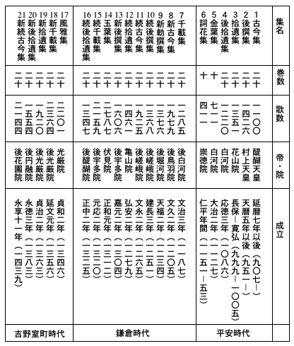
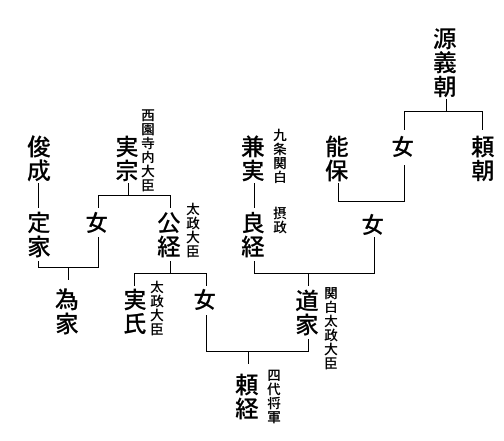
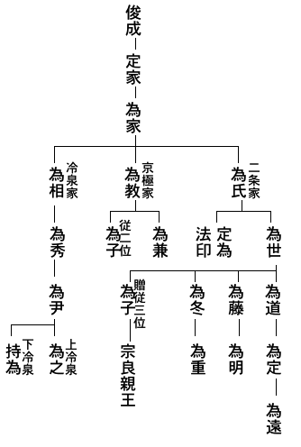
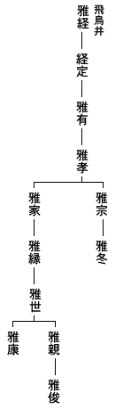

本書が版を改めて世に出る時を持ちえたについては、並み並みでなく感慨を
強いられるものがある。
私は昭和十四年の年末に原稿を書きあげて、翌年一月二十日づけの序をしたためた。そして本書の初版は二月二十日の日附で刊行されている。それは日本的なるものの強調から日本主義にすすみ、林内閣の祭政一致の宣言から国民精神総動員へと急激に傾きつつあった一時期である。その線に沿って思想や研究やの統制は、きおい立つ力で強められていった。学界の一部は幾分自ら進んで自由を狭め、真理の探究を投げ打って、そうした精神統制に挺身追随したように見えたが、中でも国文学界は挙げて時潮に狂奔するもののような疑いさえ
蒙った。本書もそうした時期において書かれたものであった。
私も国文学徒と世から呼ばれるような仕事にかかわってきた一人であったにかかわらず、自分では国文学者と一つなみに呼ばれる中へ加えられるには何かそぐわない点を中に感じつづけてきた人間であるだけに、そうした時期の執筆は殊に
気骨の折れる仕事であった。そのために不要の所で言葉使いや言い廻し方に絶えず注意したり、率直に言えるはずの事を言わずにしまったりするような結果になった。それは本書を少しも積極的に良くしなかったばかりか、種々の点で悪くしている。その中でも最も根本的な点は、全体としての構想をかなり
曖昧にしてしまっている事である。思想表現の点で十分の自由が保証されている今日にあっては、余りにも中庸を得過ぎているに違いない私の構想も、当時思想統制の前衛としての国文学界においては、それが
明晰に語られるならば、異端の
烙印を蒙るおそれは決して存しないわけではなかった。私は今日この文章を読み直してみて、今少しの明晰さと厳密さとを表現に与える勇気を持ちあわさなかった弱さを思うと共に、当時私が時代精神の圧力に対して
抱きつづけた対抗と緊張と恐怖との肉体的感覚や、
暗澹たる無力感や、それにもかかわらず働きつづける批評的意識やを思いおこして、自分自身がいとしまれてならないのである。このように
些か感傷の
痕をとどめた文体は気になる点が多いのだけれども、
敢て気のついた誤植をただすほか、一切文章に手を加えないでもとのままに止めた。読者もまた私のそうした愛惜の情を許されるであろう。
ただ一箇所意識して正した所がある。第七節
後鳥羽院関係の叙述の終近く、初版には「上皇の風雅であり、遊びであらせられる。しかしまたかくの如く困難な時代には、上皇には上皇の抒情があらせられる」とあった所だけは、この版では今見るように改められている。それは最初の原稿にそうあって、すでにその通り刷り上がっていたのに、当時内務省の検閲において問題になり、どうしても許可にならなかったので、やむを得ず
紙型に
象眼をして、その頁だけ刷り直したのであった。読者はそのいずれであっても殆ど問題にされないであろうけれども、そうしたどちらでも良いような違いであるだけに、最初の原稿通りにもどして置きたかったにほかならぬ。
以上のようなわけで、本書は厳密な意味において最初の形を些かも変えていないのであるが、その結果、初版が出てから今年までの八年間になされた研究によって修正をほどこしたり追加したりする事が一切出来なくなってしまった。私は特に注意すべき業績についてだけ、ここに列挙して置きたい。
その第一は、第四節
西行の処に関している。そこには当時として最もよいと思われるテキストを挙げて置いたが、その後、
佐佐木信綱博士・
川田順氏・
伊藤嘉夫氏・
久曾神昇氏による最も完全な『西行全集』（昭和十七年・文明堂）が刊行された。これは西行関係の全集として今までのものと比較することの出来ぬ完全さに達している。
第二に、第四節西行論は全体として今日では些か私の意に満たぬ点の多いものである。これを書いた頃、私はまだ自分としての確定的な西行論を
掴んでいなかったからである。その新しい考えの一端は、敗戦後の私の第一作である『西行論』（昭和二十二年・建設社）にまとめられている。それを
併せ読まれる好意を有せられるならば、私にとってこの上もない喜びである。
第三に、第六節の『新古今集』撰定論の主旨が、後鳥羽院を中心として撰定の行われたと見る点は、今もその通りで変りはないが、それは今では後鳥羽院
宸撰説とでも言うべき説の成立によって、一層決定的なものとなって来ている。それは、戦争中に前篇を出された
小島吉雄博士の『新古今和歌集の研究』続篇（昭和二十二年・星野書店）の要旨であって、
緻密な考証によって動かしがたい確実性にまで到達し得ている。
第四には、第九節の定家論の所で註の中に紹介した定家歌集を訂正する。定家の後裔
冷泉為臣伯爵自ら編纂した『藤原定家全歌集』が、定家七百年
遠忌の記念として出版された。それは定家自筆の家集のはじめての覆刻である上に、私の『新古今時代』における「定家家集補遺の研究」の不完全な点を現在知り得る最も確実な資料によって訂正増補された補遺を附してあって、殊に補遺作成のための論考の中に多くの示唆を含んでいる。今日望みうる定家全歌集としてこれ以上のものはしばらく手に入れる事は出来がたいであろう。ついでながら冷泉為臣氏はその後戦争の犠牲となられた。つつしんで
哀悼の意をささげたい。
このほかなおいくつかの研究も発表されているが、ごく重要と思われるもの二、三を列挙してほかは割愛しなければならぬ。
今私は北海道の地に来て、札幌の静かで深い秋のけはいの中に沈んでいる。そして多くの友の戦争によって背負った運命の違いについて思いかえしている。そして私は死にもせず、また自分の考や言葉も変える事なく生きて行ける幸を思いつづけている。この北方の都は幸に捨てねばならぬ伝統の
桎梏を持たず、緑の樹間に白雲を望む清澄の空気は、壊滅の後の文化再建を考えるにこの上もなく
応わしいようである。私はここで本書の自然的発展の結果をまとめる事が出来そうに思う。それまで本書はなおしばらくの間、私の代弁者となっていてくれるであろう。
最後に私は、
古書肆の店頭から殆ど姿を消してしまった本書を再び
人寰の
裡へ呼びかえしてくれられた知友
角川源義さんの御厚意に、心からの御礼を申しあげたい。
昭和二十二年九月一日
風巻景次郎
［＃改丁］
一 うたとやまとうた、漢詩と和歌、詩と歌、和歌と短歌
二 中世、和歌は中世文学の主軸、物語は文学でない性質を含んでいる、勅撰和歌集、二十一代集、『古今集』の伝統が『金葉』『詞花』で衰える、『千載集』の後また『古今集』伝統が復活する、これが中世文学の開始である、藤原時代芸術の特色、その『金葉』『詞花』への反映は和歌の危機を意味する
三 藤原俊成、隠者文芸、『千載集』、その特色、抒情性の優位、幽玄
四 西行法師、『山家集』、実人生への敗恤と交換した文学精神
五 『新古今集』、その特色、錦繍的妖艶、後鳥羽院の御趣味、『新古今』撰定前の歌界、若き定家
六 『新古今集』の撰定の経過
七 後鳥羽院、院の御製と新古今時代廷臣の歌とは別の所から生れている
八 源実朝、『金槐集』、実朝の歌の多くは風流の歌である
九 老いたる定家、歌に対する見識の変化、世間的幸運
十 『新勅撰集』、新古今調からの離脱、世襲の芸道の建立、有心、歌における「詩」の喪失の警告、「詩」を培うものとしての漢詩、漢詩と和歌との融合
十一 為家
十二 二条・京極・冷泉三家の分立、持明院統と大覚寺統、分立の意義、為世歌論の保守主義、為兼歌論の新鮮さ、『玉葉』の歌と『新後撰』『続千載』の歌と
十三 吉野朝時代の勅撰和歌集
十四 鎌倉末この方の自然観照、天象が景色の重要な要素となる、『玉葉』『風雅』の叙景歌の功績、頓阿の歌、牧渓水墨山水に触れた心
十五 宗良親王、『新葉集』
十六 室町時代に歌は芸術であることをやめ始める、今川了俊、正徹、尭孝、飛鳥井雅世、正徹の論理と尭孝の理論、正徹と尭孝との定家の立て方
十七 東常縁、老年の定家を立てて『新古今集』を排斥する、宗祇、古今伝授
十八 歌道はまさに消えようとしていた、結語
［＃改ページ］
草木のさやぎにも神の声が聞かれた遠い
古の代から、歌は神や人とともにあった。もちろん私どもの祖先は、いまだ文字を使っておらなかったから、その歌はもっぱら口承されて
うたわれたものであった。それにまた、それらの歌はいずれも生活の中から生れたものであって、年中行事や祭儀や労働と素朴に結びついており、むしろその一部だといってよかったから、異民族の歌の魔力がしのび込む余地は全くないといってよかった。たとえ異国の歌でも、もし彼らの生活にとり入れられたものならば、それは即ち彼らの歌であった。彼らの歌でないものは、彼らの生活意識の中に場所を占める魔力を持っていなかったのである。このようにして、私どもの祖先はただ単に
うたを持っているだけであった。
そうした頃の歌は、数かぎりなくこの日本列島の
聚落のうちで、人たちの口にうたわれておったであろうが、社会生活の生長変化にともなって、生活から遊離する歌は勿論つぎつぎに出来ていった。それらの歌は、ちょうど松の木の皮のように、あるいは人の頭の
雲脂のように、古代人の生活の幹から脱落していったが、書かれたものでなかったから、大方はみな消えはててしまったと思われる。それらの歌のうちで、朝廷に伝えられたものだけが、形はたとえ変ったりきれぎれの断片になったりしたにしても、記録の行われる時代まで持ち越されて、『古事記』や『日本書紀』や『古語拾遺』やのうちに、二百あまりも書きとどめられたことは、私どもにとって得がたい幸であった。
けれども、それらの歌とても、すべてただ
うたであればよかったのであって、何も殊さら
やまとうただの
和歌だのといったり記したりする必要は少しもなかったのである。現に『古事記』にも、『日本書紀』にも、和歌という名詞は、まだ全く一度もあらわれて来ないのであって、数々の歌を記すところにも、
歌曰とか
歌之曰とかと記されているに過ぎないのである。思えば単に
うたで通っていたものが、
やまとうたでなければならなくなり、あるいはまた、
和歌とか
倭歌とかでなければならなくなったということは、まことに意味の深重なものがある。これは一種の自己限定であるともいえるし、自己分裂であるともいえるであろう。何故ならば異国人が私どもの歌を指して「日本の歌」というのならば事は別であるが、自から自分の歌をつきはなして、「日本の歌」と呼ぶようになったとすれば、すでに日本の歌でない何かほかの歌との対立が、彼らの生活の中に生れていると見なくてはならず、そうだとすれば、自分の生活と自分の歌との素朴な結合はすでに揺ぎつつあるからである。諸君もきっとこの点に大きな疑問のまなざしを指し向けられたことがあるであろう。何故そのようなことが起ったであろうか。そして
何時そのようなことは起ったのであったか。
和歌あるいは
倭歌という名辞のあらわれるのは『万葉集』からである。しかし
やまとうたという意識が明らかになってきたのは恐らく大化改新の頃からのことであろう。そして自からの歌を
やまとの歌と意識させた対立物は、私どもの祖先にとっては、ほかでもない
からうた、即ち漢詩であったのである。
もちろんこの意味の
からうたは、支那の土地で支那人によって
愉しまれつつあった漢詩を指しているのではない。そうしたものならば実はどうでもよろしいのであって、大切なのは、日本人の精神生活のうちに、漢語でつづる漢詩と、日本語でつづる和歌とが、ともに相並んで場所を占めるようになったということであった。もちろんまだ
稚かった日本が老大支那の文物に触れはじめたのは、恐しく早い昔からであった。漢字漢文を理解し得たのも決して遅いことではない。けれども異国語の難関をのり越え、
爛熟した生活感情を
咀嚼してまで、老大国の文学を机辺の風雅とすることは、あまりに稚い民族には、いまだ興り得ない、精神の
放蕩であった。私どもの祖先が、日本語の歌と同時に、
漢魏六朝の
詩賦に魅せられ、それを
真似うるようになるためには、そのような文化的感応と欲求とが
自ずと内から生れてくるくらいに、生活そのものが成熟する時を待たねばならなかった。そして、そのような文化上の開花期が日本列島の上におとずれたのは、
飛鳥朝から大化改新を中にして
近江朝へかけての頃であったのである。
今から一千三百年前におこなわれた大化改新が、明治維新にまさるとも劣らぬ大維新であったことは、諸君も
夙に熟知しておられるところであろう。明治維新を境として、欧洲文明がしきりに移植されたように、大化改新を境として、支那文明の輸入がにわかに
活溌となった。これら二つのいずれの場合にも共通な点は、外交の触手がふれ合うようになった先進国の文明を取り入れて、自分を補強し
変貌することが、その先進国を相手にまわしながら
毅く自分を生かすために、是非必要のことだったのであるが、そうした文化工作が形の上でも質の上でも成果を見せるには、彼土の文明を大した矛盾なしに同化しうるくらいに、こちらの生活が成熟していなければならなかった。明治維新の日本はまさにその通りであった。そして大化改新の日本もほぼその通りであったのである。
ただ一つ彼と此とで違った点が見られるのは、文字上の問題であった。明治維新の後も、英語を
以て国語としようというような論が、一時行われたことはあったにしても、ついにそのことは実現せず、
羅馬字運動も明治十年代に早く生じていながら実を結ばず、まして日本詩壇の一方に英語詩や
独逸語詩が場所を占めて創作されるというのでもなかったのに、何故大化改新の方では、それを境にして、日本国内に本来異国語の詩である漢詩が根をおろすようになったのであろうか。しかしながらこれは、割合に単純な二、三の原理に基づいて生じた相違であったのだが、特に形の上からいうならば、先進文化の輸入が同時に彼の用いる文字文章の移植と切り放し得ない事情にあったという点に、大化改新の場合を明治維新の場合と相違させる原因の一つがあったのである。当時の人々は、国語をもってはいたけれども、それを書きしるす国字をもっていなかった。明治の人々は欧洲文化を日本に植えつけるに当って、翻訳すればことは足りた。しかし大化の人々は、文化を輸入するために、先ず漢文を移植しなければならなかった。近江朝廷の令にしても、
大宝律令にしても漢文で記されねばならなかったし、詔勅も上奏も
太政官符も戸籍も歴史も、すべて支那文化に
則る政治風教の百科の事務はみな漢文の記録にたよらなくてはならなかった。大学は官吏養成のために漢文と儒学とを教授したのである。
随って宮中の雅宴に唐の法式が影響して、漢詩の制作がはじまったとしても、まことに自然のことだったのである。これは羅馬の文化がアルプスを北に越えてから、中欧の文化開明期に、地方語の歌のほかに
羅典語の詩が書かれ、学者の間にはながく羅典語が使用されたのと全く同じ現象であったのである。
このようにして、
からうたは日本の宮廷を中心にして日本列島の上に根をおろした。そしてそれに対立して
やまとうたの意識も宮廷を中心として成り立って来るのであった。この事実をいちばんよくあらわしているのは、漢
詩と和
歌との文字づかいであらねばならぬ。この詩に対して歌という字を使った使い方に、そのころの日本の
うたのあり方がよく表われているのである。
さきに和歌の語のはじめてあらわれたのは『万葉集』だといったが、その和歌の多くは他人の歌に対して、こちらからも歌で応和返答する意に用いてあるから、かえし歌とかこたえ歌とかいう意味で、日本の歌の意味ではない。しかし倭歌と記してある方は、漢土で日本のことを倭といった用法にしたがったのであるから、日本の歌の意味であることも明らかである。次いで歌の字の問題であるが、いちばん簡単にいえば、『
釈名』に人の声であるといっているのがそれで、今少し精しくいうと、『書経』の
舜典にあるように、言を永くすることである。『
説文』には詠也とあって、言を永くするを一字にあらわせば詠である。さて同じく詠ずるのでも、そこに差があって、『詩経』の
魏風の
疏によると、楽器にあわせて詠ずるのが歌、伴奏なしで詠ずるのが謡であるといってある。歌謡といえば、だからすべてのうたう
うたを包括することになる。これを要するに、歌は
うたうという日本語にちょうどあたっているのであって、しかもその当時は、日本古来の歌のうたい方として、和琴を伴奏に使うことがほぼ法式のようになっていた。地方などではいざ知らず、宮廷関係ではまさにそうだったのである。実例はいくらもあるが一つ挙げて見ると、『万葉集』巻八に、
時雨の雨間なくな降りそ紅に匂へる山の散らまく惜しも
という歌がある。これは
天平十一年冬十月に
光明皇后の営まれた
維摩講においてうたわれたもので、終日
大唐楽や
高麗楽のような舶来の大管絃楽の演奏される間にまじって、うたわれたのであった。そして特に琴を弾いた人は、
市原王と
忍坂王とで、うたったのは田口
朝臣家守ほか十数人であったと記されてある。こんなわけで、日本語の歌は楽器伴奏でうたわれるものというのが、その頃の宮廷関係の人たちの常識であり、日常目に見、耳に聞くところであった。だからこの日本の
うたに
謡ではなくて
歌という漢字を当てたのは、実に正しい文字使用法であったことが分るのである。
それに対して詩の方はどうかというに、いちばん簡単にいうと、『説文』に志也とあるのや、『書経』の舜典に詩は志をいいあらわすものだとあるのがそれであるが、今少しく精しくいうと、『詩経』の
国風関雎の序に、心にある間を志となし、言に発したのを詩となすというのや、『
漢書』の
芸文志に言を
誦するのを詩というとあるなどがそれである。要するに日本語でいう所の
うたうのでなくて、思っていること、胸の
裡にあることを言葉に発表したものを指すのであるらしい。支那の字書の定義は警句めいていて精密とはいえぬから、私どもには本意を
掴むのがむつかしいが、右のように考えるならば、詩は文学の本質に触れている。しかも古代民謡のようなものでなく、個人的な志想をあらわした創作を指していることになるであろう。とにかく、単なる歌は詩でないが、同一の詩でも、音楽としてうたう側からいえば歌といってもよいわけらしい。当時支那から伝わった漢詩はすでに民間の歌謡とは別で、文字にたよって個人の感懐を表現する創作的文学作品となっていたし、当時の宮廷の人たちもそういうつもりで取り入れたのだから、当然漢
詩であってよかったのである。
このようにして、その当時の実情に即して、漢詩と和歌という名辞が宮廷の人たちに用いられるようになったと思われる。ただそれと同時に忘れてならぬのは、漢詩と和歌、
からうたと
やまとうたという文字なり言葉なりは、繰り返していうようではあるが、宮廷を中心にした貴紳の間でのことであったろうということである。ところが漢字の使用に
馴れてくると、『万葉集』や詔のうちの一体である
宣命やなどに見られるように、早くも漢字を一種の表音記号に用いて、日本語をかなり精密に記載しうるようになってきた。日本語が字で書けるようになると、やがて支那の詩賦に
真似て、はじめから文字にたよった読む歌がつくられはじめた。そのことは実に日本文学史の上から見れば、画期的な大事件だったのである。現在のごとく
口承文芸に対立させて、詩といわず小説といわず、すべて文字的創作文学のみをはっきり
文学と意識するかのごとき立場からいえば、日本文学史はまさにこの時代にはじまったのであり、和歌文学はまさにこの時代に発芽したのである。
とにかく字に書いて個人に送ったり、一人備忘にそなえたりするうちに、表現は自ずと個人の癖をよく出すようになり、読者も特定の一個人の感懐としてその意味を
汲みとることに馴れてくる。読む歌は急速に個人的な創作に変貌する。既に音楽と袖を分って文字にのり換えた歌、聴覚から視覚へと転居した歌は、民族の声を大まかに伝えるのでなく、民族の中のある個人の心を伝えるようになる。すでにそれは歌謡ではなくて創作詩である。現に『万葉集』には
倭詩という言葉も見えているが、実質からいって、和
歌でなく倭
詩というべきものが生れ出たわけである。『万葉集』には和
歌と倭
詩とが同居している。次の『古今集』になると殆どが倭
詩になってくる。このようにして名称の上では一旦できてしまった和歌という名称が継承されたけれども、宮廷の実情は、歌の伝承を意味するのではなくなってしまって、漢詩に対立して制作される日本語の創作詩だけを指すようになって来たのである。
それでは何故に一旦用いられた
和歌という名称が、そのまま伝わったかといえば、その重な原因はその詩型の上にあったと思う。一体『万葉集』には三つの詩型がある。長歌・短歌・
旋頭歌がそれである。長歌は５７の句が繰り返されて７の一句で閉じるのが一ばん整った形だが、もっとととのわないのもある。『古事記』『日本書紀』の歌謡を見ても句形はととのっていないので、破調の多いのは古いもの、整っているほど新しいものと考えられる。早く
本居宣長もいっているように、うたうときは音数は少しくらいちがっていても、節の上で加減するからよいのである。形の正整は眼で読むことの快感をもとめるために生れてくるのである。だから新しいものほど調ってくるのである。それに反歌といって、短歌か旋頭歌のついているものがある。反歌は一首の意味を簡約して最後に繰りかえすもので、たしかに漢詩からの影響である。そうしたものを『
荀子』には反辞といっており、『
楚辞』には乱といっているが、反歌は反辞をそのまま真似た名称であろう。長歌二百六十二首のうちで、反歌のないのが三十一首あるが、ない方が古体で、ある方が新しい。ない方は
うたった
歌だったかも知れぬ。反歌のある方は大方みな近江朝より後の作である。つまり日本の宮廷に漢詩の雅宴が催されるようになって後の作なのである。有名な
柿本人麿だってその例に
洩れない。彼の作は読む詩の初頭をかざる力作であったのである。
旋頭歌は５７７・５７７の形を持つ。『万葉集』には六十一首あって、これも古いものは
うたったものであって、調子も字に書いた上では調っていない。巻十六に、
梯立の 熊来の海底に 新羅斧陥れ、ワシ
かけてかけて な泣かしそね 浮び出るやと見む、ワシ
などとあるのが一例であるが、これに属するものも大部分は創作詩である。巻八にある
山上憶良の有名な
萩が花 尾花葛花 なでしこの花
女郎花 また藤袴 あさがほの花
などは正整の体、まことに文筆の雅遊である。
短歌は５７５７７の形を持つ。本来５７の句が二度くり返されて、７の一句で閉じたものでうたったときの句つづきは本来それであったろう。
吾はもや 安見児得たり、
人みなの 得がてにすとふ、
安見児得たり。 （藤原鎌足）
風をだに 恋ふるはともし、
風をだに 来むとし待たば、
なにかなげかむ。 （鏡王女）
などは、時代も早い近江朝頃だから、
うたった歌の句つづきがのこっているのであろう。その一面に５７５・７７の句つづきが次第にひろく力をもってくる。『万葉集』の短歌は四千百七十三首で、断然群を抜いて多いが、その中でうたわれた歌謡と思われるものは東国の民謡だった
東歌だののほかは、割に少いのである。
うつそを麻績の王海人なれや伊良胡の島の玉藻刈り食す
などは『
常陸国風土記』には
板来、つまり今の
潮来の歌として少し句をかえて伝えられていて、諸国へちらばっていた歌謡だったことが分るが、大体はつくられた歌である。
右の通り『万葉集』の三つの歌体がみなうたわれた歌と、書かれた歌とを含んでいるのだが、これはつまり、その頃歌われていた日本の
歌が大体右の三種類であって、文字的創作詩の方でもその歌体をそのまま採り入れたことを示しているものである。随ってまた、短歌四千百七十三首、長歌二百六十二首、旋頭歌六十一首という数は、そのまま三つの歌体の、歌謡または文字詩としてうたわれもし作られもした程度と正比例するものと見ることができよう。歌謡としても創作詩としても、断然短歌が優勢だったのである。このようなわけで、『万葉集』の頃には、まだ長歌・短歌・旋頭歌の三本立で、それも歌謡と創作詩とを併せ含んでいたものが、『古今集』以後になると、殆ど短歌一本立の創作詩専門といってよいくらいに変ってきてしまったのである。
このような変化を生じたのは何故かといえば、和歌という名称の用いられたのが漢詩との対立の意識または区別の意識からであり、したがって漢文学が実地に根を張っている宮廷周囲の文化圏の中においてであり、その範囲内の人たちが漢詩と対立させて
嗜む和歌は、事実上文字に書く創作詩だけに限られてきたためである。このようにして、和歌は、その伝統の確立するはじめにおいて、文字にたよる創作的詩歌であり、随ってまた、宮廷を中心として嗜まれる宮廷文学であるという性質を身に
著けたのであった。
たまたまその和歌が短歌一本立になった理由は、長歌・旋頭歌などはすでに盛をすぎていて短歌の方がもっとその頃の人の心にぴったりとしていた、いわば一層流行していたということにあるが、そのどういう点が当時の日本人にうったえた点であるかは、なかなか重大な問題であるにかかわらず、今からは容易にたしかな推測を下しにくい大問題なのである。しかし、古代の歌謡の中から、５７・５７・７という形が次第に体をなして来て、やがてそれが５７５・７７という形に展開しはじめたのは、万葉時代にそれほど遠くかけはなれるものではなかったのであって、また同時に、この詩型があれほど流行を見るようになったのも万葉時代からそれほど遠く
溯るものでなかったろうことも注意されてよいことなのである。現象的に見ても、長歌・短歌・旋頭歌などの定型詩形が並び存しておりながら、短歌だけが圧倒的に多くて、他の詩型は間もなく消えて行ったという場合、短歌が新興の詩形であると見るのが一ばん真実に近いのである。そういえるわけは、他の時代の文学の興廃の筋道が、みなやはりこれと同じような形をとるからにほかならない。
とにかくに、和歌という意識がうち
樹てられたときすでに、音楽的歌謡の面をふり捨て創作的文学詩となり、村落
巷里の歌謡であることをやめて、宮廷貴紳を中心とする文化圏の詩歌であり、そして短歌形式を主軸とする詩歌であった。和歌は、日本人によって日本語で作られた歌というだけにとどまらず、以上のような属性をはじめから身につけたものとして現われたのであった。
それに対して一般の歌謡はどうなったのであろうか。歌謡としての長歌・短歌・旋頭歌形式の歌はどのような路を
辿ったであろうか。それらは全く亡び去ったものであったろうか。もちろんそうではない。歌謡は民族の心に宿って、永久に宮廷の内にも
村閭の間にも、そのうた声を響かせる。のみならず、古い歌とともに絶えず新しい歌もまた生み出される。古い形式がうたわれるとともに絶えず新しい形式もまた生み出される。もちろん
神楽や
東遊のような御神事の歌の中には短歌が厳然と形を保っている。のみならず、『
梁塵秘抄』や『
閑吟集』や
隆達の小歌にまで短歌形式は崩れずに伝わってゆく。が、それだけに古体を存したということになる。そしてたとえ短歌形式であっても、神歌だったり小歌だったりで、決して和歌ではないのである。
仏会の歌もはじめは前に引用した
維摩講のときの歌や、
薬師寺に伝わっている
仏足石歌碑の歌や、
百石讃歎の歌やのように短歌であるが、
慈覚大師あたりから後では梵讃漢讃の形にならって、七五調の長大な和讃が生れてくる。歌謡の方では、古代の長歌・旋頭歌なども一時流行の体であって、後から新しいものが取ってかわって行ったように、短歌の体もまた一時の体に過ぎなかったので、やがてそれが古体と見られるようになり、更にまた新様の歌体が作られていったのである。そして日本語の歌謡は諸君も熟知されるように、たとえば
木曾節の７７７５調、
木曾の御嶽さん
夏でもさむい
袷貸したや
足袋そえて
のような、つまり、近世民謡の流行形式である
都々逸形式のようなものにまで変ってきた。そして更に、どしどし新しい体が生れようとしているのである。
平家琵琶や宴曲・謡曲・
浄瑠璃・長唄・浪曲などのような、語り物風なのや、謡い物にしても長いものに到っては、千差万別である。音楽的詩歌の方が右のような勢である中にあっては、平安時代に生じたように、文字的詩歌である漢詩や和歌やを逆に再び音楽詩歌に引きもどして、朗詠というようなものをはじめるようになって見ても、それは
如何にも智識階級だけのもので、あくまで雅潤な味をたのしむものではあっても、民族の間には
滲みこんでゆかないのである。歌謡の形がつねに変って行って、引きとどめることのできなかったわけは、それが
何時も民族の生活から生れ、生活と一緒に生きていったことと、そして今一つは、聴覚を媒介にするということが、感覚的に浮動性を保存するということに関係する。
それに引きくらべて定型の創作詩は、曲節の変化によって姿を変えることから超越してしまい、専ら視覚を媒介として読むようになるために、その型を表現上の一つの習慣として固定させるようになるものであるらしい。詩型にはその詩型独特の情趣が生れてくるので、和歌は宮廷の文字的詩歌に定着すると同時に、伝統の詩歌となった。ことに和魂漢才というように、和漢ということが宮廷ではっきりと相対立する観念として意識されたことは、漢詩に対する和歌の用途をひろくもしたし重くもした。平安朝のはじめ、後宮のもてあそびであった
歌合が、清涼殿の催しにまで昇格し、勅撰の歌集が編まれ、ことに漢字が男子の公に仕える教養であるのに対し、和歌が女子の教養となって、『
大鏡』にもあるように、『古今集』を全部そらんじた
后もおられるようになってきた。
けれども何よりも増して、重要だったものは、ただ単に和漢文化の対立観念だけでなくて和歌を尊いものと感じさせた自国の文化伝統に対する自覚であり、誇りであった。日本には神代から和歌があって、それが神の
御裔の
帝の廷に、絶えることなく承け継がれて来たという、昔ゆかしい信念であった。『古今集』の序にも和歌は
素戔嗚尊にはじまったと記している。これは『古事記』の、
八雲立つ出雲八重垣つまごみに八重垣つくるその八重垣を
という、尊のお歌をさすのであって、記録の上からいえば、これが一番古い歌であることはたしかである。しかし考えて見れば、このお歌よりも古くからもっと沢山歌があったことは当り前のことだし、このお歌が短歌の形になり切っているのも、ほかの神々のお歌のことなどから考えあわせ、また文字のない浮動性のはげしかった時代のことだから、後の伝承者が短歌の形にととのえてしまったと見るべきものと思われるのであって、このお歌一つに全和歌がはじまるという風に見るのは、今からいえば記録だけにたよりすぎて、真実からはなれすぎた素朴な歴史観に過ぎないし、第一和歌という観念はまだ影だに見えなかったときなのであるが、しかし平安時代はじめの人々の考え方としては
尤もなことであったのである。そのことが、漢詩に対して和歌の尊さを守らせたのであった。これは和歌という名であらわされた、日本のうたに対する愛であった。ただにやまとうたの中の一短歌体に対する愛にとどまるものではなくて、
和歌そのものに対する愛であったのである。だから私どもの祖先たちは、たとえ作るときには短歌だけしか作っておらなくなっていても、それを漢詩ならぬ和歌というように考えて、何の矛盾も感じなかったのである。
日本の詩とは日本語の詩よりほかにないということがはっきり分っておる現代の歌壇では、専ら短歌を作るから、短歌と呼んでいて、和歌とはいわなくなっている。これは詩型と名称との間に矛盾のあることを欲しない合理主義的な欲求である。現歌壇が和歌を新しく生かすことが出来た源は、この現実に即した精神であったことはいうまでもない。短歌を作るだけだから、それを和歌といわずに短歌といおうとする現実に即した精神があるから、生活の現実に即した抒情をもなし得たのである。それだけにおそらく、その精神は現実に対して合理的であっても、歴史に対して理解を持とうとする欲求からは遠いものでなかったかと思う。少くとも明治以前においては、というよりも江戸時代以前においては、漢文学の魔力と
相剋していた故に、日本語の歌は、短歌という前に先ず和歌であったのである。ところで
憚らずにいえば、私は今一首のよい歌を作ろうとする欲求のほかに、日本の文化の歴史をはっきりと知ることの欲求が生れていることを感じている。文学か歴史かである。そして、私が今中世の和歌について一つの
鳥瞰をしようとする意図もまた、歴史を知ることの欲求にゆすぶられてのことである。そして、こうした意欲は、実をいうと、単なる過去の事実を事実として知ろうとする、いわば博識への
憧れとは全く縁のないものであって、現代文化の対面している情勢への見透しのためであり、自分の心に
萌え出しつつある傾向がどのようなものであるかを自覚するためのものであるにほかならない。そうした意味で、この鳥瞰もまた、実は現代短歌の動向をはっきりと知りたく思う心持に結びついているのである。さてしかし、とにかくに、和歌という観念の発生の当初から、和歌は以上に考えたようなものとして自覚され、把握されていた。そして、勿論平安末期中世初期においても、和歌は右のようなものとして
承け継がれた。だから、これから述べるところも、文学形式からいえば単なる
中世短歌史であるといえるけれども、問題を取りあげる立場から見るならば、それはあくまで
中世和歌史でなければならぬ。
註 和歌史として最もよいものは児山信一著『新講和歌史』。これは和歌史としてこれまで出たものの中では一ばん優れたものである。また右に述べたことの参考書としては折口信夫博士『古代研究』三冊、武田祐吉博士『国文学研究』三冊、西田直二郎博士『日本文化史序説』、高野辰之博士『日本歌謡史』等を推したい。いずれも名著の誉れの高いものである。
［＃改ページ］
中世というのは鎌倉時代・吉野時代・
室町時代そして
安土桃山時代の始まるまでを包括して便宜的に使った名称である。この時代は平安時代の伝統を承け継いで、全く京都の宮廷を中心にした
公家の間に和歌の伝統が流れる時代である。近世の江戸時代になると、京都の公家の和歌はいわゆる堂上家の歌といわれて、幾分旧式のように見られ庶民の間に新しい和歌の流れが根を張ってくる。大体この庶民階級に和歌熱が生れてくる以前が中世の下限という位に見て扱おうと思う。
さてこの時代の和歌の根本的特質は、それが唯一の日本文学の伝統であったということである。漢詩と相対立する唯一の日本語の詩であったということである。しかしそういえば、諸君はただちに、平安朝時代にすでに美事な物語、ことに『伊勢物語』や『源氏物語』や『
夜半の
寝覚』がつくられているではないか、それにまた『
蜻蛉日記』や『
枕草紙』や『
更級日記』やのような美しい日記随筆の類が生れているではないか、そしてそれらはいずれも立派な文学ではないか、と考えられるかも知れない。勿論そうもいえるし、それが今日までの常識でさえもある。けれどもそれらが今日から見て文学と感じられるようになったのは和歌風に彩どられた感情的表現にたすけられて、それによって文学と感じられるものが随分多いのであって、つまりは和歌を主軸にしてその周辺に咲き出た花であった。そして物語の主軸は実は文学という点にはないのであって、それは古代の歴史伝承の方法であった
語部の物語が、文字に移された過程の延長なのである。だから、平安朝の物語の主題には何か神の世界から縁の切れきっていないものが多い。その事は『竹取物語』のように、月世界から罪によって下界へ
堕ちた天女が、再び月世界へ昇天してしまうというような話にははっきり感じる事が出来るであろうけれども、実は光る源氏の君でも現実の人間の写実的描写とばかりは決していい切れないのである。源氏の君も何かの
垂跡であって、その
本地が探られ得るのでないかという気もする。とにかく
物語という名称には文字のなかった時代のもの語りの古い観念が残っているのである。だから平安時代にはまだ物語と歴史との概念は充分分化していないのである。その証拠は、『源氏物語』の調子で
藤原道長を中心に
藤氏の栄華の歴史が書かれると、それは『栄華物語』である。その同じ主題が
大宅世継の昔話として書かれると世継物語ともいえたし『大鏡』ともいえた。世継物語とは歴史物語の意だし、『大鏡』の鏡は支那の『
資治通鑑』などの鑑と同じく、支那史学の立場から見た歴史の意味を持っている。とにかくに物語の主軸は歴史だったので、平安時代には物語はすでに文字的創作文学に変質しつつあったにしても、一方にまだ厳として物語即歴史という観念を保存しておった。そうした中では『源氏物語』が今日の文学というに
適わしい所まで変質しきった形を見せている最初のものといってよいかも知れない。
それに比べると、『枕草紙』のような随筆は、その発想に和歌に近いものがあったようである。日記にもそれがよく出ているようである。つまり物語よりも一層文学的であったのである。
ところで私は不用意に文学という言葉をときどき使ったが、その文学とは、せまい意味の文学的な今日いうところの文学のことなのであって、それの本質は、個人の心情を通した抒情である。随ってそれはまた、読者の個人的心情を抒情的にする。その意味からして、平安時代から中世を通じての文学伝統の主軸は和歌であったと見なければならぬ。物語などはまだ歴史と詩との間に揺らいでいたのである。以上のように文学伝統の主軸であるという意味から見ると、中世の和歌はなかなか重大な意味を持つものとなってくるのである。だから中世和歌を考えることは、宮廷を中心とした唯一の文学伝統の主軸を考えることになるのである。
さてその和歌の軸になるものは、歴代の勅撰の和歌集である。これが平安時代に六集、鎌倉時代に十集、吉野・室町時代に五集、併せて二十一集撰ばれている。これを併せて二十一代集と名づけている。これは後々まで必要だから、次にその表を掲げて置くことにしよう。
一体『万葉集』にも勅撰説があるのだし、あるいはそれは有力な考えになりはしないかとも思うのであるが、明確でないから避ける。『古今集』以後の和歌集が勅によって撰ぜられたのは、『
経国集』・『
文華秀麗集』・『
凌雲集』などの詩集が勅によって撰ばれたのに倣ったのであるが、一度『古今集』が出てからは、これが永く御歴代の催しとなった。和歌の伝統が宮廷に確立したことがそこにもあらわれているわけである。

右の表を見られると分るが、『古今集』が二十巻になったので、その後も殆ど二十巻である。それから右の表には出してないが、歌の
部立、つまり分類も、『古今集』が春・夏・秋・冬・賀・離別・
羇旅・
物名・恋・哀傷・雑・雑体・
大歌所御歌としてから、大体この方針が承け継がれた。物名や大歌所御歌などは後ではなくなったり、
神祇・
釈教の部が立てられたりしたが、四季・恋・雑の三大部は『古今集』この方、勅撰集の根幹となった。そうした歌集編纂の分類形式にまで、『古今集』の型が根強く承け継がれた。
そうした形式の上だけにとどまらず、勅撰二十一代集が文学の主軸をなした時代というものは、歌の声調までが古今調であったのである。『万葉』の声調と『古今』の声調との間には、かなりのひらきがある。勿論一から十までそうというのではなく、『古今集』の中でも割に古い歌と思われる
読人不知の歌、つまり作者不明の歌には、万葉風の感じられる歌もあるが、大体の特色をなす声調は、『万葉』と『古今』とではかなりちがっているのであって、ことに、『古今集』の方には、宮廷の雅会に引きつけられた貴族的な、教養人的な感じが深い。二十一代集は全くその『古今集』の声調を承けていて、万葉集的なところは感じられないのである。こうした作品自体の性質までが、『古今集』への信頼をあらわにした伝統を背負っているのを見ると、宮廷中心の和歌の主軸がどのようにはっきりしたものであるかということがわかるのである。このことは、別に一々例を挙げて説明するまでもなく、実地に読めば誰にも分る事実なのだから、一つの基礎条件として念頭にとどめて置くことにしよう。
さて、そうした予備智識をはっきりさせた上で、今一度右の表を見直すと、平安末期の『金葉集』と『詞花集』とだけが十巻になっていて、歌数もはるかに少ないことが著しく眼につくであろう。それに、『古今』の後に撰び、遺れるを拾うという題号にもあらわれているように、『古今』『後撰』『拾遺』の三集は互に先の集を承けて仕事をしている意識が題の上にもはっきり出ている上に、歌風も殆ど同じといってよい。『拾遺集』で少し感じが変るけれども、大体同じと見てよいのである。だからこの三つを併せて三代集と名づける。『古今集』の歌風のもととなる集は、『古今集』だけでなく、三代集を指すのが普通になって来ているのである。そして、そのつぎは『後拾遺』という風に、やはり前を承けた態度で題名もつけているのであるが、『金葉』『詞花』となると、題名も全く別の詞花言葉を愉しむというような風雅の宴遊気分に立脚したような、題名になっている。これはいわば、『古今集』この方の感じ方うたいかたがここだけで力を失くしておることになるのであって、なかなか注意に価することなのであり、それだけにつぎの『千載集』で、ふたたびもとの伝統的な型に復しているという現象も、なみなみでなく注意しなければならぬ問題なのである。
一度崩れ出した伝統は、並みのことではもとに復するものではない。大方は新しい流れに押されて行ってしまうものである。それが立ち直ったのだから、『千載集』の復古主義は非常に力の強い、
旗幟鮮明な運動であったことを承知しなければならない。ここに実は中世文学の開始があったのだともいえるのであろうが、とにかくこの現象は並々のものではない。そこで一体こうした出来ごとはどうして生じ得たのであろうか。私はこの問題に托して、中世和歌の説明をはじめることとしよう。
和歌、というよりは京都宮廷の文化の一転機が、『拾遺集』から『後拾遺集』の頃にはらまれつつあった。
花山・一条の御代から後三条・白河の御代にわたる頃で、御堂関白道長から、その子宇治関白
頼通の頃、美術史の方でいえば
法成寺や宇治の平等院が出来たいわゆる藤原時代の頂上で、文学史の方でいえば『枕草紙』『源氏物語』『
狭衣』『夜半の寝覚』『浜松中納言物語』『更級日記』などの生れた頃である。
この頃の芸術全体の上の特色は絵画的要素の支配した点であった。絵画的ということは、彫刻や建築やを一層視覚的快楽に奉仕させるようになる。線条は繊細に、色彩は美麗になる。絵画には仏像画ばかりのところへ風景画が成立する。そして広大な空間を感じさせる画面が成立するようになる。文学の上では描写が成立して、読む中に、まざまざと視覚的映象をよびさますような技巧が生れる。これを文芸的な方でいえば、『枕草紙』などは絵画的特色の粋ということが出来るであろう。日本の歴史の上で
未だあらわれたことのないものであった。
たとえば、
五月ついたちなどの頃ほひ、橘の濃く青きに、花のいと白く咲きたるに、雨の降りかゝりたるつとめてなどは、世になく心あるさまにをかし。（三十四段）
ここに橘を、葉の濃青と花の白さとでとらえている、色彩感覚的な技法を、記憶にとどめられたい。しかもそれはあかるい昼の日なたでもなく、はなやかな夕陽の中においてでもなく、ただ雨の降っている早朝の、冷え冷えとした、ほのあかるさの中の橘をのみたたえているのである。
もちろん橘そのものは『万葉集』以来、王朝の貴人になじみの深いもので、
紫宸殿の御庭先にも植えられている
右近橘である。題材としての新しみは何もない。にもかかわらず、右の表現が印象的なのは、眼で見た橘の性格をはっきりと感覚していて、それを一ばん強調できる時刻とか、天候とかに配合して見せたからである。つまりは空気と光線との中でものを見た。これが絵画的な効果の源なのであるが、そのことは、ちょうどこの時代から生れてくるのである。
勾欄のもとに青き瓶の大きなる据ゑて、桜のいみじく面白き枝の五尺ばかりなるをいと多くさしたれば、勾欄のもとまでこぼれ咲きたるに、昼つ方、大納言殿の直衣の少しなよらかなるに濃き紫の指貫、白き御衣どもうへに濃き綾のいとあざやかなるを出だして参り給へり……うらうらとのどかなる日の気色いとをかしきに……（二十段）
などは、うららかな春昼、満開の桜の枝と大納言（若い皇后定子の兄君
伊周公である）との配合の美しさである。
秋は夕ぐれ、夕日はなやかに射して、山の端いと近くなりたるに、烏の寝所へゆくとて三つ四つ二つなどとびゆくさへあはれなり。（一段）
にしても、
日は入日、入りはてぬる山際に光のなほとまりてあかう見ゆるに、薄黄ばみたる雲のたなびきたる、いとあはれなり。（二〇五段）
にしても、入日の美しい場合をはっきりと捕えている。こうした絵画的な美しさがどうして生れたかは第二として、これがひたむきな感動の表白などでなく、鋭い感力でしずかに細かく対象を感受しているものだということは分ろう。そしてその美しさは詠嘆調の美しさではなく、感性的な美しさであることもたしかである。こうした美しさは、近代でいえば
木下利玄の歌に見えた視覚的な美しさであった。根源には視覚によっているけれども、冷徹な智的判断の是非とも要り用なものなのである。そして『枕草紙』で成功した、こうした美しさを、和歌が採り入れはじめたのである。
山ざくら花の下風吹きにけり木の下ごとの雪のむらぎえ （康資王母）
山深み杉の群ら立ち見えぬまで尾の上の風に花の散るかな （経信）
木の下の苔の緑も見えぬまで八重散りしける山桜かな （師頼）
このような歌が出来はじめた。勿論これは『新古今集』に取られた歌で、『金葉』『詞花』の頃にはまさかこんな歌は取られていない。今少し『古今集』この方の抒情調に近い形のものが取られている。
梢には吹くとも見えで桜花かをるぞ風のしるしなりける （金葉）
風吹けば蓮の浮葉に玉こえて涼しくなりぬひぐらしの声 （〃）
この里も夕立しけり浅茅生に露のすがらぬ草の葉もなし （〃）
鶉鳴く真野の入江の浜風に尾花なみよる秋の夕暮れ （〃）
白川の春の梢を見渡せば松こそ花のたえまなりけれ （詞花）
掃く人もなきふるさとの庭の面は花ちりてこそ見るべかりけれ （〃）
名残なく時雨の空は晴れぬれどまた降るものは木の葉なりけり （〃）
これは金葉時代の大立物
源俊頼の歌ばかりであるが、『金葉』『詞花』に取られたのは大体この程度であった。けれどもとにかくこの感覚的に対象を捕えようとする技法が取られるようになったということは、理智的な技巧がものをいいはじめたことであって、そのために歌の抒情の要素がそこなわれるようになったのである。
ところが、絵画的ということに附随して歌の方に流れ込んだ今一つの特色があった。それは
駄洒落である。一体古代の笑いは敵魔
懾伏の魔法であったことが民俗学の方から次第に明らかにされて来ているが、そこまでは溯らなくても、奈良・平安時代の
御神楽には、
天鈿女命が岩戸の前で踊ったように、おかしな身振りをしたり、人を笑わせるつもりで、こそぐりをいったりすることがつきものになっていた。神の心をすずしめるには、人間のよろこぶものと同じものが必要だったのである。そうしたことが、後宮の女房の間にもなかったとはいえぬ。『万葉集』には
志斐嫗というのが
戯言で持統女帝の御相手を申しあげているが、そうした役の女房が後宮にも必要であった。皇后や
中宮やのおそばをつとめる身分高い女房は、時には
后の
宮の妹君がつとめられたり、
公卿の娘がつとめたりする。その中で下級の
殿上人の娘くらいの者が、尻軽るにちょこまかと細かな役をつとめる下役の女房になる。駄洒落や軽る口をたたいて、宮の内に笑を作るのもこの身分のものである。
清少納言などもそうした女房の一人であった。『枕草紙』にも「をかし」という形容詞が頻発するのを、ただ軽く「おもむきがある」という風に置き換えて読んでいると少し見当がちがうようである。とにかく清女の笑いは、彼女がそうした役目を引きうけるに最も適した性格の持主であったためもあろうけれど、単に自発的な笑いであるよりは、多分に宮仕えのつとめとしての笑いでもあったようだ。『枕草紙』はそうした任務にあったために後天的にも一層そうした心の角度でものを捕えるようになった一女性の印象記であるともいえるであろう。
神楽の闇夜の
篝火のそばで、採り物の歌の後、御酒をいただいた楽人たちがたくらんだ
戯言と同じ性質の笑い言が、清女の筆を通して文学の形を取り得た頃、同じように、駄洒落は和歌の中へも流れ込んできた。『千載集』の撰者藤原俊成が、その名著『
古来風体抄』の中で『詞花集』を批評していった次の言葉に目をとめられたい。
詞花集は殊に様はよく見えはべるを、余りにをかしき様の振りにて、ざれ歌ざまの多く侍るなり。
この言葉は本当である。
今日よりはたつ夏衣うすくともあつしとのみや思ひわたらむ
山彦のこたふる山の時鳥ひと声なけばふた声ぞ聞く
胸は富士袖は清見が関なれや烟も波もたたぬ日ぞなき
我が恋は蓋見かはれる玉櫛笥いかにすれども合ふかたぞなき
これはみな『詞花集』の歌であるが、こうした狂歌まがいの作品が、勅撰集をかざるようになったということは驚くべき事実であった。
『枕草紙』にけざやかにあらわれた感覚的な絵画的な叙景文や、ものを「をかし」と感ずる随想は、たしかに新文学の発生であった。しかしこの新傾向が『後拾遺集』頃から芽を出して、『金葉』『詞花』を飾ったのは、同時にまた歌における新傾向の発生であったとだけはいいきれぬものがある。つまりは、和歌にとっての非常な危機がここにめぐってきていたのだといえると思う。それに引きかえて、『源氏物語』を読まれた諸君はもちろん、
与謝野晶子女史の『新訳源氏物語』の類を通読された人でも感じられた事と思うが、『源氏物語』のあの散文描写には、『伊勢物語』の和歌などにも見えることであるが、言いようもないふかぶかとした抒情調が存しているのである。このことも
仇やおろそかに見すごしてしまうことは出来がたい大問題なのである。
それまで歌であらわしていたしみじみとした抒情を、かえって、物語の方が美事にしてのけて、それによって『源氏物語』のような立派な描写文学が成立する一方で、和歌はこれまでうたいつづけた行き方では立ち行かなくなって、『金葉』『詞花』のように感覚的表現や戯言にたよるようになっていったということは、とおい平安時代のこととして気楽に見てはすごせないものである。和歌が短歌の形式を守る限り、その頃の堂上人たちは、自由に楽に抒情をすることが出来にくくなっていたのである。短歌文学の危機であったと思われる。
それを暗示する一つの逸話を挿むことにしよう。それは『
今鏡』という鎌倉の初期に書かれた歴史文学の「村上源氏、にひまくら」の章にのっている話だが、
源雅定が若い頃、
石清水臨時祭へ勅使となって臨んだことがあったが、式がすんで退出するとき、松の梢に時鳥の鳴くのが聞えた。時の
陪従、つまり勅使のお供をして、神前に音楽を奉納するお供の楽人であるが、その陪従の一人が『金葉集』の撰者の源
俊頼であった。雅定は俊頼に向っていった、「
木工の
頭の殿はあの声をお聞きですか」。すると俊頼はすぐ、「
思いもかけぬ春鳴けばといった趣でございますな」と答えた。これは『後拾遺集』春下に、
三月つごもりに時鳥の鳴くを聞きてよみ侍りける 中納言定頼
郭公思ひもかけぬ春なけば今年ぞ待たで初音聞きつる
とあるのを思い浮べての返事であった。『今鏡』の筆者は、突差の場合、
下手な歌など無理に詠んだりするよりは、この方がはるかに立派だと評している。そして驚くべきことに、批評された相手は当代第一の歌の大家なのである。こうした説話が伝わっている所を見ても、和歌は親しむべきものでなく、漢詩などと共に、なかなかやかましい教養とか学問とかいった風のものになってきておったことが分るであろう。つまり和歌が行きつまっていたと言うことである。
『金葉』『詞花』という前代の集に異を
樹てたような集名といい、それが、十巻しかないことといい、歌の特色の上に顕著な変化が生じたことといい、それらはかくて、短歌自体に危機の迫っていたことを意味するほかのものではなかったのである。
『
千載集』はそのあとを承けて編纂された。どうして『金葉』『詞花』時代の和歌の足どりの乱れは立ち直ったのであろうか。これを問題に立てて考えを進めれば、中世和歌の伝統は、割合に誤りの少ない見透しをつけることが出来ると思うのである。
註 右の部分の考え方については、拙著『新古今時代』を参考していただければ幸である。
［＃改ページ］
『千載集』の奏覧は
後鳥羽天皇の
文治三年（一一八七）で、撰者藤原俊成は七十四歳であった。
一体俊成の出た
御子左の家は
御堂関白道長の子
長家から出た。道長には倫子と高松殿と
北政所が二人あるといわれたほどであったが、やはり嫡妻倫子腹の
頼通の子孫から
近衛・
九条の二家が分れ、さらに五摂家に分れて今日に血を引いたが、高松殿腹の長家の筋は摂関大臣に登る家柄にはなれないで、普通には大中
納言に止まる家柄であった。父
俊忠も中納言になったが、俊成は参議に任ぜられるように願ってついに望みをはたさず、安元二年、六十三歳で出家して
釈阿といった。現任の官職で参議に列すれば、ただの
殿上人でなく
公卿に連なるわけであるが俊成はそれに失敗した。勿論位階の方で
三位以上になれば別に官職はなくても公卿に算えられるわけで、俊成も正三位
皇太后宮大夫まで登ったのだから、最後には公卿に列したには違いないのだが、こういうのは非参議の三位といって、何かわびしい現世での成りそこねに見えるのである。既に道長の子孫で正二位大納言まで行ける家柄なのだから、俊成は決して現世の成功者とはいえなかった。
しかしこれは
敢て俊成だけのことでない。
鵺を
退治た伝説で有名な
源三位頼政、西行法師、
大原の三寂といわれた
寂超・
寂然・
寂念の三兄弟、『金葉集』を撰んだ源俊頼の子の歌林苑の
俊恵、少し若手では『方丈記』の
鴨長明など、この時代の有名な歌人は多く世捨て人であったか、世捨て人になったかした。勿論、京都宮廷をとりまく貴紳の子弟であるから、官位の昇進を
他所に見て、いわゆる世を捨てたところで、
荘園からあがる
年貢は何のかわりもなく生活を支えてくれる。それに時代は地方官にでもならない限り、官職についた俸禄は殆ど手に入らぬようになっていた。だから出家はただちに生活水準の低下というのではなくて、生きた政治面からの
落伍ということであった。しかしそれが現実生活での強引な競争に対して、何かたちおくれた弱気な落着の仕方であることだけはたしかであった。その頃は院政の時代になっていて、摂関政治を抑え、皇室御親政の
古にかえすという力が動いていたので、摂関家に抑えられていた反対勢力が、院の御所の事務長官である院
別当などを頭に立てて、源氏平家の武力を京都で行使させるという風になっていたときなので、摂関大臣の家といってもなかなか家柄だけに頼っていられないし、群小の才人はこの時代転換の風潮にのって、猟官運動に狂奔する。そこの
隙へ、保元・平治の乱で自己の力量に
目醒めた平家が、西国の富裕な地盤にものをいわせて、無理おしに京都へ押し出てくる。このようにして、地方の国司から出て
太政大臣まで
経のぼった
平忠盛清盛父子二代のうちの平家の地位の昇り方というものは一ばん目に立つのであるが、元来京都にあった村上源氏や藤原氏の諸流にしても、案外なほどの地盤を獲得したのであって、現世的な勢力の交代はなかなかはげしかったのである。そうした中では、これまで父祖の余栄を愉しんで、分に安んじた高からず低からぬ、割に楽しい現実生活を営んで来た教養ある中堅どころの
公家の中に、割にあきらめの良い、粘りの足りない子弟が多くて、世相のはげしさをうとましく思い、
追従と暗中飛躍と
賄賂とがあまりによく
利くのに愛想をつかして、隠退する者が多くあった。彼らはひどい野心もなく、自分のつとめを程よく守り、分相応の待遇を世から受ければ十分幸福な人々で、生活的には現状維持派であり、現実生活の礼讃者である場合が多く、現状破壊の行動者でなく、他人を
羨み
妬む不平組であることは殆どない。そうした人々が
隠遁を決行するまでには、随分心の準備が必要ではあったろうが、いざ隠遁すれば、それは本質において閑適の詩人であった。というよりは世を見限ることによって、一つの詩境を建立した人々だといった方が、なおよいかも知れない。俊成も本来そういう歌人の一人であったのだ。折口博士の修辞学にまなぶならば、「隠者文芸」はこの時代の文芸の、非常に重要な一部をなしている。というよりは、隠者文芸によって最も美しく悲しい成熟を見せているのである。『千載集』の
風体はそうした隠者文芸的地盤の上に支えられている。もちろん俊成という一個人の心を通してであるが、『千載集』のしめしているものは一個人の性癖にとどまるものではなくて、もっと普遍性のある時代の傾向であったのである。逆にいえば、時代の傾向は俊成の仕事によって、はじめて鮮明な姿をとることが出来たといってもよいであろう。
俊成ははじめ
顕広といった。恐らく若い頃一町
葉室顕頼の養子となったためであろう。今見るところでは二十二歳のときの歌が残っている。二十五歳のとき、
保延四年、
和泉前司道経になかだちを頼み、藤原
基俊の弟子となった。基俊は
康治元年に世を去ったから、足かけ五年の間であった。『新撰朗詠集』の撰者でもあり、『金葉集』の撰者
源俊頼と対立して下らなかった人。顕広はむしろ俊頼の歌風を好んだが、十六歳の頃すでに世を去っていたから、基俊につくのほかなかった。保延六年二十七歳で述懐百首を作った。
康治年間
崇徳院から百首の題を賜わり、時の歌人が百首歌を詠んで奉った。成ったのは一つとんで次の久安年間で、初度のは残っていない。二度目のは久安六年の御百首で、院のほか作者は十四人である。顕広三十七歳で、その百首は殊に傑作である。『千載集』以後の勅撰集に六十五首とられている。この間『詞花集』は天養元年、三十一歳のとき、六条
顕輔によって奏覧され、顕広の歌も一首とられている。
久安六年正月六日正五位下、翌
仁平元年正月六日従四位下。仁平三年四十歳、院の仰せにより『久安六年百首』を部類分けして奉った。
仁安二年、清盛太政大臣となった年、俊成と改名、五十四歳。安元二年出家、法名釈阿。六十三歳。
当時歌人としては、六条家がすぐれていて、『詞花集』を撰んだ六条顕輔、その子
清輔、またその弟
顕昭法橋らが殊に大家であった。彼らは俊頼・基俊の世を去った後は事実上一代の
棟梁であった。やがてしかし、顕輔は
久寿二年に六十六歳で世を去り、子の清輔も父が『詞花集』を撰んだので、自分も『
続詞花和歌集』を撰んだほどの人だが、勅撰の仰せを蒙ることなくて、
治承元年に七十四歳で世を去った。彼は作家であるとともに、『
奥儀抄』『
袋草紙』『和歌初学抄』などの著者で、歌学者としても大家だったが、あとへ残った弟の顕昭は、歌学者として俊成・定家も一歩をゆずる当時第一の大家といってよかったものの、作者としては段ちがいに下であった。そこで俊成は自ずと当代第一の歌人ということになった。それは彼が出家の翌年、六十四歳のときからのことである。
これより前、九条
兼実は清輔を認めていたが、その卒去後間もなく俊成を引見した。その後子供の定家は九条家の家司になり、父子そろって永く九条家の
庇護を受けるようになった。
文治三年、七十三歳で『千載集』を後白河院の奏覧に供えたのである。その後、俊成は九条兼実、その子の
後京極良経を背景として、歌壇の元老となり、数々の歌合に殆ど一人で判者となり、作者としても衰えを見せず、
建仁三年九十歳に達し、
和歌所において
九十賀を賜わり、
鳩杖を賜わるの光栄に浴した。普賢寺関白近衛
基通が『俊成卿九十賀記』を書いた。翌元久元年十一月三十日に九十一歳で
薨じた。ちょうど『新古今集』の
竟宴が行われる前の年であった。
彼の家集は『
長秋詠藻』という。長秋は皇后宮の唐名であるから、皇太后宮大夫であった役名を冠したわけである。治承二年俊成六十五歳のとき、仁和寺宮
守覚法親王の仰せによって自撰したもので今普通に流布している六家集本というのは、後の人が、献上以後の歌を書きたしたものである。もちろんこのほかにもまだ俊成の歌は散在している。
そのほか、建久八年八十四歳のとき、
式子内親王の仰せによって、歌について論じ、『万葉』から『千載』までの秀歌を抜いて註解した『
古来風体抄』を作っている。俊成の歌についての考えを見るに大切な著書である。そのほか『
六百番歌合』判詞の如きは、顕昭のひどい反撃をうけたもので、その方は『
顕昭陳状』という名でのこっており、両者あわせて見ると歌に対する批評意識をよく見ることが出来て、なかなか大切な文献である。
とにかく俊成は清輔の死によって、九条家に拾い上げられてからは、歌界の重鎮となって、実にめざましい活躍ぶりを示したが、年からいえばすでに六十歳を過ぎて世捨て人となった後のことではあり、世界からいえば全く和歌の雅会に関する範囲だけでのことであって、いわば芸の上での面目だから、随分権門に対しては追従もしなければならなかったし、また歌界だけで見れば、六条家の末輩は九条家の政敵であった
土御門家の家司になって対抗して来たりしたから、狭いなりに歌界にも歌界なみの政争はあって、老後の俊成には、
西行や歌林苑の
俊恵と心を通わしていた六十歳以前の頃に比べて、決して安静はめぐまれていなかったといってよい。それもまた隠者文芸の色彩が全歌壇の傾向を導いたため、彼のような人間が担ぎ出されるにちょうどよい条件をそなえておったからにほかならぬ。そのような傾向が歌壇の中にうごいておったことは、後鳥羽院が西行を激賞されたり、若き摂政良経が自ら南海漁夫といったり、家集を『
秋篠月清集』といったりしているところにもよく反映しているといえよう。ある意味で俊成は、隠者文芸が全歌壇的色彩をもつようになったために、隠逸を捨てたともいえるのである。
さて『千載集』は寿永二年二月に後白河院の
院宣が下って、文治三年九月二十日に撰進されたものであった。序文はその日附になっている。ところが俊成の子定家の日記の『
明月記』には、文治四年四月二十二日
巳刻ごろ、俊成が撰集奏覧のために参院したと記している。内々の改訂でもしたらしい。表向きの撰進は、だから序文の日附のとおりということになっていたのであるだろう。
『千載集』の特色は、形の上では『金葉』『詞花』二集が十巻だったのを、ふたたび二十巻とし、序文もつけて、すべて『古今集』の型にかえした点にある。これは先ず形の上にあらわれた『古今集』崇拝の態度である。何でもないことのようであるが、実はこれが根本的に大切な点なのである。
当時は古典復興の気運がしきりに動いていた時であった。これは院政以来の上層部の大きな欲求で、保元平治の乱の頃の
大立物であった
悪左府頼長、すなわち道長の直系の関白忠通の弟であった頼長は、ことに政治制度の上での復古主義者で、律令格式の研究に熱中し、政令上に
出でて下これを通ずる一糸乱れない平安初期の秩序にかえそうと思っていた。九条兼実も藤原氏に関する限り非常な復古主義者であった。そうした政治上の復古主義がおこった中では、文学もやはり復古的気運に揺りうごかされるのを避けることはできないのであった。その文学の復古現象の中で特に目立ったのは、何といっても『万葉集』の
訓詁註釈の事業であった。村上天皇の御代に宮中の
梨壺に学者が集まって、『万葉集』の訓をつけ始めたのが古点、道長頃から平安末期へかけて諸学者が訓をつけたのが次点、そして源
頼朝が鎌倉へ幕府の基礎を置いた
元暦元年に、有名な『元暦校本万葉集』が成った。その頃まだ百五十首ばかり読めない歌が残っていたのだが、それは鎌倉の中頃、
仙覚律師の新点で一応すべて
訓み解かれるようになるのである。それは先のことだからともかくとして、大体の歌が読めるようになると、『類聚古集』や『古葉略類聚鈔』などのように、部類分けした『万葉集』も出来るし、『万葉集抄』のような註釈も出来る。
柿本人麿の画像を懸けて人麿忌が営まれるようになる。このような空気の中で、六条清輔、顕昭法橋はことに万葉の学に精しかった。清輔のは『奥儀抄』や『袋草紙』を見ればそれが分るし、九条兼実もその日記『
玉葉』の中で、特に清輔の万葉学について称讃の辞をのべている。顕昭のは『
袖中抄』にも少し見えるが、『顕昭陳状』や『万葉集時代難事』などにすごくあらわれている。これに対しては、俊成の『万葉集時代考』や、定家の『万葉集長歌短歌説』などでも、受け太刀であったといわざるを得ない。とにかくこの古典復興の気運の中で、六条家の歌学は万葉研究の流れを強く代表しているものであった。
俊成の『古今集』第一主義は古典復興の気運の今一つ別のあらわれではあったが、また暗に六条家の態度に対する反対派の立場でもあったのである。強いて反対しようとしたのではなく、一歩後から出てきたために、自ずとそうなったのかもしれぬが、またはじめから反対意識によって立ち上ったからこそここまで来ることができたのかも知れぬ。その点ははっきりしないけれども、『万葉』と『古今』とがともに古典復興の気運にのって、歌人の間に注意されはじめていたことは事実であった。『万葉』は漢字を読みとくことがものめずらしく、男子の学問的意識が手つだって、『古今』は女子の教養としての条件が旧来通りはたらいて、いずれも人々の間に関係が保たれてきていたに違いないが、その中で、少くとも俊成は、身をもって新しく『古今集』に共感しはじめた代表者であったのである。『古来風体抄』の中に、一箇所では、「歌の本体にはただ古今集を仰ぎ信ずべき事なり」といっており、他の箇所では、「古今の歌こそは歌の本体と仰ぎ信ずべきものなれば……」といっている。これは『顕昭陳状』の中に、「やまと歌は万葉を本体と侍るに……」といっているのと全く対立する宣言でなければならぬ。この
覇気が、現世の勢力争いに敗れた俊成のどこから出て来るのかとおどろかれるばかりである。
しかも大切なことは、俊成の『古今』礼讃が、意気だけ
熾で実行の創作上にともなわない、浮き足立った感激ではなくて、むしろ反対に、俊成自身の生命の直覚的共感が『古今集』を
掴み、『古今集』にたよることによって、一層たしかに表現の技術を築きあげたことである。かくて、俊成のような隠者が、心から『古今集』に溺れるということが、なかなか根本の問題だということになるのである。
それに、『万葉』の学に秀でた六条家の人々でも、清輔のような作家の歌は、少しも万葉風ではない。
あさ霞ふかく見ゆるや煙たつむろの八島のわたりなるらむ
おのづから涼しくもあるか夏ごろも日もゆふぐれの雨のなごりに
薄霧のまがきの花の朝じめり秋は夕と誰かいひけむ
また顕昭のような人は『万葉』の学に如何に秀でても、そのために歌はよくならなかった。一時俊成の養子であった有名な歌人
寂蓮と顕昭とは、『六百番歌合』の批評会（衆議判の席）へ欠かさず出て争ったが、ついに顕昭が「歌ほどやさしいものはない、寂蓮ほどの無学でもあのように名人になれる」というと、寂蓮が「歌ほど難しいものはない、顕昭ほどの大学者でも歌はまずい」と応酬した、という伝説のある通り、顕昭の歌は
冴えなかった。
萩が花ま袖にかけて高円の尾上の宮にひれ振るや誰
という歌など、『万葉』に出てくる素材を扱ってはいるが、声調は全く万葉的とはいえないのである。そのほか、『後鳥羽院御口伝』にも、『万葉』は
詞がむずかしいから、他人に使われて解し兼ねることのないように、一応学ぶべきだと記されてあり、順徳院の『
八雲御抄』にも『万葉』の名はあげておられるが、『万葉』を本体として、そこから出発せよという態度ではないのである。定家にいたっては『
毎月抄』の中に、未熟なうちから『万葉』をまねしてはいけないとさえいっている。それらを綜合して考えると、当時の京都貴紳の間においては、たとえ『万葉』がたしなまれても、それがいつも博識を結果するにとどまって、ただちによい「詩」を創める養分にも刺戟剤にもなり得ない事情が存在していたことが分るのである。それをいち早く直覚していたのはやはり俊成であって、『古来風体抄』の中にも、『万葉』の歌は玉石混交だから、よほど取捨が必要である、決して『万葉』だからといって頭から信仰してはならないといっている。俊成の言はあくまで主体的であって、詩人の言である。顕昭のように、『万葉集』は最も古い、歌集の
権輿だから本体とあがむべきだと考えたり、勅撰和歌集は何れもありがたいもの故、どれもその点で甲乙はないとして、『古今集』から『千載集』までの七集の註を同じようにつくるというように、観念的な、和歌の「詩」的価値以外の種々な条件を勘定に入れた考え方はしないのである。俊成はあくまで「詩」を中心にした主体的な評価である。本来「詩」を感じるということは、はたからは分らぬことで、本人の主観がそう感じるのほかには感じられないものなのだから、俊成の態度こそ本当のものなのである。そして、その結果、彼は『古今集』を第一等の歌集だとした。
思うに当時、宮廷貴紳を挙げて、このさき如何になってゆくか分らないような不安なけはいがあらわれてきておったことは、すでに諸君の諒解された通りである。保元平治の乱や清盛の独裁政治というようなものは実は表面化した一部のあらわれに過ぎないのであって、あの四百年に
垂んとする平穏な平安時代に、このような異変を可能ならしめるようになった、その見えざる世相の転変こそ、きわめて徐々にではあったが、公家の人心に無常を観ぜしめる、どうにもならぬ原因であった。だから、
大僧正慈円などは『
愚管抄』の中で、歴史を推進させる道理の存在をきつく主張したけれども、その道理が具体的事件の上に如何にはたらくものであるかを法則化して見せる社会史学のようなものは、何ら存していなかったのであるから、人々はただ何となき不安の中にあるのほかなかったのである。現世の
真面目な勤勉が、何らそれに正比例する報いを保証しない。案外に人目を
胡麻化して追従贈賄を行うと
利目がある。そのような事実は人心を極度に自棄的にするものである。人を
怨み、怒り、
己の生涯に不平不満を持つことは常住となる。けれどもそれは、それまでの仏法の教にしたがえばすべて堕獄の因である。如何に己の心を良く保とうとしても、ちいさな個人の意志が己を制し切れないほどに、世の中の相は人心を刺戟しやすく、怪奇で混乱している。もし人心の
帰趨するところに流されるのを潔しとしないで、独り孤高の清節を徹そうとすれば、誇りかな心は逆にまた
驕慢の罪を犯すこととなろう。
こうした現実に応ずるものとして、浄土思想は急速に力を伸ばしてゆく。現世に如何に罪をつくろうとも、最後の一念によって極楽浄土に引摂されるという
弥陀の本願の教えが、ただ一つ人心を救う宗教でありうる。森厳な道理を世相の推移の中に探究しようとしても、それは常人には不可能の業にすぎなかった。その上わるいことに、この時代は、どんな計算にしたがうにしても、仏の予言の末法の世がおとずれつつあったのである。末法の世とは仏法が全く力を失う時代をいうのであるから、「末世が
来った」という声は、宗教以上に高い思想を所有しなかった時代の人にとっては、世界の
瓦解の響きに似ていたのである。
こうした転変の世にあって、幾代の祖先この方、不文の律と見なされたところの、家柄相応の地位を宮廷において占めることにすら失敗して退場した多くの隠者は、
己が現世については何の望みも持たなかったけれども、その生活は荘園にすがってさし当り浮浪の徒となる
惧れをまぬがれていた。そうしたときに花咲く人の心の影が「詩」であったのである。その詩は現実にやぶれて、それのかわりに肉身がしみ出させた真珠の玉ともいうべきものであった。はじめから風流の韻事である。花鳥の雅遊である。感性の愉しさに手ばなしで
媚びるのである。俊成の感性が『古今集』の声調に親近を直覚したのは、彼が身を以て詩客であったからのことである。そして、俊成の声が時代を率いることのできたのは、宮廷の貴紳の心が挙げて俊成の「詩」に類した詩を培いつつあった温床であるからにほかならなかった。『千載集』が『古今集』の古えを復活させたということには、以上のように考えることのできる時代的必然が、その根源に存在しておったのである。
以上のようにして、『千載集』は歌集としての形の上で『古今集』に近くかえっただけではなく、その歌柄の上でも『古今集』に近くなっていた。その特色を一語でいってみれば、それは抒情性の優位ということにほかならない。
一つ前の『詞花集』と比べて見ると、その点はことによく分る。『詞花集』には、第一に詞の連想からくる興味をねらったものがある。
万代のためしに君がひかるれば子の日の松もうらやみやせむ
子の日すと春の野ごとに尋ぬれば松にひかるる心地こそすれ
まこも草つのぐみ渡る沢辺にはつながぬ駒も放れざりけり
取りつなぐ人もなき野の春駒は霞にのみやたな引かるらむ
いかなれば氷はとくる春風にむすぼほるらむ青柳の糸
いわゆる俊成のざれ歌ざまのものであって、一歩をあやまると、単なる
駄洒落になってしまう危険の非常に多いものである。しかもそれが非常に多く眼につくのである。同じ行きかたのものでも、『千載集』の方のは数も非常に少ない上に、
いづ方に花咲きぬらむと思ふよりよもの山辺にちる心かな
夜もすがら花のにほひを思ひやる心や嶺に旅寝しつらむ
花ゆゑにかからぬ山ぞなかりける心は春の霞ならねど
のような調子で、語呂合せ的な言いぶりが、かえってなにか風流に淫しているといった感じの抒情味をしめしてくるのである。
第二に、『詞花集』の駄洒落の歌の間々にあって光っている歌は、次のようなものである。
きのふかも霰降りしかしがらきの外山の霞はるめきにけり
雪消えばゑぐの若菜もつむべきに春さへ晴れぬみ山辺の里
みやま木のその梢とも見えざりし桜は花にあらはれにけり
白雲と見ゆるにしるしみよしのの吉野の山の花ざかりかも
白川のはるの梢を見わたせば松こそ花のたえまなりけれ
桜花ちりしく庭を掃はねば消えせぬ雪となりにけるかな
はく人もなき古里の庭のおもは花散りてこそ見るべかりけれ
などの類で、前にも触れたように印象の鮮明で、むしろ視覚に訴えるところのある歌である。この種の歌は『新古今』のときに頂上に達するので、これもまた『千載集』としては非常に少ない。
霞しく春のしほぢを見わたせば碧を分くる沖つ白波
春雨の降りそめしより片岡のすそ野のはらぞ浅緑なる
かげきよき花のかがみと見ゆるかなのどかに澄める白川の水
などいう歌が所々にごく
稀れに見えるだけである。それらに対して、『詞花集』の方にあまり見られないで、『千載集』の方にはざらに見られる歌、つまり『千載集』調の根幹をなしている歌というのは次のような類のものである。
春のくるあしたの原を見わたせば霞も今日ぞたちはじめける
さよふけて風や吹くらむ花の香の匂ふここちの空にするかな
春の夜はのきばの梅をもる月のひかりもかをる心地こそすれ
梅が枝の花に木づたふうぐひすの声さへにほふ春のあけぼの
春はなほ花のにほひもさもあらばあれただ身にしむは曙の空
花ざかり春のやまべを見わたせば空さへにほふ心地こそすれ
ささなみやしがの都はあれにしを昔ながらのやまざくらかな
おしなべて花のさかりになりにけり山の端ごとにかかる白雲
白雲とみねのさくらは見ゆれども月の光はへだてざりけり
花の色に光さしそふはるの夜ぞ木の間の月は見るべかりける
ながむれば思ひやるべきかたぞなき春のかぎりの夕暮のそら
これらの歌にすぐ感じられる事は、第一に
嫋々とした余韻と、第二に自然を鑑賞する特殊の角度とである。まず第一の点であるが、一読して意味もよく解り、その上読みくだしてゆく言葉の調子がなだらかで心地よい。そのことが助けあって、一層抒情調をゆたかにしているのである。右のような点が『古今集』の正調にかえったといわれる点で、これは比べると、すべての意味で『金葉』『詞花』は才はじけた聡明な歌だが、眼で見、頭で詠んでいる感じがする。『千載集』の歌はそうではない。いちいち心に触れて詠歎ひさしゅうしているといった感じである。これは俊成が歌の理想としていたものと一致するものである。『古来風体抄』に、
必ずしも錦、繍のごとくならねども、歌は、ただ読みあげもし、詠じもしたるに、何となく艶にも哀れにも聞ゆることのあるなるべし、
といっており、『
日吉社歌合（日吉七社歌合・慈鎮和尚自歌合）』の判詞にも、同じような説明をしている。そして、こうした特色を幽玄といっていたらしい。
幽玄という言葉については長い歴史があるが、俊成としては永万二年五十三歳で『
中宮亮重家朝臣家歌合』の判者をつとめた。いま残っているものでは、判者をつとめた最初のものだが、それには既に幽玄の語が出て来るのである。
うちよする磯辺の波の白ゆふは花ちる里の遠目なりけり
の歌に、「風体は幽玄
ノ調、義
ハ非
ズ二凡俗
ニ一」といっている。その後しばしば用いてはいるが、幽玄が先の『風体抄』の説明に見るような内容を持っているものと規定したところは一箇所もない。ただ鴨長明が『無名抄』の中で、近来幽玄ということがいわれるが、むつかしい言葉である、しかし自分の理解する限りではといって、
詮はたゞ、言葉に現はれぬ余情、姿に見えぬ景色なるべし。心にも理深く、言葉にも艶きはまりぬれば、たゞ徳は自づからそなはるにこそ、例へば秋の夕暮れの空の景色は、色もなく声もなし、いづくに如何なる故あるべしとも覚えねど、すずろに涙のこぼるるが如し
と記しているのが、『古来風体抄』の俊成の言と一致する。そこで、大体、『千載集』は幽玄の風だといってよいのである。あまりいわれていないことだけれども、俊成が幽玄をとなえたということは学者の間に著明なことになっていながら、幽玄と『千載集』の歌風との関係を考えてみなかったというのは不思議なことである。
だから私は『千載集』の抒情調をもって幽玄であるということにしよう。そこで『千載集』が『古今』の正調に復したというのは、つまり幽玄の調を打ち立てたことにほかならぬのである。ただ『古今集』と『千載集』とではどこがちがっているのであるかといえば、それは『千載集』は、幽玄という如きことを「詩」の必要条件として要求する心の生んだものであったということである。『古今集』にはそうした意識はまだ成立していないのである。
しかもその「詩」は、隠者によって要求された詩である。当時としては、京都の中流公家の古く誇らかな家の歴史の故に、下品で露骨な競争から退かねばならぬ宿命を持っていた人々、隠者の「詩」であったのである。俊成の子定家は治承四年に十九歳の青年であった。それは『千載集』奏覧の足かけ八年まえであったが、日記に、源平の争乱を記して、「世上の乱逆追討は耳に満ちたりと雖も、これを注せず、紅旗も
征戎も吾が事にあらず」といったのは有名なことである。恐らく父と心を一つにした時代、父の心を
鵜呑みにしていた頃の言で、後年の二十代三十代の定家を思い比べると、この言には父の影響によるところがよほどあるように思う。しかしそうでなければ一層都合がよい。この十九歳の青年もすでに深く感じていたように、現世の政争を風馬牛視し得る生活の確立である。こうした態度は単なる弱さではない。現世の栄枯盛衰ばかりに気をとられて、この世で少しでも立身出世しようという野性的な本能のままに、逞しく主我的な行動をすることに別れをつげた文化精神が、苦難のときにおいて成し遂げた目覚めであり、反射的行動への観照の君臨である。この世において自己保存の本能にしたがうことを封じ込めなければならなかった心の命令である。
こうした心が古い伝統にしばられたものであることは言わずもがなであろうが、それ故にこそ、そこに精神の貴族主義が生れるのである。現世に失敗しても、心の世界で低劣に堕しまいとする誇りである。それが眼を物外に向けることを教えたのである。『千載集』の歌はこのようにして、すべて風流である。そこに、ある一つの角度をそなえた鑑賞が生れるのである。そしてこれがさきに挙げた特色の第二である。『古今集』この方和歌に詠まれたものを、そのまますべてよしとし、心愉しましめるものとして、無上にいつくしむのである。その証拠には、『千載集』の四季部の歌を、その主題によって分けてみると、『古今』から『詞花』までの歌題と全くかわりはないのであって、新しい題材などは何もないのである。（そのことについては、精しくは拙著『新古今時代』中の「八代集四季部の題における一事実」を読んでいただきたい。）『千載集』の詩はかくて、無限にゆたかなこの自然物の中から、新しい材料を見つけ出すところに生れたものでなく、従来よく知られ、使いふるされ、古臭くなっている材料に、今さらの如くになつかしさを感じ直した詩である。
和歌がこのようにして、蘇生したのであるが、同時にそれは自覚的な伝統の樹立であったわけである。伝統は、失わんとするが故に、改めて愛することを強いられた心に
樹てられる。『千載集』はあらゆる意味において、中世和歌伝統の
淵源となった。ということは中世の「詩」の源流となったということである。俊成の置かれたと同じ地位を、中世の公家が経験しなければならなかったので、『古今集』に対しても、俊成が感じたと同じように魅力を感じつづけねばならぬ因縁を持ったのである。『千載集』が中世の和歌文学の第一頁を飾るのは、『古今集』伝統を新しく中世の「詩」の基底にたたき込んだからである。
註 俊成のことは『大日本史料』の俊成薨去年月日の所、『公卿補任』『尊卑分脈系図』を見られるとよい。また『短歌講座』中の「藤原俊成家集講話」、川田順氏著『俊成・定家・西行』もよい。隠者文芸のことについては『隠岐本新古今集』巻頭の折口信夫博士「隠岐本新古今和歌集の文学史価値」を是非読まれたい。
［＃改ページ］
俊成と同じ時代の人がすべて俊成のような歌を作ったというのではない。もちろん時代調というものは争われないが、すでに短歌が歌謡と袖を分って四百年のときが流れ、個性を反映する文字的文学の主軸となってきている以上、人によって和歌に個人の差が出るのは当然である。しかし個人の特色という点からいえば、俊成はむしろ己の心をささやくことよりも、古典の中に感じられる情調に
耽ることに、一層の親しみと愉しみとを感じているような点がある。おとなしく、内気で、しかも自分の文学精神にだけはあくまで信頼をつないだ、上品な貴族らしい人のようである。
西行法師は数ある歌人の中で、俊成とともに最もこの時代らしい歌人である。しかも身を以て隠者の典型を示した人である。しかしながら古典に
耽溺するというよりも、自分をささやくことに、一層の親しみと、避けがたい宿命とを見せているような点で、人としては俊成と
対蹠的であったといってよい。隔てなくしたしめる、人間味のゆたかな人のように感じられる。そんな点が西行の人気を断然他の歌人よりも高いものにしたのであるらしい。
西行についてはすでに、
尾山篤二郎氏の実証に徹した『西行法師評伝』という名著があるし、川田順氏に『俊成・定家・西行』という
叡智ににおう好著と、『西行』（創元選書）という手頃の本がある。またその歌集については、流布の『
山家集』のほかに、早く
藤岡作太郎博士の『異本山家集』の刊行があり、その後、佐佐木信綱博士の『聞書集』の発見、伊藤嘉夫氏の『聞書残集』の発見があったことは、その筋に興味のある人は精しく知っておられるところであるが、それらの資料のほか、諸歌集に散見する作も拾いあつめて、伊藤嘉夫氏の『西行法師全歌集』と、尾山篤二郎氏の『西行法師全歌集』（冨山房文庫）という感謝すべき標準的な良歌集が出ているのは、西行を知るためにこの上ない好都合である。その他の諸書はさて
措いて、今は少くも右の諸書を抜きにしては、西行を語ることはむつかしくもあり不便でもあるであろう。
さて有名な『山家集』はやまが集でなく、さんか集と読む。歌人も多いが西行くらい人気のあるのは特別で、俳人
芭蕉などと同じく、歌のよしあしなどは第二であって、人間の親しめるというような、文学以前、歌以前のものが人に感じられるからである。
そのために、途方もない伝説は早くから西行の身の上に結びつけられた。『撰集抄』『西行法師絵巻』『西行一生涯草紙』などで、とんでもない人間が出来てしまった。たとえば、出家しようとするとき、女の子がとりすがったのを縁側から
蹴おとして家を出たとか、後年、
長谷寺へ
参籠すると、行いすます尼と出会う、これが昔のわが妻であったとかいう類で、これは
幸田露伴氏の『二日物語』にすばらしい筆つきで描かれているが、しかし西行のこととしては、どうにも本当か嘘か判らない。けだし中世は、仏教的世界観の支配した時代で、現世は
穢土であり、人情のまことは煩悩と見たから、聴衆の方は、子供を蹴とばすといった少々感情を
虐げたような、芝居がかりのことをする人間にえらさを感じたし、伝説の方も、そうした感傷的な調子の
尾鰭が、
何時の間にか非常に多くなってしまった。謡曲などにも随分西行は出てくる。そうした話を拾ってくると、伝説化された西行は判るが、本当の西行の姿は埋れはてるのである。中世の感傷は西行を種にして一つの芝居を作ったのであって、いわば
贔屓の引き
仆しである。
西行は保元乱が三十九歳で、大体平安末の人、平家の亡びた文治元年は六十八歳で、鎌倉時代に入ると間もなく、文治六年（建久元年）二月十六日に七十三歳で死んだ。大体俊成と同じであるが、四歳年下であった。
名は
佐藤義清、憲清とも則清とも書き、法名は
円位ともいった。徳大寺家の家人で、
俵藤太秀郷の子孫だというが、家柄はあまり高くなく、
右兵衛尉に任じた。恐らく一生つとめても五位の昇殿、国守になる位で、四位はなかなかむつかしかったろう。しかしすばらしい富豪であったということが
悪左府頼長の日記の『
台記』にしるされている。だから山寺にこもっても世捨人の心を清くするための
隠棲であって、決して宗教の社会に翼をひろげようとして大僧正をねらうというような、野望に燃える
学侶たちとはちがうのだから、その
山棲みが案外のんびりとしていたろうし、決してまた、世にいう
乞食坊主でもなかった。いわば僧形に身をやつした風流の隠士だったのである。
彼の前半生は全く不明である。出家は二十三歳のとき、
崇徳天皇の
保延六年で、
真言宗である。出家後しばらく京都近くに居り、それから
伊勢へ行ってしばらく住んだらしく、それから東海道を
奥州まで旅した。また京近くへ帰ってきて、三十代に熊野、
高野山及び天野山、吉野山にこもった。これが修業時代で、五十代に入ると、西国の旅に出た。備前から四国にわたり、おもに
讃岐にいて、
筑紫まで行ったようだ。六十九歳になって再び伊勢に行き、そこから東海道を鎌倉に出て頼朝に謁し、はるか奥州
平泉まで藤原
秀衡に会いに行った。旅から帰ったのは翌文治三年七十歳のときで、しばらく京の近くにいて、それから
河内の
弘川寺に入った。
醍醐の末寺で古義真言宗の寺である。
願はくば花のもとにて春死なむその二月の望月の頃
という歌は死の一、二年前に詠んで、仲間の間に知られていたが、望みのごとく文治六年二月十六日弘川寺で世を終ったことが知れると、京都の歌人の間には西行の死にふかい反響がおこった。七十三歳であった。
西行を旅の詩人などいうときに、普通に一生を漂泊にすごした乞食坊主のように考える考え方は、現在限り改めなくてはならない。彼は当時の公家一般の尺度からいえば非常によく旅をした。けれども乞食坊主でもないし、一生漂泊したのでもない。それは当時の源氏平氏の者たちでいえば、このくらいの旅は何でもなくなっていた。つまり日本人にとって、その世界は次第にひろくなりつつあったのである。たとえば鳥羽院頃から後鳥羽院にかけて、歴代の上皇方はしばしば熊野へ
詣でられるようになって、一生の中には数十回に及んだお方もある。上皇の
御幸であっても、お供の公卿たちは急造の
庵に草枕することもあったのだが、それにしてもこうした交通の自由感の生れてきていたことが、一介の隠者にも世界を
股にかけさせることが出来たのであった。これは当時真に戸籍なくして乞食のために天幕を張りつつ、漂泊に一生をすごした浮游の民の
傀儡師の類とは全く別のものである。いわば殿様的
贅沢であった。
ただ思うべきは、その当時まだ不便限りなかった旅へ西行を駆り立てた、その内的欲求の強さということであって、これが彼をして隠者文人の典型たらしめたのである。当時西行にひとしい思いを胸に秘めた人々は公家の間にも多くあったろうし、彼もしばしば
出離を人に
奨めている。しかも他の人は敢然とそれをなし得なかったのに、彼のみが決定的にそれをなし得たというところに、彼の「詩」の生きる契機はあったろう。けだしここではすでに和歌が「詩」であり得るためには、現実を精神に隷属させる
豪奢な
放蕩を必要としたのであった。ただ何が彼をそうさせたかは永遠の秘密というほかはない。ただ彼の歌の中に恋の体験に関する歌の多いことが、一つの暗示を与える。彼に二十三歳で世俗を
蔑視する態度を取らせたのは、若い頃の恋愛であったろう。しかもそれは身分の懸隔などのために、如何にしてもかなえることの出来なかった恋であろう、ということである。そして、その結果出家した西行は独身であったのでないかと考えられる川田氏の説は意味が深いのである。
なかなかに思ひ知るてふ言の葉は問はぬに過ぎてうらめしきかな
お察し致しますという
貴女の御言葉はかえってつらいという詞には、のり越えられぬ
柵の体験をひびかせている。
よしさらば涙の池に身をなして心のままに月をやどさむ
駄々っ子のような捨て鉢な態度。
葉がくれに散りとどまれる花のみぞ忍びし人に逢ふ心地する
残んの花の歌で恋歌ではないであろうが、忍びし人に逢う心地に、生身の心の温かみを感じさせるのである。
うとくなる人を何とて恨むらむ知られず知らぬ折もありしを
こうした歌の出来る人は、恋も知らずに大人になって、歌会の席上恋の歌題を出されて、昔読んだ物語の中の場面などを思いうかべながら
蕩冶な感じを歌にまとめようとした多くの人々に比べて、まるで別な精神の径路を歩いていた人に見えるのである。
西行ははじめから行いすました世捨て人ではない。実人生への
敗恤と、それによって交換し得た文学精神の
不逞の自信とで、内心の動揺をなかなか処理しきれなかった人のようだ。出家当時は京都にいたり、三十くらいになってから熊野や高野へこもったりしたらしいことも、それを暗示するものかもしれない。だから西行といえば、花鳥風月を友として悟りすました人のように思うのはあたらないので、花月につけても傷心の歌をうたったのである。
花見ればそのいはれとはなけれども心の中ぞくるしかりける
花にそむ心のいかで残りけむ捨てはててきと思ふ我が身に
出家の決意の定まったころの歌をついでにここへ掲げて置こう。
空になる心は春の霞にて世にあらじとも思ひ立つ哉
世を厭ふ名をだにもさは止め置きて数ならぬ身の思ひ出にせむ
歌の巧拙でない。その自体の中に宿った心のうめきが
洩れているようである。
三十を過ぎて高野にいたころ、京から「思はずなること思ひ立つ」といってよこした人がある。
しをりせでなほ山深くわけ入らむ憂きこと聞かぬ所ありやと
そんな悲しいお便りは聞かずにすませるように、もっと山深くのがれよう。この人は女であったのかも知れない。
高野からはときどき吉野まで出かけたようで、時には庵を結んで住んでいる。
ながむとて花にもいたくなれぬれば散る別れこそ悲しかりけれ
吉野山ほき路づたひに尋ね入りて花見し春はひとむかしかも
月の歌も少し、
うちつけにまた来む秋の今宵まで月ゆゑ惜しくなる命かな
うき身こそいとひながらも哀れなれ月をながめて年を経にける
雲消ゆる那智の高根に月たけて光を貫ける滝のしら糸
老境の歌、
年たけてまた越ゆべしと思ひきや命なりけり小夜の中山
さびしさに堪へたる人のまたもあれな庵ならべむ冬の山里
とふ人も思ひ絶えたる山里のさびしさなくば住みうからまし
ここをまた我が住みうくて別れ往なば松は独りにならむとすらむ
ゆたかな情感は最後まで歌を貫いている。だから、
心なき身にもあはれはしられけりしぎ立つ沢の秋の夕暮れ
のような歌も出てくるのである。出だしからきざな歌だという批評も多いが、「心なき身」は何もわざとらしい謙譲の語ではない。坊主の身にもということである。とにかくに、西行の枯れた境というものはきわめて徐々に、年とともに訪れてきたのであって、その歌に人間の心の温かみを与えたものは、悟り切れなかった心である。そうした人間が隠者にならねばならなかった環境である。それ故に彼の一生を支えた文学精神であったのである。
『山家集』は一千五百七十七首の歌を持つが、他人の歌が七十七首あるので、西行の歌は一千五百首である。他に様々の文献に見える短歌六百九首、
連歌が九首、合計二千百十八首。しかし佐佐木信綱博士の蔵される『山家集古鈔本』の奥書に、『山家集』の歌は三千百十二首あると記されているので、今見る『山家集』が完全のものでなく、抄本であることが分る。また次第に歌の見つかるときが来れば愉しいのである。
［＃改ページ］
西行は文治三年七十歳のときに、自分の歌を三十六番の歌合に
番えて、『
御裳濯河歌合』と名づけ、俊成に送って批評をたのんだので、俊成は間もなく判をしてかえした。やがてまた三十六番の
自歌合『
宮河歌合』を俊成の子定家に送って判をもとめた。定家は西行七十二歳の文治五年八月になって返した。それを見て西行は、近頃のり出してきた定家も将来有望の歌人らしいといったそうである。定家はそのとき二十八歳、『千載集』奏覧の翌年であった。彼に並ぶ
家隆もいたし、年上の寂蓮もいた。異父兄で一代の画伯
隆信もいた。歌の上には新しい傾向が動きつつあった。この傾向が行きつくところに『新古今集』の声調が花を開いたのである。
そこには西行の思いあまる詠歎は影をひそめ、なにか優雅なきぬずれの音を思い、洗煉をかさねた気品の
揺曳に身をつつむ宮廷の女性を思うのである。
三島江の枯れ蘆の葉には薄霜のほの白い頃、昼となれば芽をふくほどの春風のほの温い
肌ざわりである。やがて若蘆の芽のくきくきと
出揃う頃は、夕月の影をくだいて満ち潮のなごりが
白ら
白らと頭越しに流れよるようになる。大空は梅が香の艶なにおいに
朦朧として、月も曇りに近い
霞み方である。静艶の夜気の中に身を任せては、梅の香にそのかみの親しかった人の移り香を想うが、もとより寂としてすべては再びくることのない思い出の上に、月の光のみがありしにかわらぬ影を投げている。やがて桜も咲きそめる。尋ねきて遊び暮した桜の木の間は、たそがれゆくままに、山の端には月が上る。うたたねの夢とうつつが揺れ交る寝覚め、風に吹かれて袖のあたりになびく花の香は、春夜の夢の尾を引いて、またしてもありし昔の人の姿を描かせる。早くも花は散り時である。山桜の花は幾重もかさなりて、木のもとの
苔の青さも見えぬほどである。水に散っては水を
蔽って、こぎゆく舟のあとをくっきりきわ立てる。
こうした春の自然とそれに
融けあう人の心とのふしぎな織物に、古人も魅惑を感じたらしいが、今もってこうした幻影はそのころの人たちを、静観的な自然観照家であり、自然をながめつつ夢想に
耽る人たちとして思い描かせる。ともあれ彼らは優美で繊細で、色彩的な絵画的な感覚に秀でて、教養人である。閑雅の文人である。私どもは彼らが春風に
袂をなぶらせて羅生門の
丹楹白壁の楼から左右にながく流れる平安城の
築地のくずれを背にして、または
朱雀大路の柳と桜とのやわらかな下蔭にたたずむように考える。また
上京の寝殿の
長押にい崩れて、
柔媚な東山を背にし、清澄な
鴨川の水をひき入れた庭園に、
恍惚としてながめ入る姿を描くのである。一日のあらゆる心の
静謐を
希って、『古今集』『源氏物語』へのおだやかな共感を、桜花や月光の織りなす情緒的な自然へ、そのまま流れこませ、想いうるかぎり甘美な気分の
羅を織りなすために、その生活をまもる人たちを描くのである。まことにこの人たちの見ている
朧々たる月ほど、意欲が影をひそめた詠歎的な自然はない。秋の夕暮の水色に煙る
薄靄は、そのまま私たちをも彼らの仲間のひとりと化して、風もながれぬ自然のなかに凝立させるためであろう。もとよりそこに、いい知れぬ『新古今集』の称讃者も生れ、無限の不満を吐きだす反対者も生れるのである。
しかしながら、そのような官能的な享受をしばらくやめて、『新古今集』のすぐれた歌人といわれる人たちの歌を、少し読み直して見ることにしよう。たとえば定家や家隆の作品。
俊成卿女の歌や
式子内親王のお歌。そのほかにも数ある代表的な作者たちの
錦繍のように
経と
緯との錯雑した作品。しかも
綾羅のように揺曳する浮き紋や透き影の、取れば消えそうでしかも厳として消えない陰影。こうしたものの、時代をへだて世をことにするための腐朽や崩壊、いわば私どもの感じ方の変ったために把握の外に洩らしてしまう部分の多いことを勘定に加えても、なおかつ消すよしもない文芸作品としての象徴を見まもるにつけ、また私どもが自身の生活と思想と心理と伝統とのもつれを、彼らが成就したように、今ここで表現して見ようと思い立つやいなや、彼らの表現は驚くべき困難を征服した結果であることが納得できるようになり、自ずと彼らの詠じた世界像の単純な享受によって作りあげていた考えを、随分改めなければならなくなるであろう。
二度とふたたび『新古今集』の歌が、単に夢を食う者の容易な耽溺だと思われぬようにしたい。そこには安易や
恣意や職人的な
巧緻や、そのようなものからおよそ遠いものの支配していることに気をつけよう。それは『新古今集』にも、職人的な巧みさだけの歌も、なかなか多く存している。しかし
何時の世においても、撰集の全部の歌が同一の高さを示すことはあり得ないであろう。私どもは
唯その最高の水準と思われるものだけに触れればよいのである。そしてそれと一緒に、職人的な巧みさがこのように美しいところにありうる地盤の芸術的豊潤さを想像すればよいのである。
彫心鏤骨は『新古今集』の歌にふさわしい言葉である。そして欠陥も実はその点にある。しかしそのことは、実は和歌文学が「詩」をまもるために如何に
超剋すべく困難な時代へ乗りかけてきていたかということを物語るものなのである。単に
野放図や遊戯的態度からしては、『新古今集』を性格づけるような声調は
彫み出されては来ないのである。そこには意志の緊張が
要る。彫り出すものの像をたえず虚空に見つめ得る眼が要る。自分がはじめて浮べ得た夢想を具体的に描き出しうるために、人は永久に覚めていねばならぬ。これまで使っていた言葉が、子供のときからの仕つけによって無批判に用いていたところの、兄姉や教師や先輩やの言葉に過ぎなかったことに気附き、これまではそれらの言葉にはめ込むために、自分の感じたもののあちらこちらに
鋏を入れて切りこまざいていた不誠実に気附いて、今度は自分の幻影をあくまで形象の上に捕えようと無限の奥所まで追及の歩を緩めないでゆくためには、無限に緊張した注意力と、冷徹
闇をも透す
明眸とが要るのである。定家が『
詠歌大概』で、和歌に師匠なしといったのを知ったとき、私どもは現代における創作行動への観察と批判との結果に等しいものを、彼もまた獲得していたことを感じなければならなかったのである。彼が
希ったのは、夢想し
耽溺することの快楽を、
恍惚として実践する風流人の生活、当時の言葉でいうところの
数寄者の生活ではない。正反対である。彼が希ったのは歌を創造する芸術的行動であった。
かりに定家を今しばし例に引けば、彼は
憑かれた者であった。彼の眼には、和歌文学の伝統が生れてこの方、誰もまだ捕えたことのなかった幻影が映っていた。それはつまり、彼の生理心理的な実感として感じられつつあったところの、思想や伝統や世の有様や我が身我が家の有様やの錯綜した全体であった。新しい表現の対象は、職人的な器用さや、使いきたりの鋳型で間に合うことはない。同じように春の夜や、桜や、秋風やをとり上げても、『古今集』の人たちがとり上げたそれらとの間には越えがたい隔りがあった。
そのようなわけで、父俊成が
幽玄を口にしはじめてから、『新古今集』の撰定のあと、定家がはじめて
有心ということを説きはじめるまで、父子二代の傾向が幽玄という
符牒によって知られはじめた頃、世人はその表現を正当に理解することは出来なかったのである。前にも鴨長明の『無名抄』を引いて説明したから、すでに諸君も知っておられるとおり、人たちは幽玄を難解とした。子の定家の歌は一層拍車をかけたものだったので、人たちは禅問答の難解さにたとえて
達磨宗の非難をあびせた。しばらく歌界を支配した、このような新傾向への理解の不足は、定家たちの企ての非常に新しかったこと、つまり当時の事実に即していえば、短歌形式がそれまで持ちえた最高の智的統一にまで押しつめられたことを意味していたのだ。しかし俊成・定家二代にわたって押し進められたこの新傾向が、実は
御子左一家の
恣ままな思いつきでなく、当時の隠者層を生み出してくる母胎となった、中堅貴紳層の一般的な生活や精神やの中から、根をはやして
萌え出たものであった証拠には、ひと
度それが理解されはじめると、歌人全体の傾向がひととびにその
辺り近くまで押し移ったことでも判るのである。
それにしてもこの人たちは、何故に自分たちのための新詩型を創造しようとしないで、三十一音の短歌形式をまもりながら彫心鏤骨を
敢てしたのだろう。たとえば西行や俊成と心を通わしたあの大原の三寂のうちで、
寂然は『
唯心房集』に四十九首の創作
今様をのこしたし、鴨長明のこころみた『方丈記』の散文体は、明澄の理智を写すに適したはずであった。何故に純正詩歌の上では、新詩型の誕生がなされないで、短歌の上に独特の一繊巧体を創造したにすぎなかったのか。これは『新古今集』の特殊な性質をはっきりとさせるのに大切な急所なのである。
そこで今一度諸君に思い出していただきたいのは、和歌は漢詩と相並んで、京都宮廷を中心にした貴紳の文学の主軸であったということである。そしてまた、公家の人たちは、平安末から鎌倉のはじめにかけて深刻な不安を感じつつあったということである。まず平家のために平和の夢を破られ、つづいて源氏のために動揺をつづけ、さらに平家の一門であった北条氏のために制圧されねばならなかった。これらの武家の興亡はそれだけでも歴史に
波瀾に富んだ見せかけを与えているが、もっと根本的な重大事は、武家といわれる身分のものが、政治権力を朝権の外にうち立てたということであって、その武家が次々に入れかわるごとに、その力を大きくしていったのである。そのために、朝廷を上にいただいて形づくられていた藤原氏や村上源氏の数多い門閥の集団、つまり京都の文化圏を保ってきた公家の社会が、その存立の基礎に不安を感じさせられるようになってきた。当時の上流の生活根拠は全国にある荘園である。もちろん日本の人口は、奈良時代には一千万に足りなかったと学者は考えているが、この時代には二千万前後にはなってきていたであろう。だから全国の荒野はこの人的資源の増加に比例して次第に開墾され、田畑は常に増しつつはあったのであるが、それにしても、国民経済の根本になるその田畑（当時はまだ商工業といえるほどのものは興っていなかった）の、半ばは平家の領有に帰していたし、平家の滅亡後は源氏がそれを
承けついだ。その上、公家の荘園の方にまで
地頭という収税官を配置した。これは
義経討伐のための臨時
兵糧米徴収を名として急に設置したものらしいが、それはそのまま恒久の制度となってしまったもので、このようなことは平家の専権時代にも見られなかったことである。これは文治元年十一月のことで、『千載集』奏覧のしばらく前であるが、九条兼実はこれを知って、日記『玉葉』に言語の及ぶ所にあらずと記し、また日本国の有無ただ今明春にあるかといっている。兼実はその翌年摂政になるのだが、その兼実にしてこの嘆きを持ったのである。京都貴紳が去就にまよって綱の切れた舟のようになったとしても無理はない。この
未曾有の情勢が、政策的にも政治学的にも何ら見透しのつかぬものであったことが、上層の人たちに嘆声を発しさせ、中堅以下の人々にわけのわからぬ生活の停滞と混乱とをもたらした。このようなところでは文学は決して新しい形式などを創造するものではないのである。俊成や西行の時代にはめきめきと隠者が生れていった。この時代の若い世代の人々は、
僧形になるとならぬにかかわらず、つきつめた者の心情はすべて隠者的である。でない者は目先をはたらかす
機会主義者になった。機会主義者の少数は追従と贈賄との巧みな使い方で案外な現世の幸福を得たし、隠者的な人たちは、その文学精神を鋭くすることによって、あてのない現実の生活から真珠を
分泌させたのである。つまりそうした精神にとって、現世の生活は創造の素材ではなくて、これまであった芸術は心をいたわりにかえる古巣として見直されたのである。
この時代に心をやるべき古巣の最もよきものは和歌であった。人々はこの四百年来の古巣にたてこもって、自らをそれに準拠させながら、自分自身の「詩」をうたおうとしたのである。この古き
革袋を今に生かして新しい酒を盛る営みのために、彫心鏤骨は生れ出たのである。
すでに諸君も諒解されたであろうように、そうした生活において、何か生気にみちた新時代があるだろうか。真に新しいものは自らの形を結晶させる。その意味において、『新古今集』もまた、原理的には新しいものを所有していないにちがいない。問題はただ古きを知って古き形式に愛着を感じるところの、虚無の熱情というべきものである。あれだけ美しい創作ができれば虚無の情熱もまた文化の誇りである。それにまた、『古今集』に発した芸術伝統は、このように現実の生活を釣り換えにしなければ本当の花を開かないのだということが、日本文学史の上で証明されたも同様である。一民族一国民に真の文化の花をひらかすことが、ちょっとやそっとのことでできるものでないということを深く理解する機縁がこれによって与えられるならば、過去の日本の文芸と文芸家とも、
国華としての誇りをもってただ今の国民から見直されるであろう。いわば彼らはその不敵な文学精神の故に、現実生活を不幸にして、日本の文化を飾ったのである。実に幸なことには、新古今時代の歌人たちの努力を、若き後鳥羽院は
嘉し
給うた。このようなことは、近世この方殆どなくなってしまったのである。
さて少し実例を引いて印象を鮮明にしなければならぬ。
これまでよくいわれたことだが、『新古今集』の一つの特色は色彩的絵画的といわれることである。この傾向が『枕草紙』の叙景にはっきり見えはじめることは前に触れた。そして『金葉』『詞花』の時代になると歌の方にかえってそれが鮮やかに出はじめることもすでに述べた通りである。その種の歌はだから何も『新古今』にはじまる特色ではなくて、前の時代を承けたものであり、完成したものである。たとえば定家の家集の『
拾遺愚草』を見ても、
けさ見れば野分ののちの雨晴れて玉ぞのこれるささがにの糸
くれなゐの露に朝日を映しもてあたりまで照るなでしこの花
霜さゆるあしたの原の冬がれにひと花さけるやまと撫子
暮れそめて草の葉なびく風のまに垣根すずしき夕顔の花
などいう歌があって、写生的に自然を描くという点では随分精緻をつくしているが、これらの歌は一つも『新古今集』にはとられていない。一体定家のこうした種類の歌は殆どとられていないのであって、この時代の作家のものでとられたのは、
楝咲くそともの木蔭つゆおちて五月雨はるる風わたるなり （忠良）
よられつる野もせの草のかげろひてすずしく曇る夕立の空 （西行）
のような歌である。比べて見ると、この方が
毅いところがあって、当時の言葉でいえば「たけ」があるのである。定家の歌の方はただ写実という方に傾いてしまって、たけが高いという方ではない。そして、『新古今集』の歌の色彩的とか絵画的とかの歌は、実はそのように、写実的な叙景というのではなくて、次のように、真に絵のような歌なのである。
山ざくら花の下風ふきにけり木の下ごとの雪のむらぎえ
山深み杉のむら立見えぬまでをのへの風に花の散るかな
木の下の苔の緑も見えぬまで八重散りしける山ざくらかな
花さそふ比良の山風ふきにけり漕ぎ行く舟のあと見ゆるまで
逢坂や梢の花を吹くからに嵐ぞかすむ関の杉村
み吉野のたかねの桜ちりにけりあらしも白き春の曙
雨そゝぐ花橘に風すぎて山ほとゝぎす雲に鳴くなり
これは絵画的といっても、水墨画や鉛筆画のようなものではない。かなり美しい色を厚くつかった
大和絵風の
屏風の絵のようなものである。そして事実次のような歌になると、あきらかに風景のとらえ方が写実的ではなくなっていて、当時の屏風の山水画などの構図にたよったまとめ方なのである。
なごの海の霞の間より眺むれば入日を洗ふ沖つ白浪
霞立つ末のまつやまほのぼのと波にはなるる横雲の空
白雲の絶間になびく青柳の葛城山に春風ぞ吹く
このようなわけで、元来、新鮮な叙景の歌の生れてきたのが、三代集にかわる『後拾遺集』以後の新傾向なのだというものの、『新古今集』に至ると、『枕草紙』の自然描写のようにただ鋭く新鮮なというだけではなくなって、そうした歌は当時の作家が作っていても、『新古今集』には事実上、殆ど採られなかったのである。そして写生歌風の自然描写というのでなく、絵画的な効果を歌に出すというようになって、写実というよりは、
豪奢な大和絵趣味を見せるようになっているのである。
それから今一つ、このことはこれまであまりひろく学者に論じられていない点であるが、『新古今集』の歌で最も新古今的に感じる歌、つまり前の絵画的といった風なものではないのは勿論、金葉・詞花風でも千載風でもないといったような、真に『新古今集』にはじめて見られる歌、そしてその後すぐ
萎れていってしまったような歌は、実は次のような一群の歌であったのだ。
梅の花にほひをうつす袖の上に軒もる月の影ぞあらそふ
梅が香に昔をとへば春の月答へぬかげぞ袖にうつれる
梅の花誰が袖ふれしにほひぞと春や昔の月にとはばや
梅の花あかぬ色香も昔にておなじかたみの春の夜の月
風かよふ寝ざめの袖の花の香にかをる枕の春の夜の夢
雨そそぐ花たちばたに風すぎて山時鳥くもに鳴くなり
たれかまた花橘に思ひ出でむわれも昔の人となりなば
橘の匂ふあたりのうたたねは夢もむかしの袖の香ぞする
これがみな四季の部の歌だということは驚くべきことで、それだけに新古今風だといえるのである。これらの歌の特色は、一言でいえば物語的だという点にあると思う。あの『源氏物語』はその後、数々の亜流的な作品を生み出してきたが、歌人の方にはあまり具体的な影響は与えていないのであって、事実、歌の上にはそれがあらわれて来ないのである。ところが、『新古今』に至ってはじめて、右のような物語の一場面を歌で描いて見せたというような作が出はじめたのである。このことは、私は俊成卿あたりから『源氏物語』を歌人に必読の書と教えるようになってきたらしいことと密接な関係があると思っている。現に、こうした傾向の歌の中で一番代表的な歌だといわれているのは、定家の作の、
春の夜の夢の浮橋とだえして嶺にわかるる横雲の空
であるが、この歌の中で、「夢の浮橋とだえして」というのは、ふと夢がと切れて眼がさめたということなのである。それを夢の浮橋がとだえたといった発想の根拠はどこにあったかというと、それは『源氏物語』への連想であったに違いない。「夢の浮橋」という言葉は『源氏』五十四帖の終巻の名であるが、それ以前にはおそらく見られないものである。『
懐風藻』に出てくる「夢のわだ」をここまで結びつけてくることなどは少し行き過ぎの観がある。少くも定家は春夜の夢がと切れたというほかに、青春の恋物語も終をつげて、ふと眼ざめた主人公は、しののめの嶺に流れる横雲をながめつつ、思い出を繰りひろげるのだったというような、物語的
雰囲気をねらっていたことであろうと思われる。物語的というのがどうかとならば、絵巻物の一情景の文学化であるといってもよい。このような一類の歌では、十分に絵画的な効果のほかに、さらに物語的なリリシズムがむすびついているのである。いわば『源氏物語』の上に花を開いた人生観照の抒情性が、俊成・定家の心を経て、歌の上にのり移ったといってもよいであろう。
勿論抒情といっても、右に挙げた歌のように豪奢な、絵巻的な抒情ばかりではない。たとえば式子内親王などは、女流作家の中ばかりでなく、す
直な詠歎調の上では当時第一等のお方であるが、そのお歌にはつぎのようなのがある。
いま桜咲きぬと見えてうすぐもり春にかすめる世のけしきかな
はかなくて過ぎにしかたをかぞふれば花にもの思ふ春ぞ経にける
花ならでまた慰むるかたもがなつれなく散るをつれなくてみむ
花は散りその色となく眺むればむなしき空に春雨ぞふる
桐の葉もふみ分けがたくなりにけりかならず人を待つとならねど
秋はきぬゆくへも知らぬ嘆きかなたのめし事は木の葉ふりつつ
玉の緒よたえなば絶えねながらへば忍ぶることのよわりもぞする
忘れてはうちなげかるる夕かなわれのみ知りてすぐる月日は
君をまだ見ずしらざりしいにしへの恋しきをさへ嘆きつるかな
つかのまのやみの現つもまだしらぬ夢より夢にまよひぬるかな
ここに取ったのは『新古今集』に取られなかったものも含んではいるが、大部分は『新古今集』のものである。しかしながらこうした西行の歌に近い、作者の心の温かみを伝えるような詠嘆は、『新古今集』の中に交ると殆ど眼立たなくなってしまうのである。
右のようなわけで、『千載』『新古今』の時代の作者たちは、『枕草紙』あたりにはじまる感覚の鮮明な自然観照や、『源氏物語』あたりにはじまる抒情味ゆたかな人生観照やを、そのまま歌に移して、すっきりした叙景歌も作っていれば、す直な抒情歌も作っている。それは当時の歌人たちの家集や、『六百番歌合』『千五百番歌合』などをさぐって見ると、一層多く作られていることに気づくのである。ところが『新古今集』においては、事実上そうした作は、それほど多くは取られていないのであって、自然観照をも人生観照をも、共に錦繍のように濃艶に、屏風絵のごとく豪奢に、または絵巻物のようにあわれふかくしたものが、特に丹念に選び集められて、全巻を飾っているのである。そして、そのような傾向の歌が、一番新時代的なものであったし、ことに
御子左家一派の主唱したものであったことは、その以前の時代にあまり見られなかったことでもいえるのであるが、俊成・定家一門に特に傑作の多いことでも分るのである。そうした最新流行の、しかも歌界の全般から見れば流派的な傾向を以て勅撰集の選歌標準に立てるというようなことは、どうして生じて来たのであろうか。これにはどうしても、臣家たちだけが撰集の全責任を負うときには、恐らくは
敢てし得ないような思い切った英断が感じられるのであって、『
増鏡』の「おどろの下」に記されているように、
各々奉れる歌を院の御前にて自らみがきととのへさせ給ふ様、いと珍らしくおもしろし。この時も先に聞えつる摂政殿とりもちて行はせ給ふ。
というのは、『新古今』撰定の歴史事実として、うんと強く認めなくてはならない。このようにして、『新古今集』風体の決定は後鳥羽院の
叡旨に出たものであったことが判るのである。
『新古今集』の成立には、後鳥羽院のお心が絶対のものとして働いている。したがって、後白河院政の末年から、後鳥羽院御在位の間は、京都には歌壇というものはまだ結成されておらなかった。ただ六条家だの御子左だのの流派に集る歌人の群れは存したが、そうした歌の世界は、まだ一つの歌壇に結成されていなかった。京都宮廷を中心にして、新古今時代のはなやかな歌壇が生れたのは、全く後鳥羽天皇御譲位後、和歌所が設置されるにいたってからのことであった。だから上皇の御意志が働かなければ、到底『新古今集』は今のような形にはなり得なかったのである。
さて右の事実を一層はっきり印象にとどめるために、定家たちを中心として、ごく客観的に『新古今集』撰定前の歌界のスケッチを作って置こう。
定家は応保二年に生れた。そのとき父俊成は四十九歳、定家には七歳上の兄
成家がある。母は
美福門院の女房
加賀といって、はじめ皇后宮少進藤原
為隆の妻であった。為隆は定家出生の足かけ二十年前、
康治二年に出家して
寂超といい、その次の兄
頼業は
近衛天皇の
蔵人であったが、
久寿二年、帝崩御のとき出家して
寂然といい、長兄は
為業といって、『尊卑分脈』に『
栄華物語』の作者とされている人、最もおくれて永万元年頃、定家四歳位のときに出家したらしい。
寂念という。これが前にも名を出した有名な大原の三寂で、西行とも親しく、俊成とも交りが深かった。これについては
冨倉二郎氏の「大原の三寂」（『多磨』昭和十三年四月以下四回）があって、精しい。その寂超と加賀との間には定家より二十歳ばかり年上の
隆信という兄があった。母が俊成に再嫁して定家を生んでからは、定家が
寵愛を独占して、隆信は淋しさをまぎらすことができなかったらしい。
定家の生れる前、俊成は弟
俊海の子
定長を養子していたが、定家が生れてから出家して
寂蓮といった。隆信と寂蓮とはともに若くから歌がすぐれていて親しかったが、隆信は歌よりも絵には一層すぐれていた。国宝になっている
神護寺蔵の重盛と頼朝との画像は隆信の筆といわれて、すでに知っておられる諸君も多いであろうが、日本の肖像画中での傑作である。『藤原隆信朝臣集』がある。定家ともよく行き来した。しかしその子の
信実は、鎌倉第一の画家といわれ、後鳥羽院が
隠岐へ遷幸の際、特にお姿を描かしめられたのはこの信実であった。歌の方でも出色の歌人だった。定家の近親はみな歌よみであった。父俊成のところへは、
俊恵や西行や
源三位頼政が出入した。その中で定家は早くから文学の才をあらわした。今残っている最も早い歌は治承二年十七歳のとき、
上賀茂神社の歌合でよんだ三首である。定家十四のとき俊成は
皇太后宮大夫を辞して、定家に侍従を申し
乞い、翌年六十三で出家した。
二十歳ではじめて百首歌を詠じたが、二十一で更に『
堀河百首』の題で百首を詠んだ。このとき右大臣
兼実、俊恵、寂蓮、隆信の絶讃を博した。『千載集』には八首採られた。歌はめきめきと上達しはじめ、晩年の西行もその前途を期待したし、家隆のようなよい友達もできた。三十歳までにほぼ俊成のあとを受けた定家の歌風は出来上った。そして三十から四十くらいまでにその傑作は殆ど生れ出た。
なにとなく心ぞとまる山の端に今年見そむる三日月の影
見渡せば花も紅葉もなかりけり浦のとま屋の秋の夕暮
眺むれば松より西になりにけり影はるかなる明方の月
風立ちて沢べにかけるはやぶさの早くも秋の景色なるかな
夕立の雲間の日かげ晴れそめて山のこなたをわたる白鷺
人とはぬ冬の山路のさびしさよ垣根のそばにしとど下りゐて
末とほき若葉の芝生うちなびき雲雀なく野の春の夕ぐれ
冴えとほる風の上なる夕月夜あたる光に霜ぞ散りくる
なびかじな海士のもしほ火たきそめて煙は空にくゆりわぶとも
帰るさのものとや人のながむらむまつ夜ながらの有明の月
いまかりに十首ばかりその歌を掲げて置くことにした。
話はもとへもどるが、治承元年に六条
清輔が卒したのは、俊成出家の翌年六十四のときだが、その後右大臣九条兼実は俊成の歌を愛して彼を
寵遇した。兼実も歌人だが、その子の
良経は後京極摂政で、『
秋篠月清集』の主、一代の歌人であった。また兼実の弟
大僧正慈円も一代の歌人で『
拾玉集』の作者である。定家は九条家の家司となり、若き主良経と意気が投合した。定家の二十四、五から三十八、九までの歌というものは、大部分慈円との競作や、兼実の女
宜秋門院が後鳥羽天皇の
女御として
入内のときの屏風の歌や、良経邸での歌会の歌やばかりで占められているといってもよい位である。
また内大臣
実宗の女を妻とした。これは後の
西園寺太政大臣
公経の同胞であった。そこで定家は歌ばかりでなく、九条家や西園寺家にたよって立身出世する野心を持った。俊成はその方はすでに無能力者なので、彼は借りられるだけ古い日記類を借り写して、独力で
有職の学問をした。『
小右記』を読みつづけて、
小野宮右大臣
実資を夢に見たとか、『
台記』を写したとかいう位であるから、その方も相当本格的な勉強だったといえるし、職務にも精励だった。けれども出世は遅々としていた。官は十四でなった侍従が、二十八で
左近権少将になったきり、四十になってもそのままであった。位は三十四で従四位上になったままである。この昇進の思わしからぬには原因があった。九条兼実は文治二年から建久七年まで摂政関白であり、良経もその間に内大臣になり、慈円も
天台座主に上ったが、兼実は
剛毅で、後白河院の
丹後局という女傑の反感を招いたため、ことごとに意見が封じられ、関白を止めたときは慈円も天台座主を退くという形になった。九条家の敵は
久我源氏の
土御門通親で、兼実の女宜秋門院には皇子の御誕生がないのに、通親の養女
承明門院には土御門天皇がお生れになり、通親の土御門邸が
里内裏になるという形である。建久九年に土御門天皇が
受禅されると、通親は
外舅として勢力を得、内大臣に昇り、後鳥羽上皇の
院別当となって
仙洞御所の実権を握り、
卿二品という女傑と結んで
政を左右する。それに対して九条家は手も足も出なかった。九条家が勢力を得たのは建仁二年十月二十一日に内大臣通親が突然
薨去してからのことで、これは『新古今集』竟宴の行われた元久二年から足かけ四年前のことで、定家はすでに四十一であった。定家がその青年期壮年期に殆ど出世ということをしないで初老を迎えたのだから、その間に焦燥し
憂悶したのは
尤もで、『大日本史歌人列伝』に、性狂燥で進取に急だと書いてあるのは事実であるにしても同情のない言であった。
通親の久我家の家司になっているのが六条家の
季経で、清輔卒後九条家との関係はなくなっているので、久我家にたよっていた。季経や有家や顕昭やと俊成・定家・寂蓮などはあくまで対抗したが、通親の子久我
通具や
通光も歌人だし、歌の巧拙ということは第二として、社会的にはなかなか大敵だったのである。
定家にとっての幸は、建久九年後鳥羽天皇御譲位の後にはじめて廻ってきたことである。しかし、これは一人定家にとどまらず、多くの歌人にとってそうであった。御譲位になると、院は
正治二年に早くもときの歌人たちから百首をお召しになった。そのとき定家らが選に入らなかったのは、季経らが内大臣通親を動かしたためだといって騒ぎ出し、左大臣良経に訴えたりして
揉めたが、
漸く内大臣の
沙汰によって情勢一転し、定家・
家隆・
隆房らが追加された。このときの作者は院をも合せて二十三人、定家は間もなく昇殿を許され、正四位下に叙された。百首を叡感あったためであった。翌建仁元年四十歳のとき、『千五百番歌合』のための百首を献じて、殊に
宜しき由の
御気色を賜わった。間もなく和歌所が設置されて
寄人に加えられた。翌四十一歳で十四年ぶりに左近中将に昇進した。後鳥羽院の下にあっては、六条季経の工作も成功することはできなかった。院の鑑賞力が、最高の決定者として発動したからである。
この定家の略歴に見てもわかるように、後鳥羽院が御譲位になると、急に和歌についての中心が生れるのであって、新古今時代の歌人を
糾合されたのは、全く院のお力であることが判るのである。それまでのところでは、御子左の人たちは九条家、六条の人たちは土御門家というように愛護者をたよって、その家の範囲内で歌合を催してはいても、京都を打って
一丸とするような歌壇というようなものはなかったのである。それに、その出世がおそいということも敢て定家一人のことでなく、中堅層の人たち全体の運命だったので、この時代の一流の
玄人作家はみな、同じような社会的不遇の中で、歌だけに心を傾けていたのであった。後鳥羽の仙洞に歌壇ができてくるまでに、よい作者たちが歌の
技の方で行くところまで修煉を積みきっていたことは、新古今の時代にとって幸なことだったわけである。
［＃改ページ］
次にまたこれも、『新古今集』撰定が
如何に後鳥羽院を中心にして行われたかを明らかにするために、その経過を客観的に概略だけ記して置こう。
建仁元年（一二〇一）十一月三日に
左中弁長房朝臣の奉書を以て、上古以後の和歌を撰進するように、和歌所の
寄人たちに仰せが下された。これが『新古今集』
編纂の事業の、形にあらわれた最初であった。仰せを
蒙ったのは和歌所の寄人たちであり、事務には和歌所の
開闔家長が何かと
与っているから、和歌所の設立は撰集事業の前ぶれであったといえなくもない。勿論『新古今』編纂のことだけが目あてで和歌所が設立されたか否かの確とした証拠はないけれども、事のなりゆきから見ると、密接な関係がうかがわれる。
でちょっと、和歌所の設立をうかがって見ると、土御門天皇の建仁元年七月二十七日に、後鳥羽上皇は二条殿（北殿）の
弘御所を和歌所と定められ、前日来仰せを蒙っていた者たちが、その夜、役員の資格で初参集をした。寄人になったのはすべてで十一人、その名は藤原良経・源通親・源通具・大僧正慈円・藤原俊成・藤原有家・藤原定家・藤原家隆・藤原
雅経・源
具親・寂蓮法師である。次いで藤原
清範・藤原隆信・鴨長明・藤原
秀能を加え、源家長が開闔となった。和歌所は後、建仁三年二月に京極殿（東弘御所）に移された。
当時は源通親が後鳥羽院の院別当であり、その女
在子は早く後鳥羽の女御となり、
所生の皇子はその頃の
今上、即ち土御門天皇であらせられたから、その勢力は摂政関白に対抗するものだったことは前に説明した通りで、
随って、通親・通具父子が加っているのは異とするに足りぬ。ところでその下には六条家がついていて、清輔の亡き後も、その方にはなお、顕昭法橋、宮内卿季経、さらに重家の子経家・有家など、歌人の多かったこともすでに諸君の知られる通りであるが、そして中でも季経・経家たちは通親の家司でもあったのであるが、それらの人々の間では有家一人が加えられただけであった。
政治上では通親に押されていても、後京極摂政良経は、当代屈指の歌人だし、叔父慈円もそうである。その下には俊成・定家がついている。家隆は俊成門で定家の友人、隆信は定家の異父兄で寂蓮の友人、その寂蓮は出家前俊成の養子になっていたことがあるのも、諸君のすでに記憶される通りである。それから、前には出なかったが雅経も定家の門人であった。清範・家長は院の近臣で、秀能は歌熱心で御寵愛になった
北面の武士だから、これらは院の御手もとの者たちといえるが、このように数は多くない。大部分の人たちはみな良経側で、良経・慈円を上に立てて俊成・定家を中心にして、歌風も生活も大体共通の者たちであった。それに後鳥羽院は歌の方では良経と大へんよく御心持があっておられたことが『増鏡』に見えているし、良経の歌才を高く見ておられたことも、『後鳥羽院御口伝』に明らかに記されている。そんなわけで、この一派の人は
轡をならべて和歌所に列した。後鳥羽院の御好みが和歌所の歌風をこのようにして俊成・定家の御子左流に色づけたのである。
『新古今』撰者はそうした中から更にえらばれて、通具・有家・定家・家隆・雅経・寂蓮の六人が仰せを
蒙り、事務は万事良経が
鞅掌したと『増鏡』にも記されている。通具は良経に対して土御門家を代表した形であるが、定家の同胞で『新古今集』に皇太后宮大夫俊成
女と出ている人を妻としていた。この妻は当時女流作家中では最も新古今風の歌に長じた作家で、通具もその弟通光などとともに、歌風は全く御子左風といってよい。ただ撰者になるだけの
技倆があるかどうかは問題であった。有家だけが六条家の人だが、これも歌の上では定家についてきている人で、その
甥知家は定家の門人になった。そんなわけで、この撰者の人選は全く後鳥羽院の御趣味が
寄人の人選のとき以上に、さらにはっきりと伺われるものであった。
翌建仁二年（一二〇二）七月二十日に寂蓮が
寂したので、六人の撰者が五人になった。
これらの人たちは編纂の仰せを蒙ったのでなく、上古以来の歌を選んで献ずべき仰せを蒙ったのである。
建仁三年（一二〇三）初夏になって、前後して選歌を奏覧に供したらしい。はっきり判るのは通具の四月十九日と定家の四月二十日とである。
選歌はほごして一部の文書に清書し直され、歌の頭には一々選んだ人の名が明記された。序文でも明らかなように、『古今』から『千載』までの勅撰集の歌はとらないで、『万葉集』以下の古歌を採った。古来の歌の文献は、『万葉集』『古今六帖』をはじめ、私家集・歌合など、いずれも分ったものばかりだから、各撰者の用いた資料もまた殆ど共通である。で、自ずと各撰者の選歌に一致するものが多かった。中には五人共選というものもあらわれた。こうして材料が整理されると、後鳥羽院はそこで更に自ら御覧になって、一々よいものに点をおつけになった。
院御自身による取捨に一年が費された。取捨が終ると部類がはじまる。四季・恋・雑など二十巻にわたる
部立と、各部の中での歌の配列を決める仕事である。この仕事は元久元年（一二〇四）七月二十二日から開始された。そして元久二年（一二〇五）三月二十七日、とにかく、
春日殿で竟宴の儀が取り行われた。そのときは
真名序つまり漢文序だけついていて、二十九日に良経の仮名序の草案ができ上った。しかし日附は二十六日となっていて、竟宴の前日できたことにしてある。
さて『新古今集』の歌は大体建仁三年四月に五人の撰者の手で奏進した選歌が基礎になってはいるが、その後編纂事業のおこなわれていた二、三年の間にも歌合などは
頻りに行われるし、その中には
見逃しえないよい歌もある。また古人の歌でも、後からさがせばまたよい歌もでてくるので、それらは新しく追加された。それからまた反対に、一度載せられながら除き去られる歌も出来てきた。こうした歌の入れ換えは、竟宴の後も引きつづき行われ、最後的に出来上ったのは
建保四年（一二一六）十二月のことだった。このときに成立した御本は最後的な決定本として、和歌所
開闔源家長が清書して
奥書を記して世につたえたものであって、十二月二十六日の奥書の意を取ると、この決定本以前の『新古今集』は、いずれもひがごとの存する本であり、この本は万事決着の後清書した本であるから、上皇御手もとの御本と
些かのちがいもないものであって、これに違う点のある本は皆悪い本と思えといっている。竟宴が催されてから実に十二年目のことであった。
そのようなわけで、この間、『新古今集』が全く流布しないでいるということもない。反対に非常によくひろまった。たとえば三代将軍
実朝などは、首を長くして待っていて、九月二日には『新古今』の写本一部を携えた使者が京都から帰着しているのである。京都の歌人間または高貴の所々に伝写の本がひろまらぬわけはない。こうした次第で、改正の続行中に、しばしば伝写本が世間に出てしまったので、『新古今集』には大へん異同のある古写本が多いのである。諸本の奥書を見ると分るが、家長の本が出来るまでに、これで決着という風に思われたらしいときが数回あったようだ。そこであたらしく写して世に出ると、また
何時か院のお考えで変更されたのであるらしい。
さて一般に流布した本とは違って、一々の歌の頭にその歌を選み出した撰者の名を註した本がある。それは前にいったように、五人の撰者の奏進した歌稿を編纂の台本にまとめた際に一々撰者の名を註したのが、そのまま残ったものであろう。その台本に院が点をおつけになり、取るに決った歌だけを清書したときも、それを巻々に部類したときも、和歌所の台本にはつねに撰者の名が註されていた。竟宴がすんでからも歌の出し入れはつづいたが、それは院の御意志によるものだから、新しく追加された歌は五人の撰者には関係はないわけである。現に撰者名を記してある本でも、建仁三年以後に新しく作られた歌には、少しの例外は別として撰者名は書かれていないのである。
ところで、院の御手もとに止め置かれた御本にはその註があったかなかったか今からは全く分らない。お手もとの『新古今集』の決定本にはそんな事務上の標記のようなものはないのが当然で、撰者名のある本も
併せ御所持になったかも知れぬが、それは本来は和歌所の事務関係の台本たるべき性質のものだったろう。とにかくお手もとの御本は、院のお供をして、承久乱後
隠岐に移された。院はそれをもとにして、多くの歌を除かれ、
遥か歌数の少ない御本を作られ、それに
跋文を添えられた。この本を隠岐本といっている。
このように、『新古今集』は、後鳥羽院の御心によって作られていることが明らかであって、一首ずつの歌の選まですべて院の御心によったものである。院が良経と俊成・定家との一群の新傾向を
嘉されたところに、『新古今』の大体の特色の生れるもとがあったが、一首一首を錦繍のように豪奢で
絢爛な歌ばかりで
揃えられたのは、院の御趣味であった。前にもいったように、歌壇全体としても、また
御子左系の人たちだけに限ってでも、当時の歌人はもっと種々な体をもっと数多く作っていたことは、前にも述べた通りである。竟宴の後、歌の入れ換えがしきりにつづいたので、定家は非常に心を痛め、一身の面目はつぶれたと思った。後鳥羽院の御考えが定家たちとちがっていられた証拠がそこにもよく見えていると思う。
［＃改ページ］
ここでどうしても、新古今時代の歌の最高の愛護者であり、事実上歌壇の北極星であらせられた院について述べなくてはならない。
『増鏡』によって記すと、後鳥羽天皇は高倉天皇の第四皇子、安徳帝の西海へ遷幸されて後、寿永二年八月に、御年わずか二歳で帝位に
即かれた。建久三年後白河法皇崩御の後は、院政を止めて親政にかえり、九条兼実・
近衛基通が摂政関白の職にあった。建久九年御年十九で位を土御門天皇にお譲りになって、上皇と申しあげるようになった。その後、承久三年まで土御門・順徳・
仲恭三天皇の御代にわたり、足かけ二十四年間、院政をお執りになった。後鳥羽院の御考によって歌の栄えたのは、この院政の時代のことであった。
それまで天皇親政の内裏では、やはり
面ただしいことが大切で、歌会なども思うままにというわけには行かず、当時の新派の歌人は多く
地下の人で、内裏の昇殿は許されてもいず、九条家や土御門家などに集っているだけで、打って
一丸とした歌壇というものはなかった。院が早速
正治二年に『正治百首』の歌を二十二人から召され、『第二度百首』の歌を十人から召された。初度の方では通親・季経・経家などの久我家六条家組の人と、良経・慈円・俊成・隆信・定家・家隆らの九条家御子左家組が加えられ、二度の方では、
範光・家長のような近臣、雅経・信実などの定家系の人や、鴨長明などが召され、それから和歌所が設けられ、『千五百番歌合』が行われ、『新古今集』の撰が行われ、その間にも
頻々と仙洞や
水無瀬の離宮などで歌合が行われるようになって、歌人たちがはじめて世に
在るの思いをしたことは、既に知っておられる通りである。
ところがこれは歌人にとってのよろこびであるが、この御代に栄えたのは
敢て歌人だけでない。まず宮中の儀式典礼に心をかけられ、運動遊戯を好まれ、詩会を催され、
連歌の会を行われ、ことに各種の遊戯は
御堪能であられた。そのことは『後鳥羽院
宸記』を拝見すればよく分るのである。その道々の人が同じように世にある思いをしたのである。
野に遺賢なしという形であった。順徳天皇は特に同じ御性質であったので、院と非常によく似通っておられる。有職について、院は『世俗浅深秘抄』、順徳院は『禁秘抄』をつくられ、歌については院は『後鳥羽院御口伝』、順徳院は『
八雲御抄』を作られたのであった。このような次第で、院はすべての上に対してひとしく上皇として君臨されている。敢て歌だけに対してのことではなかったが、また歌も院のお目を洩れるものではない。そしてまた、多くの歌の中でも院の御性質にかなって、豪奢ではなやかな歌がよろこばれたのである。
お若い『正治百首』頃の御作を拝見し、さらに『後鳥羽院御集』のお歌をひろく拝見して感じることは、院が、『新古今集』に結集されたような錦繍の表現を、非常に好いておられたということである。ところが、それが非常におおどかで、臣家たちの、克明なうたいぶりのようなのとは違うが、そこに
悠々としたひろさ大きさが感じられるのである。この点は、当時の天台座主であった大僧正慈円の歌にも見られるところではあるが、その気品の森厳さはやはり
桁がちがうのである。帝王体はやはり臣家体とはちがうのであった。それだけにまた、廷臣たちの作の中に、職人的巧緻を感じさせる歌のあるときには、その巧みさをすぐお感じになって、それを、その
綺麗ごとの点で愛されたのである。『新古今集』は院の風流の御心から生れたといえるのである。
しかし何といっても後鳥羽院御自身ははるかその外に抜け出ておられたのである。そのことを最もよく私どもに印象づけるものは、そうした当時の困難な、行き詰ったような時代における上皇としての御態度がお歌にきつくあらわれているということである。すでに充分触れて来たように、公武対立の
未曾有の世となって、廷臣たちの心には、上下おしなべて見透しのつかない
混沌と停滞とその日ぐらし的不安やなげやりの傾向が
萌え出ておった。生活への熱情に焦点を与えることができなくて、文芸の道に思いをやるという形で、『千載』『新古今』の幽玄な抒情調や錦繍振りが生れてきた。そうした歌を、後鳥羽院は、それとして愛されたし、そのような
当世粧によって自らもお作りにもなったが、廷臣たちの生活に、そのように無常と混迷とを感ぜしめる時勢相も、上皇としての院は全く別の形で受け取られたに違いない。神代この方の皇統を後に
荷担われた上皇の自覚には、鎌倉幕府の権力の生長が、まざまざと影を映しつつあったであろう。
藤氏擅権の極において、後三条院のお心に院政の基をなす自覚がめばえた。今や藤原氏は藤原時代の藤原氏ではない。朝権に
手依って生きるのである。朝権に対抗する力は今では鎌倉に代表されているのである。そういうお心からの政事方面の院のお
振舞は、私の
与り知りえぬところである。しかし何よりもお歌にそのおもかげが反映して、当時の世の中にあっては、王者でなければ口にもし得ない感懐がうたわれてある。その特色は、承久乱後、隠岐島に遷幸になってからのお歌にもけざやかにあらわれている。その意味で、後鳥羽院のお歌は、批評の外に立っておられる。これに対立させうる形の志向を、つまり国民とし臣家としての、朝権に対する志向をたからかにうたいえたものは、鎌倉の将軍実朝のみであった。後鳥羽院と実朝、この組みあわせの上にのみ、『万葉』以前の天皇と
氏上たちとの応和にも似通った、志気たかき歌の生れうる地盤がのこされていたのである。
おく山のおどろの下もふみわけて道ある世ぞと人に知らせむ
人もをし人もうらめし味けなく世を思ふ故にもの思ふ身は
吾れこそは新島守よおきの海の荒きなみ風心してふけ
限りあればさてもたへける身のうさよ民のわら屋にのきを並べて
これは
毅い意志のうた声とひびくであろう。縛られたるプロメシウス。その
気魄のけ高さが、当時の
詞でいう
たけ高しを文字通りあらわしているものであり、定家が最高の姿として『
毎月抄』の中に述べた
秀逸の体を、巧まずして得られたものである。
八百よろづ神もあはれめたらちねのわれ待ちえむと絶えぬ玉の緒
神聖にして犯すべからざる王者が、その意志の自由にそむいて、母后の上に思を
馳せられながら、北海の孤島に十九年の月日を送られねばならなかったことは
未曾有のことであった。こうして延応二年二月二十二日、隠岐島に崩御あらせられた。
御寿六十。一般の歌人とひとつなみに記すのは
畏れ多いことであるが、歴史的記述の途中だから、しばらく調子をかえずに進めよう。私の意図はすでに読者もお解りと思うが、院が王者としての切実な現実に触れて発せられた抒情は、不可説のもので、当時に類を絶したたけ高いものであったということである。それに
応えうるものは、臣家の中では実朝の体、隠士の中では西行の体であった。
しかし廷臣一般の詠んだ種々の体は、院の御心からすれば、手にとって
愛玩なさる様々な光沢の玉のごときものであった。定家はその歌体を十体に分けて、
長高・
見様・
面白・
有一節・
濃様・
鬼拉・
幽玄・
事可然様・
麗様・
有心としたが、その中で、幽玄・麗様・濃様・長高などにあたる歌をお好みになったらしいので、その結果『新古今集』は華麗優艶で、幽玄哀艶な調子にまとめられたといえるであろう。いわば院にとって、多くの場合歌は豪奢な風流であらせられた。宮廷の生活を飾られる珠玉であった。だから院は定家の歌については、「定家は左右なきものなり」とおほめになる。そして、つづけて「優しくもみもみとある様に見ゆる姿、まことに有りがたく見ゆ。道に達したるさまなど殊勝なりき。歌み知たる気色ゆゆしげなりき」と『御口伝』に記しとどめられた。けれどもそれは歌へのお
褒めである。人間定家に対しては、その芸熱心で、歌に
憑かれた、名人
気質を
五月蠅く感じておられたことは、「傍若無人、ことわりも過ぎたりき。他人の詞を聞くに及ばず。……又ものに
すきたる事なきによりて、我が歌なれども自讃歌にあらざるをよしなど言へば、腹立の気色あり」という『御口伝』の御言葉によりてよく判る。
数寄、つまり趣味風流の人でない点が、雅会の空気のなごやかさを破るのがお気に召さなかったらしくあるのである。いわば名人気質の頑固さが
地下人的であって、宮廷的でないのである。恐らくこれが、承久二年に御勘気を蒙って、順徳院も、勘当までは如何であろうと、その『御記』にお記しになったような事件の遠因となっているに違いない。ところが定家たちにとっては、歌は
彫心鏤骨の賜物であった。
頑なな匠人気質の一徹によって、その生活を釣り換えにして得たところの抒情であった。『新古今』の華麗妖艶は、定家にとってはまことに
数寄ではなくして、その二十代三十代の生活を
賭けたものであった。多くの廷臣たちは亜流なる故に、俊成定家の
創めた体を
真似て、宮廷の雅宴に列しうるを無上のよろこびとなし得たが、身を以て一体を創めた定家は、その仕事を成しとげ得た主我主義のために、人間として院の御勘気に触れた。文芸は主我の力のもとにのみ「詩」をつなぎ得るとすれば、定家の運命は悲劇であらねばならぬ。そして、その故にこそ新古今集時代の歌は、多くの工芸品を含んではいるというものの、その根柢において、
芸術であり得ておるのである。院はその風流のもてあそびとして、多くの世にすぐれた御作をのこされた。それは『後鳥羽院御集』を拝見すれば判ることである。しかし、この新体を創始した廷臣たちにとっては、身を以て抒情した「詩」である所の新古今調に寄せてお詠みになった多くのお作は、帝王の風雅であり、
遊蕩であらせられる。しかしまたかくの如く困難な時代には、上皇には帝王の抒情があらせられる。院が肩をならべる者のない王者の魂を以て、独りなされた抒情は、既に新古今調というべきものでない。それは万機を抜けて孤高の
調であったということを申したかったのである。その一例が前にかかげた御製である。
［＃改ページ］
ここにつづいて、
源実朝に触れておこう。実朝は西行が世を去った翌々年、後鳥羽天皇の建久三年（一一九二）八月九日、鎌倉
名越の浜御所に生れた。『新古今集』撰定の勅の下る足かけ十年前、後鳥羽院は十二歳の年上であらせられる。父は源
頼朝、母は
北条政子、幼名
千幡。正治元年千幡八歳のとき、父が
相模川の大橋の落成式に行って、馬から落ちたのがもとで急に
薨去した。兄
頼家が二代将軍となったが、建仁三年辞し、千幡は十二歳で将軍となり実朝と改めた。
兄頼家が辞めて、翌年修善寺で殺されるまで、なかなかの
悶着があった。元来政子の父時政は平氏であって、頼朝のいる間はその器量に恐れ、これを立てていたが、頼朝が世を去るとやがて勢力の拡張にとりかかった。最初に肉親の孫頼家を将軍職から追って、殺させたのも時政の手であった。
元久二年、都では『新古今集』の竟宴が終ったのち、
閏七月、時政はまた妻の
牧の
方という女傑と共謀して、女婿
平賀朝政を将軍に立てようとし、十四歳の実朝を
仆そうとした。このことが未然に
顕われたので、政子の母性愛が実朝をかばった。政子は北条
義時と兄弟力をあわせて一網打尽に関係者を検挙し、父時政を幽閉し、京にいた朝政は敗死した。その後直接この少年実朝にふりかかる危害はなかったが、執権北条氏の実力扶殖は着々進行していた。源氏重代の家来たち、和田・三浦・
畠山・
比企・
朝比奈・
宇都宮などの諸豪族は北条氏に対する反感を深くしているのに乗じ、種々策謀して、次々に叛旗を
翻させては次第にこれを滅して行った。そうした政治的な
殺戮の中にとりかこまれて生長したのだから並々の生涯ではない。
建保四年六月、実朝二十五歳である。東大寺の大仏修理をした宋人
陳和卿が来た。実朝に謁して前生は宋の
育王山の長老だといって
涕泣した。それに心を動かされ、大船をつくらせて、入宋しようとしたが、船が進水しなかったので、その望みは
空しくなった。
建保六年、二十七歳の年、正月には閑院内裏造営の恩賞として
権大納言、三月
左近衛大将、十月内大臣、十二月右大臣に昇り、この年母政子も従二位した。
翌承久元年正月二十七日、前夜から雪であったが、
鶴ヶ岡八幡宮に右大臣の拝賀の式を行う
夜更け、帰るさを別当
公暁のために
弑せられた。公暁は頼家の遺子であるが、実朝は父の敵であるとそそのかされて決行したものの、それはまた将軍
弑逆の
謀叛人という名儀でほろぼされた。
清和源氏の正統はここに絶えた。
十三歳の十二月、後の内大臣
坊門信清の女が北の方となって下ったときから、京都趣味は実朝の身辺にあったが、もともとは実朝の胸の中にあった風雅心である。十四の年から和歌を作りはじめる。そして、十八の年、承元三年、三十首の歌を京へ送って添削を求めた。これが定家と実朝との関係のはじめである。
二十二歳、
建暦三年十一月、定家は家重代の宝であった『万葉集』を献じたので、実朝は非常に喜んで、
握玩措かなかったことが『
吾妻鏡』に見えている。そして十二月に『
金槐集』が出来た。
『金槐集』は実朝の歌集である。槐は支那の古代に三公のしるしとして殿前に植えた木で、大臣を意味する。金は鎌倉の鎌の篇を取ったのであろう。だから鎌倉右大臣家集の意である。これまでながく、『金槐集』は実朝一生の作と思われていたが、金沢の松岡氏蔵の定家所伝の『金槐集』を昭和四年に
佐佐木信綱博士が発見されたのによって、その考は全く
覆されてしまった。『
群書類従』に入れられた『金槐集』には、終に一本及び印本所載とある五十二首の歌が附けてあるが、定家所伝の本にはそれがない。大体の違いはそれだけで、あとは同じく、全歌数六百六十三首であるが、最も大切なことは、その本の終に
定家の自筆で、「建暦三年、十二月十八日」と書かれていることである。この年は十二月六日改元、建保元年となったのだが、恐らく鎌倉でできた原本には、改元のことが徹底しないで、旧年号のまま日附が記されていたので、定家もそのまま写したのであろう。定家は作品の写しを作るときには、如何なる誤も私意ではなおさぬというような、そうした学者的な神経を
何時でも見せる人である。だからこの場合もまちがいはないと思う。
『金槐集』の歌はだから、二十二歳までのものである。二十三から死ぬまでも、歌は作っているに違いないのだけれども、惜しいことにはこの分は
殆どすべて亡びているのである。
実朝が不可説の名人だという説は、すでに鎌倉時代からある。しかし一般にいい出されたのは
賀茂真淵がほめてからであり、更には
正岡子規がほめてからである。
斎藤茂吉博士の『金槐集私鈔』をはじめとして、その後の多数の論究はことに実朝を顕した点で忘れることの出来ないものであり、最近では、川田順氏の『源実朝』と『全註金槐和歌集』とも極めて有益の著である。
古来実朝は万葉調歌人ということになっており、『新古今集』の出来た頃に『万葉』を感得した点が特にえらいとされている。けれどもはたして字義通りそうであろうか。それは現代の人々の間に、『万葉集』の歌はよく、『古今集』以後の歌は、くだらないという一つの既成の評価の尺度があって、実朝を褒めるときにもそれをそのままあてはめて、誰もが軽はずみに亜流的言辞を使っているのでなければ幸である。たとえ実朝が『万葉』の語をよく生かしたとしても、だからといってそれだけでは当時の京都の歌人よりえらいという理由にはならない。現に『金槐集』にしても、新古今的表現の方が多いし、
武田祐吉博士が『金槐集』以外に散見する極く少数の実朝の和歌を丹念に集められたのによると、概して『古今』以後の調子である。ことに死ぬ日の朝の歌、
出でていなば主なき宿となりぬとも軒ばの梅よ春を忘るな
は、かの
菅公の
東風吹かばにほひおこせよ梅の花主なしとて春な忘れそ
を思わせて全く古今調である。それらの歌によって、実朝は晩年に近くなるにつれ、一層京都化して新古今調になったのではないかという推定説すら可能となるわけである。勿論私はあの『新古今』の歌にそっくりのものになったろうとは決して思わない。けれども、『万葉』の語ばかりを使ってはいまいと思うのである。そしてその点はむしろ欠点でなくて、美点であると思う。私は実朝がむやみやたらに天性の感力を持っていた点が何よりも褒めらるべき点だと思う。芸術家としての天分といえば「詩」があるということである。実朝には「詩」があった。
川田氏の『全註金槐集』を見ると、いかに『新古今』の歌の句を取っているかということが解るし、斎藤博士の諸論によると、いかに後鳥羽院の御製や三代集にまなんでいるかということが分る。しかも実朝は、ひと目でそれと判るように
露骨に人の句をとっている。けれどもそれはすべての歌が二十二歳までに出来たものであることを考えれば、すべて素描の
稽古時代の歌なのだから無理はない。定家や家隆などが
漸く百首歌の稽古をはじめる年頃には、『金槐集』の歌はすでに終をつげているのだから、それを考えれば他人の成句を如何に多く二句三句ぶち抜きにとっていても、その点はきびしくいうことはできぬ。しかも全くおどろかされる一つの点は、大方は
真似をした実朝の歌の方が、風雅の作品としては一層
破綻がなくなり、よくなっているということである。これは「詩」のある人でなければ出来がたいことなのである。そして、実朝のえらさということは、すべてその点にかかっていることなのである。次に少しその例を出して見よう。（例は専ら川田氏のされた調べに負うている。）
うちなびき春さりくれば楸生ふる片山かげにうぐひすぞ鳴く
うち靡く春さりくれば笹のうれに尾羽うちふれて鶯なくも 万葉 一〇
楸生ふる片山かげにしのびつつ吹きけるものを秋のはつ風 新古今 三
み冬つき春しきぬれば青柳のかづらき山にかすみたなびく
み冬つき春はきたれど梅の花君にしあらねば折る人もなし 万葉 一七
白雲のたえまになびく青柳のかづらき山にはる風ぞふく 新古今 一
春くればまづ咲く宿の梅の花香をなつかしみうぐひすぞなく
春さればまづさく宿の梅の花ひとりみつつや春日くらさむ 万葉 五
ふきくれば香をなつかしみ梅の花ちらさぬほどの春風もがな 詞花 一
このねぬる朝明の風にかをるなり軒端の梅の春のはつはな
秋たちて幾日もあらねばこのねぬるあさけの風は袂寒しも 万葉 八
谷風にとくる氷のひまごとにうち出る浪や春の初花 古今 一
わが宿の梅の花さけり春雨はいたくな降りそ散らまくもをし
春雨はいたくなふりそ桜花いまだ見なくに散らまく惜しも 万葉 一〇
秋風に夜のふけゆけばひさかたの天の河原に月かたぶきぬ
ぬばたまの夜はふけぬらし雁がねのきこゆる空に月かたぶきぬ
ぬばたまの夜はふけぬらしたまくしげ二上山に月傾きぬ 万葉 一七
秋風に夜のふけゆけば天の川河瀬に浪のたちゐこそ待て 拾遺 三
さ夜中と夜はふけぬらし雁がねのきこゆる空に月渡る見ゆ 万葉 九
こうした歌をよく読み比べてゆくと、実朝の歌の方が風流の歌だということが分ってゆくであろう。勿論自然に対して深く感じうる心を持っているに違いないが、自然を深く感じることは即ち風雅である。その心を歌おうとして、古歌に類例を見つけ出しながら作っていると、いつの間にか古歌よりもそつのない、おさまった歌が出来ている。恐らく彼は、自分自身の自然感覚よりは、もっともっと強く、それに似通ったものをうたっている古歌の表現を愛している。彼が真に愛したのは言葉である。何故といって、言葉には文化があるからである。それ故に、彼の歌は王朝四百年伝統の風流に身をよせる心によって支えられている。野性のただ
逞しい力が『金槐集』のあのような歌をつくったと考える人があるならば、それは文芸の理解の貧困を宣言するものであって、現代日本のためには、あまり見せたくない欠陥でなければならない。
ながむればころもで寒し夕月夜佐保のかはらの秋のはつ風
ゆふさればころもで涼し高円の尾上の宮のあきのはつかぜ
ながむればころもで涼し久方の天のかはらの秋の夕ぐれ 新古今 四
萩が花まそでにかけて高円の尾上の宮にひれふるや誰 新古今 四
なども着想といい、言葉づかいといい、全く同じ世界のものであって、実朝の歌も決して概括的にいったいわゆる万葉人のと同じ世界の歌ではない。一生行ったこともない大和の高円や佐保川を、古歌を通して
憧憬しているのである。実朝の中で、そうした文化への
憧れが「詩」となってはりつめていることがまともに解るのは、これら一首の声調にこもる
凜々とした、たるみのない統一力によってである。
ゆふされば秋かぜ涼したなばたの天の羽衣たちやかふらむ
夕されば秋風さむしわぎもこがとき洗ひ衣ゆきてはやきむ 万葉 一五
なども民謡風の歌を転じて風雅の作としている。だから時にはつぎの歌のように、原作の生彩を失って、おさまり過ぎた感じに
堕ちることもあるし、
花におく露をしづけみ白菅の真野のはぎ原しをれあひにけり
いざ児ども倭へはやくしらすげの真野のはり原手折りてゆかむ 万葉 三
時には同じ形の発想を用いながら、もっと冷たい感じを出すこともある。唐衣などは遊びである。原歌の方が、はるかに肉体につらなる感情を出している歌なのかも知れない。
野べにいでてそぼちにけりな唐衣きつつわけゆく花の雫に
山路にてそぼちにけりな白露の暁おきの木々のしづくに 新古今 一〇
秋風はいたくな吹きそわが宿のもとあらの小萩ちらまくも惜し
時雨の雨いたくな降りそ紅ににほへる山の散らまく惜しも 万葉 八
春雨はいたくな降りそ桜花まだ見ぬ人にちらまくも惜し 新古今 二
例はいくらでも見つけ出せるがこの位でやめることにしよう。私がいいたく思うことは、このように実朝が文化人であるならば、その人が
生まに自分の感じで触れたらしい歌には、『新古今集』には取られなかったが、新古今人が多く作っていた素直な叙景歌や抒情歌やに似たものが出ているはずである。勿論今からそれを厳密に区別だてることは、むつかしいことではあるが、
詞書によって、題詠でないらしい歌、つまり題を与えられて、それによって作文の稽古のように無理にまとめたのではないらしい歌を
漁って見る。
今よりは涼しくなりぬひぐらしのなく山かげの秋のゆふかぜ
蝉のなくをききて
吹く風は涼しくもあるかおのづから山の蝉鳴きて秋は来にけり
庭の萩わづかに残れるを月さしいでて後見るに散りわ
たるにや見えざりしかばよめる
萩の花くれぐれまでもありつるが月いでて見るになきがはかなき
夕べのこころをよめる
たそがれにもの思ひをればわが宿の荻の葉そよぎ秋風ぞふく
われのみやわびしとは思ふ花すすきほにいづる宿の秋の夕暮
秋の夕べによめる
大方にもの思ふとしもなかりけりただ吾がための秋の夕ぐれ
八月十五夜のこころを
ひさかたの月の光し清ければ秋のなかばをそらに知るかな
雨のふれるに庭の菊をみて
露を重みまがきの菊のほしもあへず晴るれば曇る村雨の空
初冬の歌の中に
木の葉ちり秋もくれにし片岡のさびしき森に冬はきにけり
夕月夜沢べにたてるあしたづの鳴くね悲しき冬はきにけり
夜ふけて月をみてよめる
さよふけて雲間の月の影みれば袖に知られぬ霜ぞおきける
いわゆる万葉模倣歌でもないし、万葉語
弄玩歌でもない。八月十五夜の歌や、雨中に菊を見た歌や、夜ふけ月をみた歌を、今一度よみ直して見られるならば、すぐ判ることだが、『古今集』この方の、和歌のならわしとなった感懐の持ち方なのである。京都の生活と、伝統文化への憧れとを知らぬ、東国の野性の「生」からは、絶対に出て来えない歌である。のみならず、「秋の夕べによめる」の歌をつぎのような歌と
較べて見られよ。
大方にもの思ふとしもなかりけりただ吾がための秋の夕ぐれ 実朝
さびしさはその色としもなかりけり槙立つ山の秋の夕ぐれ 寂蓮
風やあらぬ月もやあらぬもの思ふわが身一つの秋のゆふぐれ 慈円
秋風のいたりいたらぬ袖はあらじただ我れからの露の夕ぐれ 長明
たが秋の寝覚めとはむと分かずともただ吾がためのさを鹿の声 良経
全く同じ時代の同じ人種の歌であることはあきらかである。あるいはまた、
今よりは涼しくなりぬひぐらしのなく山かげの秋のゆふかぜ 実朝
今さくら咲きぬと見えてうす曇り春にかすめる世のけしきかな 式子内親王
のように比べて見ても、
たそがれにもの思ひをればわが宿の荻の葉そよぎ秋風ぞふく 実朝
ながむれば思ひやるべき方ぞなき春のかぎりの夕暮の空 式子内親王
のように並べても、
萩の花くれぐれまでもありつるが月いでて見るになきがはかなき 実朝
花の上にしばしうつろふ夕づく日入るともなしに影消えにけり 永福門院
のようにならべて見ても、本質的なちがいは見られないのである。大方読者はみな既に感じておられるように、清和天皇から流れ出て、頼義・義家以来東国土豪の
棟梁になった源氏の嫡孫は、田舎人になっていても貴族である。源氏・平家ともに持ちつづけた「都へ」の憧憬は、父頼朝の代に封禁されても、実朝の心に
萌え出ないとは限らない。幕府の大世帯ができ上って、政治的に
帰洛の見込みのなくなったところでは、都の文化に対する渇望が一層つよくならぬとはいえないであろう。その心が和歌を熱愛させる。和歌はすでに四百年の伝統を
荷担った貴紳文芸である。この文芸に打ちこんでいった実朝の愛は、あるいは都の人たちの思い知らぬほどに
一途で清純なものであったろうとも思う。それだけに『金槐集』の歌は風雅に凜々とした張りがあるのである。しかし風雅は風雅である。風雅とは文化人の「詩」ということである。
ただ『金槐集』には宮廷貴紳の心には成り立ち得ない一種の歌が存している。これは自分が周囲の者からその集団の
象徴と
見做されていることを感じている棟梁の歌である。この自覚は後鳥羽院においてと同じように、新古今調とか万葉調とか限定するに適しない、孤高のひびきを伝えたのである。箱根
二所詣の歌、
箱根路をわが越えくれば伊豆の海や沖の小島に浪のよる見ゆ
わたつみの中に向ひて出づる湯の伊豆のお山とうべもいひけり
ちはやふる伊豆のお山の玉椿やほよろづよも色はかはらじ
たまくしげ箱根の海はけけれあれや二国かけてなかにたゆたふ
旅を行きしあとの宿守おれおれにわたくしあれや今朝はまだこぬ
などは、私は自ら王侯の身でなくてはひびかすことの出来ぬものだと思っている。万葉時代はそうしたものが、もっと残り得ている時代である。いまや時代は、王侯の上にしか、こうした声調の地盤をとどめないのである。
道のほとりに幼なき童の母を尋ねていたく泣くをその
あたりの人に尋ねしかば父母なん身まかりにしと答へ
侍りしを聞きて
いとほしや見るに涙もとどまらず親もなき子の母を尋ぬる
慈悲の心を
物いはぬ四方のけだものすらだにもあはれなるかなや親の子を思ふ
相州の土屋といふ所に年九十に余れるくち法師あり、
おのづからきたり昔語りなどせしついでに、身の立居
に堪へずなん成りぬる事を泣く／＼申し出でぬ。時に
老といふ事を人々に仰せてつかうまつらせしついでに
よみ侍りし
われいくそ見し世のことを思ひいでつあくる程なき夜のねざめに
思ひいでて夜はすがらにねをぞ泣くありし昔の世々のふるごと
なかなかに老いはほれても忘れなでなどか昔をいと偲ぶらむ
道遠し腰は二重にかがまれり杖にすがりてここまでも来る
さりともと思ふ物から日をへてはしだいしだいに弱る悲しさ
これらの歌に見える愛は、上にある者が下の者を包む愛である。仏教弘通のはじめ、
光明皇后が自ら非人の傷を吸われたという伝説の生れた、その愛である。京都の中にいて、水の漏れるような
隙を
鵜の目でさがしつつ、
儕輩を押し
仆して官位の競望に憂き身をやつした中流公家の心労からは、生れ出ることのない大慈悲心である。その証拠にはこうした歌は西行にも俊成にも定家にも一首として生れ出はしなかったのである。こうした慈悲心が窮極するときに、
建暦元年七月洪水漫レ天、土民愁嘆きせん事を思ひて、
一人奉レ向二本尊一聊致二祈念一と云
ときによりすぐれば民のなげきなり八大竜王雨やめたまへ
の歌は生れてくる。こうした歌は、心の自在を得て、他から
強いられたのでない自発的な愛のあらわれを感じさせるけれども、こうした心を持ち得る地位というものは、平安朝末までは帝王のほかにはあり得なかったのである。でなければ、一宗を興す祖師のごとき人。それがいまや封建の組織がととのって、実朝のごときもまた王侯の自在心をもって歌を作り得たのである。こうした実朝の歌の良さを感じ、そしてその如き歌こそ「人間」の歌であると感得した近代人は、思えば世にも幸の多い民であらねばならぬ。
しかし勿論実朝も、日本国の中にあっては一臣民であった。その点では京都の宮廷貴紳と何のかわりもあるわけはない。そこに、
太上天皇御書下預時歌
大君の勅をかしこみちちははにこころはわくとも人にいはめやも
山は裂け海はあせなむ世なりとも君に二心わがあらめやも
ひむがしの国に吾が居れば朝日さすはこやの山の陰となりにき
のような歌も生れるのだが、こうした歌の調子の高さには、当時の他の歌人には決して見られないものを持っている。その点に、上古の天皇と
氏上との対面の様子が
彷彿するのである。この言立てには、
大伴氏の「海ゆかばみづく屍、山ゆかば草むす屍」の言立ての単純さに比べると、何か見えざる身辺の反対力に必死に反抗して、身独りが天皇の臣たらんとしている英雄の叫びといったものを感じさせて、悲壮さ限りもないが、それはこの封建の王侯実朝の身の上を考えるときに、充分その必然を理解することができるであろう。
後鳥羽院の帝王体と、実朝の王侯体との対面は、一般にいう新古今調からは一つ高い身分の世界に抜け出たところにおいて行われた光景であったのである。この関係こそ、上代文化の地盤をなしたところの、上代社会関係の象徴的残映であったのである。今とかけはなれた古典の世界を理解しようとするに当って、専ら現代人の鑑賞力ばかりに頼ろうとする直指人心の態度は、古典文芸の理解ということが如何なることかを考えても見たことのない
我儘に過ぎぬのである。和歌であるが故にひとつなみに同じく人間の詠歎だという風にうけ取る限り、実朝が何故あの歌を残したかは永久に解決しがたい問題であろう。
［＃改ページ］
『
正治百首』によって後鳥羽院の
仙洞に昇殿を許された数々の歌人のうちで、定家は光っていた。その恩賞として四十一歳で正四位下左権中将になって、『新古今集』序にもこの肩書で撰者の中に挙げられている。その後かの承久乱のために、後鳥羽・
土御門・順徳三上皇の遷幸という
未曾有の事件が生じて、後鳥羽院仙洞を中心にできていた都の歌壇がばらばらになったのは承久三年、定家六十歳であった。この二十年に定家は正三位参議民部卿
播磨権守に昇っていた。
しかしそれの一方、次第に後鳥羽院の御趣味とぴったり合わなくなって、最後には御不興を
蒙り、勘当に
与って、そして承久乱が来てしまったことは前にちょっと触れた通りである。これは後鳥羽院がかわられたのでなくて、定家が変ったのであった。それには無理もない点があった。一体『新古今』の気分なり歌風なりの基調になったものを、定家などが身をもって創出したのは、治承から正治へかけての二十年であったが、そのとき定家は二十代三十代の盛りの年頃であった。ところで正治から承久までの二十年間は、ちょうどまた院二十代三十代を過された時代、院から申せば盛りの御年だから、いよいよ
豪奢な『新古今』の
錦繍の調べを愛せられ、来る日も来る月も歌会の催しがにぎわしく続けられた。しかし定家はそのときすでに、四十から六十におよぶ年齢にさしかかっていて、
自ずとこれまでの調子には行かなくなっていた。これは重要な素因として、枯れた調子を愛しはじめる老衰ということも考えねばならぬが、今一つは新しい時代を早く感じはじめていたことでもあると思う。このことについては後になお、『新勅撰集』に触れるとき、改めて考え直すことにするが、とにかくそうであったのである。これまでの調子はくだらなく見えてくるが、院の御好みはもとのまま故、何ともなし得なくなったところへ、ちょうど老境にさしかかったため、
倦み疲れて、新しく自分を調節し、今一度創作の方でふみ出す力が出きれないでしまったのだと思う。にわかに作歌数は減少しはじめ、仙洞の雅宴を
厭いはじめる。『明月記』にも、「鶏鳴、月未だ入らざれど退出、老後の数奇、病きほひ起り、はなはだ堪へがたし」とか、「百首の題を給ふ。年内に詠進すべしと云々、連々として三百首
争でか風情を得んや、はなはだ以て堪へがたし」など書きはじめる。また四十八の承元三年に実朝へ送った『近代秀歌』にも、「老に臨みて後は、病重く憂も深く沈み侍しかば、言葉の花色を忘れ、心の泉源
涸れて」といっている。そして、五十五歳の年に自分の創作に一つのくぎりをつけた。『定家卿百番自歌合』と家集『拾遺愚草』とがそれである。
建保四年二月に自歌二百首をえらんで、『百番自歌合』をつくった。これは『続群書類従』和歌部に収められている。そのために、年来の歌稿全体に眼を通したので、それを分類整理して家集『拾遺愚草』三巻を清書した。上巻の終に成立の由来を
認め、建保四年三月十八日に書いたと記している。
註 これまで触れてきた新古今時代の有名な歌人中、慈円の『拾玉集』・良経の『秋篠月清集』・俊成の『長秋詠藻』・西行の『山家集』・定家の『拾遺愚草』・家隆の『壬二集』を六家集といい、江戸時代の刊本もあり、『続国歌大観』『国歌大系』にも入っているが、中でも『拾遺愚草』は佐佐木博士校訂の岩波文庫本がよい。近くは改造文庫にも加えられた。
こうした気持ちになって行ったので、後鳥羽院も『御口伝』のうちに、定家は左右なき者だが、
数寄ということを知らぬから、
真面目一途で駄目だということを記しとどめられたことは前に一度触れた通りで、こうした院の御心と定家の強情な芸人
気質とが、次第に勘当というような破局を醸成するようになっていったのである。
だから定家はこの頃になると、若いときとは考えも変ったし、歌を見る眼も変って来た。それにこの頃になると、兼実・良経・土御門通親・俊成・西行・寂蓮・隆信などすべて世を去り、定家・家隆の時代になったが、家隆は温和で、それに定家が俊成の後継者だったため、事実上歌界の元締めの形になってきて、多くの作法心得を書いた。それがあるので幸なことに彼の考えの大体は分るのである。並べて見ると、
『近代秀歌』 承元三年 四十八歳
『二四代集』 建保三・四年の間五十四・五歳
『詠歌大概』 ┐
├『二四代集』より後、『毎月抄』より前
「秀歌之体大略」┘
『毎月抄』 承久元年 五十八歳
のようになる。（この順序を決めるには
久曾神昇氏「二四代集と定家の歌論書」〔『国語と国文学』昭和十年七月〕という名研究報告に安心してたよれるのである。）『近代秀歌』は実朝に送った心得で、名の示すように、終りへ近代の秀歌、つまり経信・俊頼・顕輔・清輔・基俊・俊成の近代六大家の秀歌を記し添えたものであるが、自歌合や家集やを作る頃になると、はっきり一転機が来たと見える。『二四代集』を編んだのはちょうど同じ頃で、これは名の示すように八代の集、つまり『古今』から『新古今』までの勅撰和歌八代の集の秀歌の抜粋であるが、これが出来ると定家の新しい立場ははっきりしてきた。
次に書いた『詠歌大概』に添えてある「秀歌之体大略」は全部『二四代集』からの孫引だし、また前に述べた『近代秀歌』の秀歌を除き去って『二四代集』の中の歌を附け換えた。実朝へ送った方は『群書類従』和歌部に入っているし、後で歌をつけ換えた方は自筆本が残っていて、
久松潜一博士校訂の『中世歌論集』（岩波文庫）中に収められている。見れば判ることだが、この後の方は『古今』以来の秀歌を取っているから、近代の秀歌ではなくなってしまっているわけである。
ところが大切なことは、この選歌方針は、承久乱後の定家に一貫した態度であったということである。何故判るかといえば、『秀歌大体』『百人一首』『新勅撰和歌集』の三つによって判る。『秀歌大体』は、承久乱の後立たれた
後堀河院に献じたといわれ、『古今』『後撰』『拾遺』のいわゆる三代集と『新古今集』と併せて四代の集だけから選歌してあるが、三分の二は『二四代集』の歌と符合する。またつぎの『百人一首』はすべて勅撰和歌集に見える歌ばかりを
揃えているが、ことに九十四首は八代集の中に見えている。その中九十二首は『二四代集』の歌である。
註 『百人一首』の撰者についてはいろいろいわれていて、ことにこのくらいの歌ならば定家でなくても選べるという恐るべき印象論まで出ているが、たとえ定家でなくてもすべて『二四代集』の歌であるのを見れば、定家の標準と全く同じ標準で選んでいることが判る。この『百人一首』成立については拙著『新古今時代』中の「百人一首の再吟味」を参照して下されば幸である。
そして、第九代の勅撰集である定家独撰の『新勅撰和歌集』の色あいがまた全く以上の場合と同じなのである。そんなわけで、五十四、五歳の頃、一転機が来たのが事実らしく、自歌合や家集やを作ると同時に、一方では全く自家用として『二四代集』を撰んだりして、新しい批評のものさしがはっきり決ったのである。『新古今』と『新勅撰』とを読み比べて見ると、同一人が関係しているとは思えないほど感じが違っているのであるから、『新古今』を良しとされる院が、新勅撰的標準の出来てきてからの定家の言説態度に満足されなくなったことは遺憾ながら致し方のない運命だったのである。

さて承久乱の後定家は思いもよらぬ幸運に面接した。一体定家がたよっていた人々はみないずれかといえば、鎌倉に対して何らかの関係のある人たちであった。上にかかげた系図をよく見ていただくと判るが、九条家と
西園寺家とは
姻戚関係があり、九条家は頼朝と姻戚関係があったので、後京極摂政良経の子道家と、西園寺
公経の女との間に出来た頼経が、実朝の亡くなったあと、将軍に立てられたのは
尤もだった。それに、頼朝存生中も、兼実や慈円やは、東西の外交に、
惟れ努めた方だったから、この家筋の人々は鎌倉追討の御企てのおりは、警戒して敬遠されており、慈円などは『愚管抄』という歴史論を書いて、
諷諫するという風であった。定家は前に述べたように、その九条家の家司をつとめたし、公経の姉を妻に迎えているから、自然鎌倉にも縁が出来て、実朝の添削をするようにもなり、嫡子為家には関東の豪族宇都宮頼綱の女を
娶るという風であった。しかもそれは北条時政の孫女であったのである。定家の関東との関係の
程が判るのである。
後堀河天皇が位に
即かれると、西園寺公経が内大臣になり、ついで太政大臣になり、ややおくれて、嫡男実氏が内大臣になった。また良経の弟九条良平が内大臣になり、ついで左大臣に昇り、道家はまた少しおくれて関白に就いた。乱後の勢としては、関東との関係上こうならざるを得なかったろうが、その結果は、定家の一身上に大きく響いてきた。彼自身は承久乱の年は六十歳で、その翌
貞応元年従二位に昇ってから、六十六で正二位、七十一歳で権中納言に就き、七十二歳で出家、
仁治二年八月、八十歳を以て
薨去した。
しかし
御子左の家の幸運は、もっと著しく嫡子為家の上にあらわれている。彼は建久九年に生れ、承久乱の年には二十四歳で従四位上左権中将であったが、二十八（
嘉禄元年）
頭中将、二十九（嘉禄二年）従三位参議兼侍従、三十九（
嘉禎二年）従二位権中納言に昇り、四十四歳（仁治二年）のときすでに正二位権大納言となった。御子左の家柄としては極位極官である。それにこの昇進の早さは、たしかに大臣家の
公達に互角であった。父定家はそれを見て世を去ったのである。この昇進の早さには定家自身
呆然として、「二十八にて
蔵人頭、将相の家すらも猶以て幸運の輩なり」といったり、「頭中将（為家のこと）馳せ来つて云ふ……参議に任じ侍従を兼ぬと……運の早速なること更に筆端の及ぶ所にあらず……未だ三十に及ばずして八座（参議のこと）に加はる、実に言語道断の事か……眼前に公卿を見る、愚眼の宿運は身の運に似ず、驚奇するに足れり」などとも記している。勿論九条・西園寺両家の背景があるからであることは、定家自身が一ばんよく知っておった。
後鳥羽仙洞の雅会を飾った作家たちはみな乱の後は世に隠れてしまった。家隆や源家長が第一それで、藤原
秀能なども出家して
如願といっていた。
隠岐島で『
遠島御歌合』のお企てのあったときも家隆が万事
斡旋して、歌をまとめてお送りしたが、定家は加らなかった。恐らくは、かつて御勘気を
蒙っていたからというよりは、彼が家隆と組んで行うには余りに関東への結びつきが強くなりすぎておったためだったかも知れぬ。そのようなわけで、往年の歌人は多くすでに世を去ったし、残る者はすべて世を
憚る人々であった。前代の
寵遇に
与りながら、後堀河の御代となって引きつづき時めいた歌人は、定家のほかには誰もなかったといってよい。そうした中で後堀河天皇の勅により、定家は独力で『新勅撰和歌集』を撰進したのであった。
［＃改ページ］
定家は
貞永元年六月十三日、後堀河天皇から和歌集を撰進するようにとの勅命を蒙った。この年の末御譲位、四条幼帝即位される。一年を隔て、
天福二年六月三日に一千四百九十八首の自筆の本を奉って仮奏覧を行ったが、その後引きつづき改訂を行いつつあった。ところが八月六日後堀河院が崩御されたので、悲歎の余り翌七日庭上に
草本廿巻を置いて焼き
棄ててしまった。その後十月になって、九条道家が院の御手もとに奉ってあった草本を尋ね出して、定家に完成を命じたので、引きつづきそれに従事し、翌嘉禎元年三月十二日に完成して奉った。名筆行成卿の子孫である
世尊寺行能の清書で、全二十巻、流布本によれば歌数一千三百七十六首。歌数がこのように減じているのは、道家が草本を院の御所から尋ね出して定家に交付した翌月、十一月頃に定家自ら九条家に
赴いて道家・
教実父子に草本を示したところ、用捨の事ありというので、百首あまり切り棄てられた。その結果が形の上にあらわれたものである。
定家の一ばん心を使ったのは後鳥羽院をはじめ奉り、三上皇の御歌を如何にするかということであったに違いない。ちょうど撰集の進行中に、前に触れた後鳥羽院の『遠島御歌合』の料の歌を家隆の手もとからまとめて御送りするようなこともあって、定家は相当神経をつかっている模様だった。また特に力量抜群の三上皇の御歌を入れなければ歌集の体を成さぬし、家隆や如願法師（秀能）など後鳥羽院の寵遇を蒙った歌仲間の思わくも
如何である。とはいえ、関東の意況を考えれば難しいといって、進退に窮したりもした。佐渡院（順徳院）が撰集の
沙汰を
聞し召された由だが、もし御製を載せ奉るなら、一存にせず、必ず相談せよと某有力者から仰せを蒙ったことも日記へ書いている。
『明月記』を読んでいると判ることであるが、定家は神経質で立身出世を
希いつつ権力者の意向に
兢々としていた男だが、自己の芸道にかけては上皇の御心に
楯ついて「傍若無人、ことわりも過ぎたりき、他人の詞を聞くに及ばず」と嘆声を発せしめ奉ったほどに強情で、
己の判断力に固執した人物であることを考えると、彼は権力と己の芸術心との間に
煩悶懊悩した上で、三上皇の御製を採ったのでないかと思う。道家・教実が百首も切り棄てたということは、『
百練抄』に載っているのだが、これは最も信ずべき史書であるから、事実に違いない。そして、佐渡院のお歌を入れるなら相談せよという仰せがあったという定家の日記の言葉と照し合せて考えると、定家が採った御製を道家・教実（両人ともそのときは
前関白）の所存によって削ったのだといえそうである。これは別に定家を
庇う意味でなく、これが定家にとっては窮して通ずる唯一の道であったのだろうと想像されるのである。
さて三上皇の御製に関する以外では、歌に関する限り、定家はこわいもの知らずの地位にあった。彼は思うさま自己の主観にたよって選をした。その結果が前にいった『二四代集』、「秀歌之体大略」、自筆本『近代秀歌』の秀歌例、『秀歌大体』、『百人一首』などの声調と相等しい声調の歌集にでき上った。新勅撰風の樹立ということは美事になしとげられている。
しかし作家の人選の点になると、関東関係の政治権力の影響と、定家自身の歌人的地位からくる私情的人選の
恣意とが、大分あらわれているようである。もちろん『新古今集』は充分理解されたであろうように、個人的運動などの余り
利かない方法で撰ばれた集だが、個人の撰者が勅を蒙ったときは、随分入集を
希う人々が運動をしたもので、これはむしろ和歌界の佳話として伝えられたりする。
何時の撰集のときにも現存歌人でいて、一首か二首しか入集していない人がかなり多数にあることは、作者別勅撰集を作ってみると、どの集にでも感ずることなのだが、そうした人々の中には、随分縁故を
辿ったり、紹介の効果によったりして合格した者も多かったろうと思われる。『新勅撰集』には、定家の日記があるために、つき合せて見ると、運動の効によって一首か二首入れられた証拠が
挙るのである。しかしこれは定家だけのことでないし、歌風の大局にひびくほどのことでもない。
相当眼に着くのは政治権力への顧慮からくる影響で、武士と武家出身の
僧侶とあわせて十四人の人がえらばれている。『新古今集』では歌人として名のたかかった
源三位頼政、平家方では
忠盛、鎌倉幕府方では
頼朝の三人で、頼朝すら一首しか取られていない。それに比べると、
実朝の歌を多く取ったのは別として、
泰時・
重時・
政村などは関東の意を
汲んだので、
蓮生坊宇都宮頼綱は
岳父だから、
信生法師は宇都宮の一族の上、実朝と歌の上で親しい臣家でもあったからという意味が、鎌倉方の人というほかに加っていたに違いない。とにかく全部で十四人の人数の出ていることに、勅撰集としては
未曾有のことであった。朝幕関係がまざまざと反映してきている。
また承久乱後はその前に引きかえ、まるで歌壇は
寂漠たるもので、ことに後堀河院は二十三で崩御、次の四条天皇は十二で崩御というふうに、歴代お若かったのであるから、
禁裡仙洞に歌会の盛に催される気運の生れずして終ったことは当然である。それだけに、歌人といえば『新古今』の時代の人が中心になるわけであるが、それが歌人としての力量の点よりも、九条・西園寺両家、したがって彼自身に関係のある血筋の人という点に重きを置かれていて、
殊にその中でも死亡した人より現存の人に厚くしている。
歌人名 歌数
家隆 四三
良経 三六
俊成 三四
公経 三〇
慈円 二八
道家 二五
実朝 二五
雅経 二〇
×相模 一八
実氏 一七
定家 一五
殷富門院大輔 一五
┌×貫之 一四┐
│×和泉式部 一四│
│ 西行 一四│
└ 式子内親王 一四┘
×俊頼 一三
二条院讃岐 一三
知家 一二
八条院高倉 一二
道助法親王 一一
信実 一一
長方 一〇
現存専門歌人の筆頭は家隆ゆえ、最高にしている。これは別格で、次は旧主良経と父俊成とを立て、次に実朝はどうしても二十五くらいは採りたいので、道家も釣合上同数にし、慈円は大家だが
然るべく良経と道家との中間数としたというようなけはいが直ぐそれと察しられる。公経と実氏とは立てなければならぬので、自分はそのつぎに座ったのである。
貫之・
和泉式部・西行・式子内親王を同数としたことは、定家の評価の良さを今からでも見ることが出来て、歌人としての力量の鋭さは
掩うべくもない。しかし九条家に対立した土御門通親を五首、『
歌仙落書』という面白い書物まで作ったその子の久我通光を四首におとしたり、その方へ結びついていた六条家の人々は、『新古今』撰者だった有家も四首、顕昭は一首、
季経などは全然採らず、ただ定家の門弟になっていた知家だけは十二首を採っている。右のような点には京都内だけでの政治的関係や、歌壇的勢力関係がかなり鋭く反映しているのである。
以上のような人選上の傾向は、一つには時代のひびきではあるが、それが定家の性癖を通し、またそれを自由に表へ出させ得るような社会的地位を通して、一層過度に強められてきている感は少くないのである。同じ立場に立ったにしても、家隆だったら随分ちがいはしなかったかと思われる。
しかし、新勅撰風というものが定家のものであったことは、前にも十分説明した通りなのである。
註 『新勅撰集』に関しては、石田吉貞氏の「新勅撰集の成立について」（『国語と国文学』昭和六年七月）「新勅撰集の定家的性格」（『国語と国文学』昭和十四年一月）が未曾有の名論文である。以上の記述も非常に負うところが多いのである。ことに事実に関することで、坊間の和歌史などと異った点があっても、私はすべて石田氏の研究が正しいと思って、それに学んだ点が多いのである。
天のとをあくるけしきも静かにて雲井よりこそ春は立けれ 俊成
うちはへて世は春ならし吹風も枝をならさぬ青柳の糸 実氏
み冬つき春しきぬれば青柳のかづらき山に霞たなびく 実朝
面影に花のすがたをさきたてて幾重こえきぬ峯の白雲 俊成
月影の梢にのこる山のはに花もかすめる春のあけぼの 頼実
名もしるし峯の嵐も雪とふる山桜戸を明けぼのゝ空 定家
明日もこん風しづかなるみ吉野の山の桜は今日くれぬとも 行能
春風のやゝふくまゝに高砂の尾上に消ゆる花のしら雲 長方
春の夜の月も有明になりにけりうつろふ花にながめせし間に 雅経
山桜さきちる時の春をへてよはひは花の蔭にふりにき 信実
白雲にまがへし花は跡もなし弥生の月ぞ空にのこれる 公経
これらの歌を読んで分ることは、『千載』『新古今』と根本にちがう世界ではないということである。ただはっきりいえることは、前に精しくふれた『新古今』の色彩的絵画的な錦繍調が減って、むしろ千載調に近くなっているということである。これはさもあるべきことで、年齢の上から見ても『千載集』をえらんだ頃の俊成と似た境地へちかよりつつあったといえるであろうけれど、むしろそれよりも、我が子為家に和歌の学問を伝えようとする熱望が、逆に父俊成の
庭訓を
承け継ぐ気持を強くしたのであって、封建時代の特色である世襲の観念が、和歌のように文学的創作文学になり切った文芸の世界においても、個人の創意を
凌いで芽を吹いてきたしるしなのである。定家の四十を越して感じはじめていた鑑賞力の転変の底には、このようにして、和歌そのものを創意的なものとするか、それとも伝統的なものとするかの動揺が含まれておったのであった。平安時代四百年に、三十一音の短歌形式を
護ることによって、詩歌は民謡から文芸へと昇華したが、今や文芸としての和歌は、形式を護る上に、さらにその形式にともなうところの文芸性を護ることによって、伝統を中世に伝えようとしている。新古今調から離脱して千載風なものに近くなっていった定家の感覚には、精神生活の上へまで押し寄せてきている中世封建の空気に順応して、己を活かし切ろうとする本能的な敏感さを認め得られるのである。封建制度の中ではもちろん文芸は変る。文芸を護る人の心がけも変るのである。
その点については、新古今風の創造に若い空想を傾けつくしていた頃の定家に、どれだけの自覚があったか疑わしく思う。むしろなかったのが当然なのであろう。ところが実朝に『近代秀歌』を送る頃になるとはっきりそれは体を成して来ているのである。
その第一は、『万葉』でなく、『古今』へ帰れといったことで、第二は、『古今』の中でも貫之以後をあまり
褒めず、その以前にかえれといったことであり、第三は、漢詩との対立を意識して、和歌の特性を優しい点にみとめようとした点にある。
註 右の第一は『詠歌大概』に「詞は三代集を出づべからず」といっており、第二は『近代秀歌』に「昔、貫之、歌の心たくみに、たけ及びがたく、詞強く姿面白き様を好みて、余情妖艶の体を詠まず」といい、その後この系統が堕落して歌らしくもなくなったといい、暗に『千載集』以前の智巧的傾向を圧え、近き世に再び姿がかわって「花山僧正・在原中将・素性・小町がのち、絶えたる歌の様わづかに聞ゆる時侍る」といっている。つまり貫之より前の六歌仙時代、短歌が文学的創作となりはじめの純抒情歌であった時代を鋭く掴んでいるのである。それをもっと端的に「詞は古きをしたひ、心は新しきを求め、及ばぬ高き姿をねがひて、寛平以往の歌にならはば自づからよろしき事もなどか侍らざらむ」ともいっている。第三は『毎月抄』に「まづ歌は和国の風にて侍る上は、先哲のくれぐれ書き置ける物にも、優しく物あはれに詠むべき事ぞ見え侍るめる」とある。
そして、俊成は
何処ででも独創でものをいっているのだが、定家はくりかえし親の
訓えとか重代の名とか、先人の庭訓だとかいう詞を用いるようになって来ているのである。定家の意図はほぼ明らかだと思う。
これはつまり、伝統文学論の立場がはっきり出来上ったことにほかならない。『千載集』では、詩歌が文芸であることを護るために抒情が叫ばれたのだが、今や詩歌が文芸であるためには、声調の模倣が条件となってきた。そして定家がとりあげた古今調の、しかも貫之前の作家の声調ということは、王朝文学の伝統を護る心にとって、極限の一線であったのである。そこに立って彼は「心の新しき」ことを求めたのである。定家自身すらむずかしくあったに違いないことで、それ故に、歌はただ抒情すべきものではなくなってきた。こうした困難な条件の中では、和歌が「詩」をつなぎとめるためには、極度の表現上の緊張が必要になってくる。少しのゆるみが「詩」を失わせる。そこで、大へんな
修煉が要求されてくる。和歌はすみやかに「道」となる。文芸は芸道に移ってゆく。定家後半世の創作の衰退は、芸道の建立と、後継者為家の上に芸道を実現させるためだったともいえるのである。
『新勅撰集』は、中世の歌道にとって、歌の尺度となるべき模範を建てようとしたわけである。そして事実がそれを証明した。為家以後の歌は大体このコースの上を走ったのである。
定家は『毎月抄』の中で十体に説き及び、中でも
有心体を最上とする。実はどんな体でも心のないのは悪いのであって、すべては心があれば良いのだが、ただひたすら心あることをねらった歌が有心体だといっている。西行が「心なき身にもあはれは知られけり」と歌ったのは、坊主の身にもこの感じは解るという意味で、坊主は
もののあわれから超越した者と思われているから
心なきといったのである。反対に俊成は「恋せずば人は心もなからまし物のあはれもこれよりぞ知る」と歌ったといわれるように、物のあわれを知るのが
心有ることである。そのようなわけで、十体の中、
麗様・
長高様・
濃様・
見様などの多い新古今調がぴったりしなくなり、専ら有心ということを強くいうようになったのである。これは今の詞でいえば、和歌は「詩」がなければ駄目だということの警告なのであって、このような警告が必要になったときの歌壇の状勢を想像することのできる諸君は、必ずや詩歌の危機として、
他人ごとならぬ
慄然たる思いを味わわれるに違いあるまい。
ただ問題は、その「詩」が野生的な生活に結びついているものでなく、古典文芸の鑑賞に
培われる一種の雰囲気である点であって、その「詩」をつくり出すために、定家は『
白氏文集』の第一・二
帙を読めと、『詠歌大概』にも『毎月抄』にものべており、『拾遺愚草員外』を見ると、文集百首というのさえ作っている。『新古今集』の歌に対する漢詩の影響というものは、なかなか根ぶかいのだが、恐らくこれは、仏教の方に漢文直訳体の七五調の和讃が生れたり、それが四句切りはなされて
今様になったりしたような歌謡方面からの影響かも知れない。
恵心僧都作の天台大師和讃の発端、
帰命頂礼大唐国
天台大師ハ能化ノ主
仏ノ使ト世ニ出テ
一乗妙法宣ベ給フ
眉ハ八字ニ相分レ
目ニハ重瞳相浮ミ
妙慧深禅身ヲ厳リ
仏ニ殆ド近カリキ
を切って、『
梁塵秘抄』の僧歌の中に採られた今様、
天台大師は能化の主
眉は八字に生ひ別れ
法の使に世に出でて
殆と仏に近かりき
などの幽玄調を見ても、また仏歌の中の一首
仏は常にいませども
現ならぬぞあはれなる
人の音せぬ暁に
ほのかに夢に見え給ふ
の
哀怨調を味わっても、これらの方が漢語調からの脱化を先へものにしていることが感じられる。
大原三寂の一人唯心房寂然は、『唯心房集』に四十九首の創作今様を残したが、それは多く朗詠の句の翻訳である。一例だけ挙げて置けば、
蘭省に花の匂ふ時
錦の帳をぞ思ひやる
香炉峯の夜の雨に
草の菴は静かにて
は有名な
白楽天の
蘭省ノ花ノ時錦帳ノ下 盧山ノ雨ノ夜草菴ノ中
である。そして、この同じ句から俊成の歌、
むかし思ふ草のいほりのよるの雨に涙な添へそ山ほととぎす
も出てきている。
漢詩と
和歌との対立が、
やまとうた意識発生の契機であったことは、すでに序説のところでかなり
叮寧に触れてきたところであるが、今や和歌文学は、この対立を融合させることによって、創作的詩歌の中に
涸れようとする「詩」をつなぎとめようとするに
到っている。有心体の唱導の中心になるべき「心」が、このようにしてつながれねばならない「詩心」であったところに、定家の
嘗めさせられた困難の並々でなかったことが
覗われるのである。「詞は古きをしたひ、心は新しきをもとめ」という消息がこれで幾分はっきりして来ると思う。そして一刻も忘れてはならぬことは、これが京都の中堅貴紳の欲望であったということである。
私は定家が白氏の詩句をほめて「詩は心をけだかくすます物にて候」といい、貴人の前での作歌には「心中にひそかに吟じ」、「さらぬ会席ならば高吟もすべし」と
訓えているのを見ると、ここにもとめられている新しい抒情が、もとより風雅であることを知るのである。俊成の幽玄と定家の有心とは、要するに同じ文化人の、風雅の色あいの変遷にほかならなかったのである。ただひたすらに有心をめざして警告をしたというところに、『新古今』以後の流行を追う言葉の端の模倣と、一首の歌に「詩」を打ち込まんとする芸術心の衰弱とが
旺溢しはじめつつあったことを感じさせられるのである。
［＃改ページ］
定家の
嫡子は為家、建久九年に生れ、次男であった。異腹の兄は清家、後
光家といって、事あって廃嫡され、五位侍従に終って髪を
剃った。為家は承元三年十二歳で侍従、翌四年十三で左少将、建保五年二十歳で従四位上左権中将であった。承久乱の年為家は二十四歳であるが、そのときまでは順徳天皇の
近習として、『
禁秘御抄』にも名を記されており、なかなか実務的でよく働いたらしく、また
蹴鞠には天分があって、後鳥羽院がその方へしばしば御召しになった。定家は五十頃になって、歌に対する考えが変り、『近代秀歌』以後にあらわれたような立場をはっきり持つ頃になると、為家の歌学に対する不熱心を気にしはじめて、相当やかましく責めるようになったらしい。為家は後鳥羽院や順徳天皇にお仕えする方と、父の庭訓との
板挟みになって、相当苦しまされたのでないかと思う。
貞応二年二十六のとき、出家しようかと思いつめて慈円になだめられ、
日吉に
参籠して
一七日の間に千首歌を詠んだ。これが『為家千首』といって、今も『群書類従』に入れられて伝わっている。この出来がよかったので、定家も
安堵したらしいのである。その後は、定家の世を去る
仁治二年（四十四歳）までに、正二位権大納言に昇ったことは、既に前に述べた通りである。定家の
薨後は事実上歌壇の
棟梁であったけれども、定家に抑えられていた反対勢力が少しは動き出した形があって、平穏とばかりはいえなかった。建治元年五月一日薨去、年は七十八であった。
六条家の有家は『新古今』撰者の一人であったが、この一党は『新勅撰集』ですっかり定家に圧えられてしまった。ただ知家は父顕家に早く死別して定家に学んだため十二首採られたが、定家の薨後為家に反対した。その著名なのが『
蓮性陳状』（『群書類従』和歌部）である。蓮性は知家の法名であるが、宝治二年
後嵯峨院の御歌合のとき、蓮性・為家いずれも作者に召され、為家は判者となった。しかし蓮性はその判に不平で、院に奏したのが『蓮性陳状』であった。蓮性の子は行家といって後に『続古今集』撰者の一人に加わったが、その後六条家は歌壇に殆ど勢力を失うのである。このときの『
宝治百首』は為家の傑作として、その流派に尊まれたものである。
この年後嵯峨院が為家に勅命を下され、四年目の建長三年十月二十七日に奏覧したのが、第十代目の『
続後撰和歌集』であった。為家五十四歳、『新勅撰集』奏覧から十七年目であった。
それから十年目の亀山天皇の
弘長元年に、後嵯峨院の仰せによって、『弘長百首』（『続群書類従』）が行われた。為家・為氏・実氏・基家・家良・行家・寂西（信実）の七人が百首を詠んだので『七玉集』といわれている。ところでこれより足かけ三年前、
正元元年に、為家は二度後嵯峨院の院宣によって撰集すべき旨を承っていたが、弘長二年になって、急に基家・家良・行家・光俊の四人が撰者に加えられた。はじめ三人は『弘長百首』の作者だが、後の藤原光俊は出家して弁入道
真観といった人、為家に学んだのであるが、後異風を
樹てて、為家を不快がらせた。後嵯峨院の皇子の将軍
宗尊親王の御師範として、鎌倉へ行っていたので、その筋の力によって撰者の中に加えられた。家良が途中で世を去ったので、四人の共撰で、文永二年十二月二十六日に奏覧した。『
続古今和歌集』がこれである。
為家の反対派は、右の蓮性と真観とが筆頭であるが、ほかにも歌道の家筋はあった。まず
飛鳥井であるが、これは定家の門弟飛鳥井
雅経にはじまって、
教定・
雅有と来、雅有は『
隣女和歌集』（『群書類従』和歌部）を残し、『嵯峨の通ひ路』を書いて、為家に『源氏物語』を学んだことなどを記している。それから四世の孫
雅世がはじめて最後の勅撰集の『
新続古今集』に撰者となったので、中世歌壇ではさまで大きな家筋ではない。また
西園寺家も歌の筋といわれているし、実氏の弟
実雄の筋に出た
小倉流も歌の家といわれている。しかし歌の家としてはやはり、俊成・定家・為家の
御子左三代が築いた流派にかなうものはなかったのである。
為家に『為家集』がある。写本で伝わり、江戸時代の木版の刊本もあるが、
何時頃できたものかよく分らぬ。『為家千首』や『宝治百首』などをのぞいて、その他の歌を分類整理し、よくととのった集になっている。しかし、為家の風体を見るには『為家千首』『宝治百首』『続後撰集』がよいと後の世からいわれたのである。また彼には『詠歌一体』（八雲口伝）がある。
註 為家については石田吉貞氏「藤原為家論」（『国語と国文学』昭和十三年八月）、「藤原為家伝」（『国学院雑誌』昭和十四年三・四月）が立派である。
［＃改ページ］
為家の
室宇都宮頼綱女には為氏・為教があった。しかし晩年
安嘉門院四条を後妻として、
為相を生んだ。ほかにも子はあるが、問題はこの三者から生じる。

為家薨去の建治元年には、為氏五十四、為教三十七、為相十三である。和歌所の領として、
播磨細川庄と
近江小野庄とがあったが、恐らくは承久乱後定家が領有してその
地頭職となり、為家が相続した。
阿仏はよほど為家を動かしたと見えて、為家は細川庄を為相に伝えるように遺言して死んだのである。ところが為氏は両庄とも横領して譲らないので、為相の母阿仏は鎌倉まで下って訴えた。『
十六夜日記』『夜の鶴』『庭の
訓』などがこのとき書かれたことは人の知る通りである。
長男為氏と次男為教はあまり仲がよくなくて、為教はかえって阿仏尼の肩を持ったりしたので、ついに三家分立の形になった。それぞれ二条・京極・
冷泉という。さて阿仏の訴訟は容易に決まらない中、阿仏は鎌倉で
歿し、引きつづいて弘安九年為氏六十五で薨ずると、二条家では嫡子為世がつづいて争い、
漸く二十七年たって
正和二年、冷泉為相の勝訴となった。はじめからいうと三十九年目に当るのである。為相はその後正二位権中納言に昇り、
嘉暦三年六十六で薨じた。家集は『
藤谷和歌集』という。後妻腹で、為氏・為教よりはるか幼く、為世・為兼よりも若い有様なので、為世・為兼・為相と同時代に並んでいるのである。二条・京極両家は為氏・為教兄弟のときから悪かったが、為世・為兼従兄弟になってもますます対立は厳しくなった。そして、為教と阿仏が近よったように、為相・為兼もまた親しくしていたのである。
ところで為相は母とともに鎌倉に下り、彼の地で薨じたので、自然京都に歌の家として力を張ることは出来ず、武家方に門弟を作ったのであった。吉野・室町の時代になって、冷泉流の教をうけた人々が活躍し出すが、冷泉家自身としてはあまり勢力はなく、歌の家として重きを為すのは、むしろ江戸時代になってからである。ただ二条・京極の両流はいずれも吉野時代に歌壇の棟梁となるべき血統が絶えたので、その後は、門弟が道統を伝えるという形になってしまった。それ故、
御子左三代の血統を今に伝えるのは冷泉伯爵家だけになってしまったのである。
大体以上のようであるから、鎌倉時代には冷泉家は、殆ど訴訟のことばかりで、京都の歌界内部に対しては、全く無関係であり、専ら二条・京極の対立によって時代は展開して行ったのである。そして両家の対立は、実は皇室における
大覚寺・
持明院両統の対立を後にしておったのである。
承久乱後、後堀河・四条両帝が相ついで立たれたが、四条天皇は幼くて崩御になり、皇子がおいでにならぬので、九条道家は順徳上皇の皇子をお立てしようとした。ところが
北条泰時の反対でそれが実現せず、
土御門上皇の皇子が即位せられた。これが後嵯峨天皇であった。これ以後北条氏の力は皇位継承にまで常に干渉いたすようになった。後嵯峨天皇は
英邁であらせられたが、幕府の力で即位されたので、関東に対し
御謙遜になっておった。後、第一皇子（後深草）が即位されたが、後嵯峨院は第二皇子（亀山）の
活溌を愛せられて、これに位を譲らしめられ、ここに二流が分立することとなった。後嵯峨院は亀山天皇を愛される余り、さらにその皇子を皇太子に立てられた。後深草院はこれにはさすが御不満で、父院の崩御の後、自ら院政を
摂られんとして、亀山天皇と対立の形になり、状を幕府へ訴えられた。幕府は後嵯峨院の皇后
大宮院に上皇の御遺志をうかがったところ、亀山天皇の御筋を立てるべしとのことだったと答えられたので、亀山天皇の親政となり、ついでその皇子が即位された。後宇多天皇がそれである。両統の臣下も各々二つに分れて反目するに至った。幕府はそこで、後深草院に同情申し上げて、その皇子を後宇多天皇の皇太子に立て奉り、ついで位につかれたのが
伏見天皇である。

伏見天皇御即位の後、本来これが第一皇子の御血筋なので、持明院統の臣下たちは、永久に皇位を確保しようとして、種々画策するところがあった。そこで、両統互角の勢となり、幕府も両統迭立という議を建てるに至った。
ところが後醍醐天皇の皇太子にはおなじく大覚寺統の後二条院の皇子
邦良親王が立たれたので、後伏見院は憤怒された。邦良早世ましましたので、後醍醐天皇は御自身の皇子を皇太子にと
思召されたが、幕府は両統迭立の議によって、後伏見の皇子
量仁親王（
光厳院）を皇太子に立て奉った。そこで後醍醐天皇は幕府の干渉を憤怒された。天皇の幕府追討の御決心の直接原因はこれであったといわれる。そしてこれが吉野時代の両朝対立にまでひびくのである。北朝は第一皇子の御血筋ではあったが、三種神器は吉野朝廷におわしたので、これが正統であることは勿論のことで、
後小松天皇のとき、両朝一に帰したことはまことに慶賀にたえないところであった。
思えば実朝は将軍の身ながら、後鳥羽院に君臣の衷情を寄せ奉ったが、北条氏は飾りの将軍をあやつりつつ、幕府の一執権職としてこれ程のことをしているのであった。これは九条・西園寺の親幕政策がことをここに至らせたというよりは、中世封建の勢力が、そこまで伸びていたのだと見るべきであろう。だから、その力を適当に評価して、これを敵にまわさなかった九条・西園寺が京都の政治を左右できたし、それに結びついた定家の一党が、歌界においても勢力を張りえたのであった。名分の上からいうと、後鳥羽・土御門・順徳・後醍醐四帝を流し奉った北条氏が日本歴史の上で乱臣賊子と扱われないのはよく判らぬことであるけれど、当時の情勢はまさに、それほどに、封建勢力が京都を左右しておったのである。だから二条家が大覚寺統に結び、京極家が持明院統について、おのおの家を立て、歌界の
覇を争ったことも、実に深い中世的現象であって、王朝文芸の伝統が封建の力によって、各自の意識しない間に切り崩された一つのあらわれにほかならぬのである。
さて為家薨去の建治元年には、二条為氏五十四、京極為教三十七。為氏の子為世と為教の子為兼とはともに二十二であった。ところで為教はその後五年目の弘安二年に四十一で世を去ったので、為氏一代は、冷泉為相と細川庄の問題を争っただけで、京都歌壇における二条・京極の対立はまだ起り得なかった。いわば為氏の独り舞台だったのである。
まず為家薨去の翌建治二年に亀山上皇の院宣を
以て撰集の御下命があった。二年余りかかって弘安元年十二月に奏覧を終えた。『
続拾遺和歌集』がそれである。その後為氏は弘安九年に六十五を以て薨去した。正二位権大納言。為世はこの間父のもとで
蔵人頭から参議に進み後宇多朝の内政にまで
与ったのであって、華やかであるとともに大覚寺統の人として世に出たのであった。
その後数年、
正応六年（
永仁元年）八月に、持明院統の伏見天皇の御即位後間もなく、その御考によって二条為世・京極為兼・飛鳥井雅有・六条
隆博（『続古今』撰者の一人行家の子）の四人を召し、撰集の御企てがあったが、四人の意見が衝突してついにまとまらなかった。為兼は伏見帝の御代から持明院統に特に親近し奉ったのであって、為世の向うを張って、撰者に重用されたのだった。なかなかの人物で政治にも画策したため、陰謀の疑いをうけて永仁六年三月佐渡に流され、七月天皇も御譲位になったので、撰集の
沙汰は全く
有耶無耶に終ってしまった。天皇はもちろん御代の中に勅撰集がなくて終ったことを非常に遺憾と思われ、
わが世にはあつめぬ和歌の浦千鳥むなしき名をやあとに残さん
と詠じ給うたことが、『増鏡』浦千鳥の巻に見えている。二条・京極の対立はすでにはじまったのであって、嫡流二条家の力によっても、為兼の持明院統の御代における存在を
如何ともし得なかったのである。
次はまた持明院統の後伏見天皇であるが、わずか三年の御在位で、大覚寺の後二条天皇の御代となり、後宇多の院政となった。すると
正安三年十一月二十三日に撰集の院宣が為世一人に下され、二年あまりして嘉元元年十二月十九日に奏覧を終えた。『新後撰和歌集』である。この年為兼はゆるされて佐渡から京に帰った。
徳治三年後二条天皇が崩御になり、持明院統の
花園天皇が即位されて、伏見院が院政を摂られ、
延慶と改元されると、また為世にかわって為兼の活躍のときが来た。ただ最初、延慶年間に撰集のお企てがあって、為兼が撰者になるはずのところ、二条為世の手が動いた。嫡家の家名と伝統とにものをいわせ、京極為兼の庶流であって流罪の人であることを強調して、勅撰集の撰者になることを圧えたのであって、これに対しては為兼が陳状を奉って
反駁すると、為世はさらに陳状を奉った。両者あわせて『
延慶両卿訴陳状』といい、有名なものである。しかし応長元年に伏見院から撰集の院宣が下り、為兼独力で撰んで、正和二年八月奏覧を経たのが『
玉葉和歌集』であった。その前の年正和元年に、為兼はついに正二位大納言にいたった。『玉葉集』に対しては、二条派では『
歌苑連署事書』のようなものを作って批難している。
ところがこの『玉葉集』の奏覧された正和二年に、伏見上皇が御出家あったので、為兼はお跡をしたって同じく出家した。翌々年正和四年には
春日神社へ願立のため奈良へ
赴いたが、勿論これは再び持明院統のために画策するところがあった故で、その冬捕縛され、翌五年二月土佐へ流された。六十三歳である。その後は都から影を絶ってしまって、消息は不明である。元弘二年、後醍醐天皇の
隠岐遷幸の年、七十九歳をもって世を去った。忠兼・為仲などいう子もあったが、京極家の歌壇的勢力は為兼一代で終ったのである。
為兼が土佐へ移ってから中一年
措いて、
文保二年二月二十六日に花園天皇御譲位、大覚寺統の後醍醐天皇が即位されると、再び為世の時代がめぐってきた。しかも今度は為兼が失脚したので為世の独擅場である。すぐその年、後宇多院から
院宣が下り、中一年措いて元応二年に奏覧に供した。『
続千載和歌集』である。二代の撰者たり得た得意は思うべきである。
この御代はなかなか文事は盛大で、
元亨二年に『亀山殿千首』、三年に『亀山殿七百首』が行われたが、その年後醍醐天皇から歌集撰進の勅命が二条為藤に下った。翌元亨四年七月十七日、為藤は五十歳をもって病歿したので、更に為定に勅命が下った。為定は為藤の兄為道の子だが、早く養子にしていたので、順を追って為定に命ぜられたのである。為世は末子為冬を愛していたが、その望みはかなわずして、為定が撰して奉った。時に
正中二年十二月十八日、『
続後拾遺和歌集』がこれである。為世は自分の子や孫が勅撰集の撰者となるのを
眼のあたりに見たし、嘉暦三年には為相が六十六で薨去した。二条家の歌壇的地位は安泰である。その上、為世の女（贈従三位
為子）は後醍醐天皇の側近に侍し、その腹に
尊良親王・
宗良親王のような
英邁の皇子がお生れになっている。為世は自足して元徳四年出家し、八十の高齢で華々しい栄華を一とまず閉ざした。その後、
高野山の
蓮花谷に
隠棲したが、
元弘建武の間また京都に帰ってもいる。かくて延元三年八十九歳を以て世を去った。
以上は鎌倉時代末期における二条・京極・冷泉三家分立の概略であって、関東にあった冷泉は別とし、二条・京極両家が、両統のかわるごとに、如何に撰集のことによって競争したかということについては、読者も充分の印象を作られたであろう。こうした
頻々とした撰集の沙汰は何とも自然発生的なものでなく、歌の家からの随分はげしい嘆願のあったことを想像するにかたくない。そして、そのことが、勅撰和歌集の重みを少くしたことはあらそえない事であった。家の分立と抗争とが、関東封建勢力によって暗に誘導されているものとすれば、ここにもまざまざと王朝伝統を弱め、ひき
割く封建勢力の作用を感じうるのである。しかしながらその対立は、内容的に見てどんな形にあらわれているであろうか。その点を、為世・為兼の歌に対する考と、撰進した歌集の特色とによって、簡単に考えて置こうと思う。
そこで為世については、嫡家の家名と伝統とを保持しなければならぬ立場にあったことと、和歌はすでに自由な創作的文芸でなくなって、一つの「道」となっていることを念頭に置くこととしよう。そして彼の『和歌秘伝抄』を見る。それは注意事項を幾条かの箇条書にして、それに自己の解説を付したものであるが、そのはじめに、
心は新しきを求む可き事
この事古人の教ふる所、更に師の仰せに違はず……
とある。これはもとより先に触れた定家の作歌心得のいずれにも強調されている、あの「詞は古きをしたひ、心は新しきを求め」の態度を、家伝の
訓えとして
承け継いだものにほかならぬ。しかしそのあとで為世は自己の註解をほどこしていう、
但し新しき心いかにも出来がたし。代々の撰集世々の歌仙、詠み残せる風情あるべからず。
これはまたなんとした無気力さかと、読者は思われるかも知れぬ。全くその通りで、「新しき心」を求めることは定家の絶対命令として立てられているが、それだけに、この一箇条は為世時代の宗匠には苦の種であるのだった。そして、これが苦の種になるのは、ほかでもない、為世の生活が和歌に新しい心を盛るだけの新しさを失っているということにほかならぬ。これはつまり、和歌を「詩」たらしめることの困難を宗匠自ら告白した言葉なのであって、文芸としての和歌にとって、一つの危機の到来を告知しているものであった。勿論その頃の人に「詩」が失われたというのではない。
何時の時代にも生活のあるところに「詩」はあるのだが、その頃の宮廷貴紳の「詩」は、その
在り場所を変えたのである。和歌の形体と伝統とによっては、それは表出できない種類の「詩」となっていたのである。
しかし為世はそれを自覚もしなかったし、また意識したところで認めは決してしなかったであろう。もし認めるならば自ら和歌を廃業しなくてはならなかったからである。
「詩」を失った和歌を、伝統の家業として継承するには、祖先の庭訓に対しても、御都合主義の
姑息なこじつけが必要となってくる。為世はまさにそれを行っている。人の顔はみな眼は二つ横にならび、鼻は一つたてについているが、「しかも又同じ顔」でない。「されば歌も亦、かくの如き」ものであって、花を白雲と見ちがえたり、木の葉の音を
時雨とあやまつことはどの歌でも同じことなのだ。しかし少しでも銘々の特色が出れば「作者の得分」となるというのである。そこで幸にも為世が例に出しているところの、花を白雲と見ちがえるというような桜花のとらえ方は、八代集の春の部の歌に確立された角度のとらえ方なのであって、その他のとらえ方がないようなことを為世がいうのは、つまり和歌の形式だけでなく、「詩」の感じ方までが因襲的になっているためである。ところがただそれだけでなく、今度は逆に、歌の新しい趣向を考えることの禁止がつよく述べられ、和歌的な雰囲気へ
耽溺することが要求される。「大方四季の景物はみな季に
随」って感じがちがってくる。春は世の景色もうらうらとしているが、決して「心すごく淋しき体」ではない。夏は「
四方の
木立のしげしげとして、涼しき様」には見えぬが、さりとて幽玄でもない。ところが秋はすべて「淋しく悲しからぬ」題があろうや。また「冬は虫の音も草の色も枯れはてて、露こほり霜むすびて、冬ごもりたる様」が「淋しからずといふ事」はない。かく為世は四季それぞれの感じを一定不変のものと見て「唯四季の歌こそ大事に侍るべし」と断定するのである。こうしたところでは、もう有名な後鳥羽院の御製の、
見渡せば山もとかすむ水無瀬川夕は秋となに思ひけむ
に見られるような、あたらしい情緒の世界の設立は禁断であらねばならぬ。もとより院の御製はやはり『枕草紙』に警抜な調子で「春は曙」といい、「秋は夕暮れ」と決められた、あの王朝四百年の感覚に対する抗議に新しい「詩」の
湧き出る地盤をもとめられたものであるが、為世にはこの気力は毛頭ないばかりでなく、むしろそれは歌道に対する異端ですらあると見た。それは、為兼が「詩」の地盤を生きた感性にもとめた故に、彼の手になった『玉葉集』を
罵詈したのでも分るのである。けれど諸君もすでに察しられたであろうように、そのように歌の形式だけでなく、詩的内容までが限定されるとなれば、作歌は殆ど会席の作法のごときものとなってしまうであろう。庭をほめるにも、床の間の軸をほめるにも、
挨拶をかわすにも、茶を飲むにも、すべてが型に定められたものがあるように、作歌もすべて法式の外に出てはならず、個人の自由な感じを出すことは避けねばならぬ第一の条件となる。こうしたところでは、ちょうど茶をのむことや、人々との会席の振舞やに芸術を
創めるのでなくて、茶の湯を
嗜むことが一つの風流であるように、歌を作ることにおいて文芸作品を創造するのでなくて、歌を嗜むことが一つの風流であると見られるようにならなければなるまい。そして為世の態度は全くそれであった。為世の女贈従三位
為子腹の宗良親王は『新葉集』の撰者、吉野朝の柱石であられるが、それに親近して吉野朝の右大臣まで昇った
花山院長親の『
耕雲口伝』に次の一文がある、
肝要はたゞ数寄の志一つなり。京極中納言（定家の事）以来、御子左の一門此道の宗匠なり。彼の家には、達者と数寄とをならぶるに、達者よりは数寄の人を執する由、故おとどは語り給ひしなり。
故おとどは宗良親王の外祖父大納言為世である。しかしこれは少くも為世の
嘘であろう。定家は数寄の心がなく、歌会の雅遊を風流としてたのしめないから
頑固で駄目だと後鳥羽院が『御口伝』に記された通りで、和歌の嗜みに風流をもとめず、和歌の上に「詩」を
創めようとしたのであったから、為世の立場は御子左一門の、定家以来の立場でなく、おそらく為家の晩年頃から為氏・為世と次第に色濃くなりまさったものに違いないと思う。
とにかく、作歌が貴紳の嗜みとなったのであるから、同時にそれは芸道となりきったのである。芸術と芸道との相違はしばしば日本の芸術に関して述べられるところであるが、
芸道ということについて、これまで人は余りに高く評価しすぎており、何か神秘的な意味を感じていたようである。しかし実は芸道を口にする時代の生活には、またはそれを口にする人々の間には、その時代の芸術を創造する力は失われておるのである。右の点は厳に注意されねばならぬところである。ただ一般にいって、すでに完成された芸術作品を専ら鑑賞する側に立つ大衆からいえば、定評あるものを
愉しむのが早道でもあるし、また自然そうするのほかない事情もあるだろうから、純粋にそれを愉しむという態度を持つ人には、
自ずと芸道的色彩、つまりその嗜みによって生活の感じを統一し、一種の風格をつくるというような傾向が出るのも当然であろうが、創作する人間が、自分の芸術は数寄であるといい出すときには、彼はその時代の創作家としては
落伍したものといわれても仕方がないのである。もし彼がなお詩人であると主張するならば、その「詩」は、その時代の現実の生活に結びついた情緒とは別の地盤の上にある「詩」にほかならないのであろう。
それに対立する為兼の態度は、芸術論としての限り、根本的に別である。『為兼卿和歌抄』がそれを示している。
為世が『和歌秘伝抄』で、「代々伝へたる家領ことごとく譲りあたへ、たびたび朝家に採用せられて、勅撰を承る家督には秘し教へぬ事を、庶子に授くる事」があろうや。
無下に俗な歌などは「家の庭訓を受け、師の口伝をも聞」いた人がよも詠むことはあるまい。古人が詠まなかったといって珍しがって見苦しいことを詠むなどは、「道の口伝なきが致す所」であろうといった。これにすべて為兼の言説や『玉葉集』の歌やに対する
反撥である。為世は何よりも家伝を尊重して嫡家の家格を擁護する。これは
双刃の刀であって、新を求める者に対しては伝統がないから卑俗だといってたたく武器となるが、自身に対しては「代々の撰集世々の歌仙、詠み残せる風情あるべからず」という
自縄自縛になってしまう。しかも為兼が、家伝なきによって見苦しいことを詠むのだと批難されたような立場を、
敢て取るについては、為世の側には到底理解されない別の立場にしっかりと立っているのである。
為兼は心に感ずるところを
直截に詠もうとする。そういう為兼は歌の理想を『万葉集』に見る。定家は『近代秀歌』の中に、「詞は古きをしたひ、心は新しきを求め、及ばぬ高き姿を願ひて、寛平以往の歌に習はば、自づから
良しきこともなどか侍らざらむ」といっているが、為世の『和歌秘伝抄』には、この詞の中、特に「寛平以往」という点を全く黙殺している。文字通りとれば『古今集』の撰ばれたより前ということになるが、それはきつくいえば『万葉集』とまでいえる可能性が出てくるからである。為世はそれに対しては「万葉集の耳遠き詞などゆめゆめ好み読む
可らず」と一本
釘をさして、「詞は三代集を
出づ可らず」を固く守る。だから為世一派の『
野守鏡』や『歌苑連署事書』も、用語の
粗笨さの点で『玉葉集』を難じたのである。ところが、為兼はまさにその「寛平以往」を足場として、『万葉集』に学ぶ立場の自由を導き入れているのである。そのことはくどくなるから省くことにするけれども、『為兼卿和歌抄』の上にさまざま述べられているのである。
但し為世・為兼の根本の差は、為世が用語論からして、『万葉』の詞など詠んではいけないというに対し、為兼は態度論からして、『万葉』に学ぼうとするのである。まず『万葉』の頃は心の起るところのままに、「歌ことば、たゞのことば」の区別もなく、「心の起るにしたがひて、ほしきまゝに言出」した。「心自性をつかひ、うちに動く心を外にあらはすに巧み」であるから、すぐれた歌が出来たのだといっている。『万葉』の歌すべてがそういう見方で律しえられるか否かは大きな問題であるが、少くも為兼はそう理解することによって、因襲にとらわれるなく、自己の詩心に誠実になろうとする態度の自信を心中に築いたのである。その点に立っての為世に対する反撃は、「たゞ姿・詞のうはべをまなびて、立ち並びたる心地」でいては、どうして古歌にかなうわけがあるか、古歌に劣らぬ歌は
何処から如何に詠み出すべきかと、
叶わぬまでもつとめて見るのが大事だという形になったが、これはまことに当然のことであろう。
言葉にて心を詠まんとすると、心のまゝに詞のにほひゆくとは、変れる所あるにこそ。
これが為兼の結論である。そして為兼は為世と
袂別する。
ここで私は、為兼自身あまりはっきりはいっておらぬけれども、右のような立場を為兼がとる以上、当然そうなるべき結果を一つ指摘したいと思う。それは、為兼のような形で『万葉集』を再認識するということは、必ずや詞の上での『万葉』模倣にはあまりはげしい偏向は見せないということである。
古の歌人に立ちならぼうとして、心を先とし、詞を思うままに使駆した人でありながら、しかも鎌倉時代の宮廷貴紳と同じ生活同じ風俗習慣のつながりの上に生きた人々に対して、直接の親近を感じるであろう。例えば俊成・定家・西行・良経・慈鎮などに親近を感じるであろう。そして作った歌も、それらに対して近いものとなるであろう。為兼はまさに
歌の旧派化をすくったのである。しかし彼の生活が『玉葉集』の詩的限界でもあったのである。これが詩歌芸術の宿命なのである。為兼の一派は『新古今集』の風体に近づいてゆく。『玉葉集』がそのことを証明する。
山のはもきえていく重のゆふ霞かすめるはては雨になりぬる 伏見院
木々の心花ちかからし昨日けふ世はうすぐもり春雨のふる 永福門院
春はただくもれる空の曙に花はとほくて見るべかりけり 従三位親子
入相の声する山のかげくれて花の木のまに月いでにけり 永福門院
吹よわる嵐の庭の木の本にひとむらしろく花ぞのこれる 家親
夕立の雲間の日影はれそめて山のこなたをわたる白鷺 定家
なびきかへる花の末より露ちりて萩の葉白き庭の秋風 伏見院
露重る小萩がすゑはなびき伏して吹きかへす風に花ぞいろそふ 為兼
しをりつる風はまがきにしづまりて小萩がうへに雨そそぐなり 永福門院
花の色はかくれぬほどにほのかなる霧の夕の野辺のをちかた 従三位為子
夕暮はかならず人をこひなれて日もかたぶけばすでに悲しき 遊義門院
秋のきて身にしむ風のふく頃はあやしきほどに人ぞ恋しき 月花門院
右の内で、伏見院はことに新古今風の自然観照歌にすぐれさせられ、御歴代のうちでも有数の歌聖であらせられる。『伏見院御集』（『列聖全集』所収）がある。また永福門院は西園寺実兼の女、伏見院の
后であるが、式子内親王・俊成卿女などとならんで中世第一流の
 管
管詩人と申すべく、感覚はことにすぐれておられる。勅撰集には百五十首載り、『玉葉』『風雅』に特に多い。興国三年五月七日七十二歳で亡くなられた。（久松潜一博士「永福門院」〔『国語と国文学』昭和四年十月〕は恐らくこの女院を論じた最初の論文である。）
これに対し為世の『新後撰』『続千載』もまたよく為世の言説を裏書きする。
さほ姫の霞の衣冬かけて雪げの空に春はきにけり 為氏
まづ咲ける花とやいはんうちわたす遠かたの辺の春の淡雪 為家
春くれば雪とも見えず大空の霞を分けて花ぞちりける 後宇多院
おのづから去年きてとひし人ばかり思ひいづやと花に待つかな 為世
今はまた忍ぶの里のしのぶにもあらぬ五月の時鳥かな 為氏
夕されば秋風吹きて高円の尾花がうへに秋風ぞ吹く 行家
以上『新後撰集』
立かへり春はきにけりささ波や氷吹きとく志賀の浦風 為家
かげろふのもゆる春日の浅緑かすめる空も雪は降りつつ 為氏
帰るさの道もやまよふ夕暮のかすむ雲井に消ゆるかりがね 永福門院
さくら花はやさかりなり百敷の大宮人は今かざすらし 伏見院
明石がた沖にかたぶく月影に雲こそなけれ浪ぞかゝれる 為世
定なき命もいかに惜しまれむ契りし末をたのむ身ならば 贈従三位為子
以上『続千載集』
［＃改ページ］
為世が八十九の高齢で世を去ったのは延元三年であったが、それは少し生き過ぎたうらみがないではなかった。彼の子為道・為藤・為冬・贈従三位為子みなこの世の人でなく、孫の為定もすでに五十一、為明は四十四、為重は十四であった。それらは一家内のことであるが、そればかりでなく、彼が外祖父である為子腹の
尊良親王も、種々辛酸を
嘗められ、
尊氏が鎌倉に叛したときは、為冬は親王を奉じて討伐に向ったが、箱根竹下で戦歿し、親王は
義貞が奉じて北陸に経略したが、前の年
金崎城の露と消えておられる。為世の世を去る年には、その
新田義貞も藤島に討死し、
北畠顕家も
石津に戦死して、
足利尊氏が将軍となった。翌延元四年には後醍醐天皇が吉野で崩御になった。為世は晩年にその子にみな先立たれ、それから
未曾有の大乱に遭遇し、そして吉野朝と京方との対立が持久的状態にふみ入ろうとするところまで
正さ
目に見て死んだのである。
大覚寺統は吉野へ移られたが、為世は老衰した世捨人で、京の方にい残った。それで孫たちもみな京に残って持明院統に仕えた。しかし
冷泉為相の子為秀も京にいた。京方は持明院統で、
光厳院の後を継がれた光明院の代である。伏見院・後伏見院はすでに崩御になっているが永福門院・花園上皇はまだ御健在で、京極家と親しくもあり、歌の傾向もその方に似通っていた冷泉家の為秀をむしろ重んぜられたから、二条家の者たちは手が出なかった。こうした中で、『続後拾遺集』から二十一年目、
正平元年（
貞和二年）十一月九日に、光厳院御自撰で成ったのが『風雅和歌集』であった。
その後花園院も崩御になって、二条派系の者には、為世の孫たちのほかに、
頓阿・
浄弁・
慶運・
兼好など四天王などいわれたような門弟もあって、数で行けばやはり歌界の大勢を動かすのは二条流であった。そこで後光厳院の延文元年（正平十一年）に、足利尊氏が奏請したので、天皇は撰集の勅命を二条為定に下され、延文四年（正平十四年）四月二十八日奏覧を終えた。これが『新千載和歌集』である。
『新千載集』の後数年たらずして、後光厳院の
貞治二年（正平十八年）に足利
義詮の奏請で、撰集の勅命が二条為明に下ったが、翌三年十月二十七日、撰定を終えないで歿したため、その後を為世の
高足頓阿法師が承け継いで、十二月完成した。これが『新拾遺和歌集』である。
それからまた二十年あまり経て、『新後拾遺集』が成った。永和元年（
天授元年）六月
後円融院が二条
為遠に撰集の勅命を下され、八月以後それに従事したが、六年後の永徳元年（弘和元年）八月二十七日為遠は五十歳で世を去ったので、十一月になって為重が仰せる
蒙り
［＃「仰せる蒙り」はママ］、永徳三年（弘和三年）に一応完成した。がまた錯乱を修正して翌至徳元年（元中元年）十二月に奏覧ということになった。かくて最後の完成は至徳元年であるけれども、実は、三年前の永徳二年三月十七日に四季部の奏覧をすませておって、序文には永徳二年三月二十八日の日附になっている。これはその直ぐ半月ばかり後、四月十一日に後円融院が譲位になり、後小松天皇が御即位されるので、御譲位前に奏覧した形をととのえるためであったと思われる。これが『新後拾遺和歌集』であった。
［＃改ページ］
以上は吉野朝時代に、京方で撰ばれた勅撰和歌集の全部である。そして、京極流の歌風に立つ『風雅集』と、二条流の歌風に立つ『新千載』『新拾遺』『新後拾遺』の三集とを比較して見ると、『風雅集』は為兼の『玉葉集』のつづきであり、他の三集は為世の『新後撰』『続千載』両集のつづきであるということがはっきりといえるのである。だからここにふたたび両系の歌風の比較論はするまでもない。ただここで唯一つ特に注意しないでいられない点は、両系をあわせて、自然観照の上に、他の時代とかなり異なる特色が出てきているということである。私はそれを一方は『風雅集』自体につき、一方は四天王の一人であり、事実上室町時代における二条流の元祖のようになった頓阿について触れて置きたいと思う。
一体自然に対する注意が特に目立ちはじめるのは、為家の後妻
阿仏尼の『夜の鶴』あたりからであった。阿仏は為相に一家を立てさせただけに、
強の者であったが、また老年の為家をよくたすけてその道にも精しかったのである。名言をのこしている。
先づ歌を詠まん人は、事に触れて情けを先として、物のあはれを知り、常に心を澄まして、花の散り木の葉の落つるをも露しぐれ色変る折り節をも、眼にも心にもとどめて歌の風情を立居につけて心にかくべきにてぞ候らん。また四季の歌にそら事したるは悪し。唯ありのままにやさしくとりなして詠むべし。
たち居につけて歌の風情を心にかけるべきだといっている通り、よい歌を作ることの心得なのだが、特に四季の歌には
そら事を禁じて、実景に即する注意を忘れないのは、自然の風物に対する関心のかわってきていることを感じさせる。
いつでもしかし、念頭に置いて欲しい問題は、この時代の和歌は常に『古今集』伝統をまもる人々の生活の上に
承け継がれた詩であったことである。そのような地盤の上でこのような積極的な意欲が生れるとすれば、それは
何時でも、マンネリズムに堕しはじめた和歌の旧派化をすくうために、
己れの実感に即せよという主張なのである。ただこの時代の貴紳の芸術が、花鳥風月を
愛でる風流となって久しいから、その実感ということは、一層念を入れ、一層細かく自然を見るという方へ向う。
この態度が行きついて為兼の『玉葉集』の風体がうまれたと思う。そして『風雅集』へつづくのである。それは繁雑なくらい念入りに自然をこまかく見る行き方であるが、その結果として、『玉葉』『風雅』に実を結んだ自然の歌は、一種独特の自然を構成したのである。
もとより風物の種類は、『古今集』この方の
範疇を出ない。花を愛し、月を愛でるのであるが、その同じ自然を如何な角度から見るかということが大切である。『玉葉』『風雅』に完成した自然歌は、ありきたりの風物を、つねに天象の変化と結びつけて眺めるのである。霞の間から見る。雲間からもれる夕日に照して見る。雨の中に見る。霧のはれゆくあとからあらわれでる姿を眺める。このようにいいつづけて来ればすでに一つの印象を得られたであろうように、多くは
模糊たる水蒸気のへだての中から見るか、雲霧の流れに一部はかくれ、一部は現われたものを見るのである。そうでなければ、雲霧のうごきにつれて、見えなかったもののあらわれわたるのを見るのである。またはかくれ行くのを見るのである。
今一つは、昼間の景はおもに夕方どきの光線で見る。斜陽にありありと照し出されたり、ほのかに日のあたっていたりするものを見る。勿論、
赫々たる太陽のもとに見たようなものもあるが、おもには夕日である。そしてこれはいわば物を光線の中で陰影とともに見るのである。
ともかく、これまで叙景的といえば陰影のない
大和絵風の色彩感をそそる歌が多かったのに、ここで大気と外光との陰影を伴った自然を歌にしようとしはじめたのである。ふとその点に気がついて『玉葉』『風雅』の二集を読まれる人があるならば、この自然の捕え方は、かつてなかった新手であることを
覚られるに違いない。そして、ことに『風雅集』は、その点が特に感じられるように、これでもかこれでもかという態度で同傾向の歌を
羅列してあるのである。こころみに一例を挙げよう。先ず春、
霞む夕 夕暮の霞のきはにとぶ鳥のつばさも春のいろにのどけき
しづみはつる入り日のきはにあらはれぬ霞める山のなほ奥の峯
長閑なる霞の空のゆふづく日かたぶく末にうすき山の端
霞む夕の雨 さびしさは花よいつかのながめして霞にくるゝ春雨の空
ながめやる山はかすみて夕暮の軒端の空にそゝぐ春雨
かすみくるゝ空ものどけき春雨に遠き入相の声ぞさびしき
雨はるる春の夕 晴れゆくか雲と霞のひまみえて雨吹きはらふ春の夕風
春風は柳の糸をふきみだし庭よりはるゝ夕暮れの雨
霞の月 何となく庭の梢は霞ふけて入る方はるゝ山のはの月
閨までも花の香ふかき春の夜の窓にかすめる入方の月
春の日 つばくらの簾の外にあまた見えて春日のどけみ人影もせず
春日かげ世はのどかにてそれとなく囀りかはす鳥の声ごゑ
夕の花 花のうへにしばしうつろふ夕づく日いるともなしに影消えにけり
つくづくとかすみて曇る春の日の花しづかなる宿の夕暮
吹となき霞のしたの春風に花の香ふかきやどの夕暮
夕立 山本の遠の日影はさだかにてかたへ涼しき夕立の雲
外山には夕立すらし立のぼる雲よりあまる稲妻の影
松をはらふ風はすそのゝ草におちて夕立雲に雨きほふなり
虹のたつふもとの杉は雲にきえて嶺よりはるる夕立の雨
ふりよわる雨をのこして風はやみよそになりゆく夕立の雲
夕だちの雲とびわくる白鷺のつばさにかけてはるゝ日の影
秋の夕日 真萩ちる庭の秋風身にしみて夕日の影ぞかべに消えゆく
秋霧の雁 村雲によこぎる雁の数見えて朝日にきゆる峯の秋霧
朝ぼらけ霧のはれ間のたえだえにいくつら過ぎぬ天つ雁がね
霧うすき秋の日影の山の端にほのぼの見ゆる雁のひとつら
夕霧のむらむらはるゝ山ぎはに日影をわたる雁のひとつら
晴れそむる遠のと山の夕霧に嵐をわくる初雁の声
夕の秋雨 たちそむる霧かと見れば秋の雨のこまかにそゝぐ夕暮の空
野分だつ夕の雲のあしはやみ時雨ににたる秋の村雨
秋霧 鳩のなく杉の梢のうす霧に秋の日よわき夕ぐれの山
山かげや夜のまの霧のしめりよりまだ落ちやまぬ木々のした露
うす霧の朝けの梢いろさびて虫の音のこす杜のした草
題は今私につけたのだが、一つ題のもとの歌はこの順でこのまま並んでおり、大方は巧拙とりまぜ、順序通り抜きとって示したのである。従来は立春・若菜・梅・柳・桜などいう歌題が勅撰集の歌の排列を決めていて、『古今集』この方そうなのだが、『玉葉』『風雅』の著しい点は、そうした歌題が殆ど読者の印象にのぼって来ないくらいにかくされてしまって、そのかわりに天象のけざやかな種々相が、はるかに強く表面に押し出されて来ているのである。その点は私がいうまでもなく、すでに諸君が十分感じておられるところだと思う。
しかし問題は二条派を代表させた頓阿の側にもある。頓阿は俗に
二階堂貞宗という人の法名というが、この人の系図はあまりあてにならぬ。（頓阿については、
斎藤清衛博士の『南北朝時代文学新史』に「頓阿法師の一生」という到れり尽せりの名論文があって、精しくはそれを見ていただきたい。）とにかく、比叡に学び、後諸国
行脚もしたが、大体は為世の門に学んだ都住みの歌僧で、為世の薨じた
暦応元年（延元四年）は五十歳であるが、師の亡き後は京都歌壇の元老であった。その後二十年ばかりの中に家集をまとめ、尊氏のあとを継いだ二代将軍
義詮のもとめで差し出した。それが『
草庵集』である。これは二条派からは金科玉条とされ、ことに、西行の『山家集』とともに隠者文学の粋としてもてはやされたもので、江戸時代になってもながく尊まれ、
本居宣長などもなかなか感心して『草庵集
玉箒』という註釈（『本居宣長全集』第十三巻所収）を作ったりしたために、師の
賀茂真淵からひどく叱られたりしている、評判の歌集で、それだけに反対派からはひどくいわれた。今見ると、事実歌風は全く二条派を出ないもので、『風雅集』には一首しかとられず（四天王の中、慶運・兼好ともに一首、浄弁は一首も採られていない）、しかも改作をさえ蒙っているが、淡白平明で、尊氏・義詮、それから京方の偉才として摂政関白太政大臣に
経上った二条良基らの絶讃を博した。良基の『近来風体抄』には、頓阿が
漸く二条派歌壇の元老となった頃、ちょうど『風雅集』撰定の頃のことを追想して、
其比は頓・慶・兼三人何れも／＼上手といはれし也、頓阿はかかり幽玄に姿なだらかにことごとしくなくて、しかも歌ごとに一かどめづらしく……
と記されている。つまり淡白平明で、しかも情緒はあるということで、その歌の殊によいのはやはり叙景の歌のようである。
山の端もうづもれはてて咲く花は空にたなびく雲かとぞみる
花の香の霞をわくる春風に梢ももるゝ山ざくらかな
春の夜のあけゆくままに山のはの霞の奥ぞ花になりゆく
立ちこめて暮れぬる空に秋霧のたえ間も見えていづる月影
こんな歌なら『玉葉』『風雅』へ入れて置いてもちょっと区別はつきかねると思うのである。多くはないが、こうした自然のとらえ方が意識されてきているのである。頓阿は応安五年八十四歳で大往生をとげた。
さて、こうした自然を天象のうごきから見る見方、というよりは、動きやすい天象が特に印象ぶかい状態にある一瞬をとらえて味わうという態度を、私は和歌的観照の中世における終極として考えている。これはある意味では生活のデカダンである。こうした自然の種々相をとらえて抒情詩をなすということのためには、おそらくは生活を風雅のために挙げて
捧げねばならぬのである。文芸に生をささげた世捨人の眼の必要な世界なのである。つまりは和歌成立の地盤が
数寄そのものの上に来たことである。文芸をうちこんで作るか、数寄の心をもって
嗜むかの問題でなく、数寄の生活の上で、和歌を「詩」にしようとする努力である。だからそれは、和歌人だけのものでなく、当時の京都の文人詩客に通ずる生活情調を土台に生れている。あの
混沌とした建武中興
瓦解後の京都では、生活を守るには数寄の生活のほかなかったであろう。かかる人々は政権争奪から
逃れて、架空の小宇宙をその精神生活の中に建立するのである。
禅は流行し、禅僧は多くダンディーである。そして宋元の文物が流入する。諸君はふと連想されるかも知れぬ。宋画の流行と、東山時代の水墨画の大成を。何故に宋画は愛されたか。そしてことに、霧の中でものを見た
牧渓の絵、支那では第一流の本格的画家とは少し別の牧渓、その牧渓が何故当時の日本で宋画の代表の如く学ばれ出したか。そこに私は、『玉葉』『風雅』の叙景歌を成立せしめた、数寄者の抒情を思いあわせるのである。この叙景歌を成さしめた生活と、その生活の上において、なお喪失しなかった「詩」精神とが、霧中にものを見る牧渓の水墨画に「詩」を
掴んだのであろう。茶室が水墨画をかけながら、
短冊や色紙に和歌の古筆を用いる消息が、同じことに関係しはしないかと思う。
そして、和歌文学は、これを限りに新しい詩を生む力を失いはてる。王朝四百年が持ち越した和歌は、『風雅集』において、「詩」の新種の最後を出しつくしたといってよい。その後の歌は、あれは一体何であろうか。私はそこに近世の新しい生活の発生するまで、そしてそのあたらしい生活が和歌を承けつぐまで、真に「詩」である和歌は影を歿していたのでないかと思うのである。ただそこに、弱りはてながらつづく細々とした形式の授受があったのである。
［＃改ページ］
吉野時代にはしかし、今一つ忘れてならぬ大きな一面がある。それについては諸君がすでに十分感付いておられるであろうように、吉野方の和歌である。吉野朝関係の和歌の文献も様々のこっているけれども、これまでの記述の
大様に釣合わせるならば、何といっても宗良親王御撰の『新葉和歌集』を中心にして考えなければならない。
元来吉野の朝廷は、吉野にばかり
在ったのでなく、皇居はしばしば移っていること、また京方の諸院が、吉野朝の皇居に軒を並べて
御座あったこともあるのは、諸君も国史を学ばれて充分知っておられるところであるけれども、何といっても大体は吉野が中心であった。あの南和の山岳地帯に、吉野時代を通じて朝廷を置かれた御不便は想像に余りあるが、よく長い期間を維持出来たのは、
大和・
伊勢・
紀伊・
河内・
和泉がその勢力範囲であって、大和アルプスを
脊椎とした大山岳地帯全体が海洋に三方を取りまかれて、大城廓をなし、どうにも攻め様がなかったのと、今一つは熊野の海は海賊の根拠でもあって、それが吉野朝の命に従っているので、東は東海道、西は瀬戸内海の制海権はむしろ吉野方にあったためである。こうした政治的・地理的な事実が背景となっていたため、西は九州、東は信州・北陸から関東・
陸奥にかけ、常に連絡も取れたし、それに北条氏討伐御計画の頃、
護良親王の令旨は全国に飛んでいるので、地方には最後まで吉野朝に味方した豪族が多くあった。こうしたわけで、吉野朝の基礎はなかなかに強固だったのであるが、そのかわり、地方との連絡には、皇族・公卿自ら
衝に当られ、軍も
督率されねばならなかった。尊良親王・宗良親王・
懐良親王・
北畠親房・北畠
顕家みなそうであった。だから京都の
第宅に遊園を愉しむ生活に比べれば、すこぶる荒涼として、
艱難辛苦の
状は想像に余りがある。それに当時はまだ都会文化は事実上京都だけといってよく、しかもその文化は王朝鎌倉五百五十年の伝統を持っていて、公家の手に生れ、公家の手が承け継いできたものである。吉野朝廷はその本来の都と文化とから離れてかりの
行在所を山岳の地に据えられたのであるから、どうしてもその政治行動の理想はその本来の都の奪回ということに向かなくてはならぬ。しかもそこには強大な武力が持明院統を擁して藩居している。そうした点があるだけに、吉野朝には悲壮の気がみなぎっていて、これがその歌の調べに弱くはげしいすすり泣きと、怒りと、仰望とを与え、ともすれば
挫けようとする気力を、正統を信ずる心によって
鞭打ちつづけた厳しくもわびしい感触をあたえているのである。それは『玉葉』『風雅』の歌のように自然の
愛撫から感じられる、静寂な生活のほの温かさでもない。為家から為氏・為世の撰集に感じられるところの、和歌を風流の嗜みと化した数寄者の
偸安でもない。吉野の廷臣に歌を歌わせたものは、自らに悲運を感じた感傷であった。私のいいたい点を諸君はすでに察しられたであろうか。私は大義名分の上から見て、吉野朝の悲運を導いた、尊氏の
叛逆を認容できないが、だからといって、吉野の廷臣がすべて英雄になったとはいいたくない。鎌倉末の京都貴紳が数百年来未曾有の吉野流離という非常事を体験したことによって、その異常さを日常茶飯のことと感じるほど
逞しい野人に
忽ちにして変質したとは私は思わない。人はそうあるべきだと心の
何処かで期待するが故に、『新葉集』の歌調が万葉人的生気を帯びないで、依然として二条派和歌の調子であることを不満とするのである。人は遠く現代から吉野時代を望見して、大観的に吉野方を悲惨と規定する故に、吉野朝廷の歌に異常な生活の変質と生気の
汪溢を感じたくなるのである。もしそうだとすれば、それはいわば歴史理解の充分しみ透っていないことから生れた、思わぬ誤算であるとともに、そうした異常らしい場所では、異常な人間気力の爆発を味いたいと思う心そのものが、すでに一種無責任な芝居見物気分を混じていないとはいえぬことを自戒すべきである。吉野の廷臣に、何故お前方はもっとつよい歌を歌わぬかと責めるのは、何故万葉人なみの野人にかえらぬのかと責めるに等しい、そのような不満をもらす前に、私ども自らは手に負えぬこざかしい文化人であることを反省した方がよいのではないか。すると歴史の透視ということは、がらりとして一変するであろう。実朝があのような歌を詠んだのは、
稀有の立場にあったためで、彼の天分のみを以てすれば、あの万葉調の擬古作品をなしたに過ぎまいということは、私の述べたところですでに感じられたことであろう。そして、吉野朝の人々には和歌という特殊な伝統に制約された形式によって、実朝のような抒情をなし得る根拠は与えられていなかったのである。その人々の生活のすべては、彼らの奉ずる皇統が正統であることを信ずる点にかかっている。故にこそ、北畠親房は『
神皇正統記』において、吉野朝の正統であることを歴史に照して証明したのであって、そのはげしい信念に裏づけられた烈々たる歴史批評は、美事に白熱の抒情をなしておる。絶世の批評文学といえるわけは、吉野の廷臣の抒情は、かくのごとき思想的な面においてはじめてなされうる性質のものだったからである。『神皇正統記』に「詩」を感じ得るならば、和歌にまで無理な要求を向けることはなくもがなではないであろうか。
以上のことを承知していて和歌に触れよう。
まず後醍醐天皇。
さして行くかさぎの山を出でしより天が下にはかくれがもなし 増鏡
あはれとは汝も見るらむ我が民を思ふ心は今もかはらず
世治まり民安かれと祈るこそわが身に尽きぬおもひなりけれ 続後拾遺
ここにても雲居の桜咲きにけりただかりそめの宿と思ふに 新葉集
都だにさびしかりしを雲晴れぬ吉野の奥のさみだれの頃 〃
ながむるを同じ空とぞ知らせばや故郷人も月は見るらむ 〃
身にかへて思ふとだにも知らせばや民の心の治めがたさを 〃
こと問はむ人さへ稀になりにけりわが世の末のほどぞ知らるる 〃
この帝王調はやはり後鳥羽院の御製と同じで、一般の廷臣とは別の生活の上に置かれているものである。風流とか、芸術的
三昧とかいうのでなく、
悠々として伝統の歌形に、独り孤高の感懐を寄せておられる。一種の神言である。
後村上天皇。
鳥の音におどろかされて暁のねざめしづかに世を思ふかな
めぐりあはむ頼みぞ知らぬ命だにあらばと思ふ程のはかなき
ゆくすゑを思ふも久し天つやしろ国つやしろのあらむ限りは
長慶天皇。
わが宿と頼まずながら吉野山花に馴れぬる春もいくとせ
治まらぬ世の人ごとのしげければ桜かざして暮らす日もなし
新待賢門院。後醍醐の妃。
隠岐へお
伴された。後村上天皇の御母儀。後皇后に昇られ、正平十四年四月二十九日
賀名生で崩御。御年五十九。
ひきつれし百の司の一人だに今は仕へぬ道ぞ悲しき
九重の玉のうてなも夢なれや苔の下にし君を思へば
み吉野は見しにもあらず荒れにけりあだなる花はなほ残れども
北畠親房。村上源氏の久我家から分れた権大納言
師重の子。すでに一度
致仕しておったが、建武中興の後再び仕えて、従一位に昇り、北畠
准后といわれた。彼が
常陸の
小田城・
関城にいて軍を督率して戦ったことは人の知るところで、小田城中で書いた『
神皇正統記』『
職原抄』は有名であり、『古今集序註』『古今集註』『
元々集』『
東家秘伝』などを著している。吉野朝の柱石として尽し、正平九年四月十七日、賀名生で薨去した。年六十二。
如何にせむさらでもかすむ月影の老の涙の袖に曇らば
嘆けとて老の身をこそ残しけめあるは数々あらずなる世に
さて吉野朝の人々の歌を集めた歌集は『新葉集』である。撰者は宗良親王、弘和元年十二月三日長慶天皇の
叡覧にそなえた。全部二十巻。叡覧に供える前、弘和元年十月、勅撰集に擬せられる旨の
綸旨を賜わった。これは本来勅によって撰んだのでなく、ほぼ成るに及んで擬勅撰の仰せを賜わったので長く私撰集として扱われたが、吉野朝が正統である上は、勅撰に擬する綸旨を下された歌集は、勅撰集に
准じて扱うのが至当だと思う。
さて宗良親王は後醍醐天皇第五皇子、為世の女遊義門院権大納言
典侍、いわゆる贈従三位為子の腹で、後村上天皇よりは兄君である。十代に出家され、十八歳で天台
座主に就かれたが、翌年北条追討のことがおこり、捕えられて
讃岐へ移されたが、建武の新政のとき、再び都に帰られ、また天台座主にのぼられた。尊氏の
謀叛によって、吉野へ落ちられた後は、薨去まで約五十年、全く流離困乏の御生活であった。この間還俗されて宗良の御俗名を用いられ、
伊勢・
遠江・
越後・
越中等におられたが、おもには信州におられたので、信州大王と申しあげている。後村上天皇崩御になり、親房も薨去した。親王は六十二歳の文中三年
漸く吉野に御帰りになった。間もなく天授三年
長谷で再び出家をとげられ、弘和元年『新葉集』を撰ばれた頃は
河内国に住居された。しかしその後の御事蹟は不明で、薨去の年月も
御終焉の地も、いずれもはっきりは判らない。大体は元中二年薨去、七十三、四歳位であらせられた。
御歌集は『
李花集』といって、建徳二年（五十九か六十）までの御作を集めてある。それと『新葉集』との
詞書は吉野朝史の重要な根本史料の一つであるが、ここには専らこの吉野朝の柱石であられた親王の御歌だけを掲げて置こう。
帰る雁なにいそぐらん思ひ出でもなき故郷の山と知らずや
故郷は恋しくとてもみ吉野の花のさかりをいつか見すてん
都には風のつてにも稀れなりし碪のおとを枕にぞ聞く
思ひきや手も触れざりし梓弓おきふし我が身なれんものとは
君の為世の為なにか惜しからむ捨ててかひある命なりせば
親王は為世を外祖父にされ、二条為定らとはつねに御文通があったのであって、二条家風の調子であらせられる。概していって、『新葉集』はもとより、『李花集』でも、四季歌は、二条家の撰んだ勅撰集の調子にはずれない平明の調である。
註 吉野朝のことに関しては『南山巡狩録』『南山皇胤譜』の如きもの、近くは八代国治博士『長慶天皇御在位の研究』中村直勝氏『南朝の研究』など、しかし歌については川田順氏の労作『南朝の悲歌』正続篇『（吉野朝柱石）宗良親王』が傑出した収穫であって、近くは『新葉集』中最古の古写本である富岡家旧蔵本が、『富岡本新葉和歌集』として出版されている。ここにもそれらによることが種々多かった。
［＃改ページ］
後小松天皇は両統合体の慶賀すべき初代の帝であらせられた。合体の頃三代将軍
義満はすでに在職二十五年、栄華の極みであった。二条良基・為定・為明・為重・為遠・冷泉為秀・頓阿・兼好・慶運・浄弁みな世を去って、二条流では頓阿から二条流歌学を
承けた権大僧都
経賢がおり、冷泉流では為秀に教をうけた
今川了俊が、幼き冷泉
為尹（為秀の
甥で後を
嗣いだ）をたすけて
侃々の論を吐いていた。この後、二条流では経賢・
尭尋・
尭孝とつぎ、冷泉派では了俊・
正徹・
心敬とつぐ、了俊の時代は経賢・尭尋の時代で、正徹の時代は尭孝の時代と相並んでいる。了俊・正徹ともに大才であって、尭孝もまた二条流の格式を傘に相下らず、ここにはげしい対立が復活した。吉野時代には、人の関係もあり時代の関係もあって表面化されなかった対立が、室町時代になって表面化したのである。これは新しい宗匠問題の成立を意味している。しかし歌そのものはどうかということになると、創作の方では全く堕力で流れるところまで
堕ちきってしまったといってもよい。
世は義満の花の御所のあとを承けて、武断将軍
義教に及ぶ時代だから、芸能の世界では種々新しいうごきが目に
著きはじめている。
平家琵琶から分れて
咄し
家が立ち、『
太平記』や『
明徳記』や『
大内義弘退治記』（応永記）のような講釈軍記の台本が書かれている。
大和の
春日神社に奉仕していた大和
猿楽師の中、
観世座の
観阿弥・
世阿弥父子が義満の
寵によって、京都に進出し、
田楽の座の能や、諸国の猿楽の座の芸を追い抜いて、後世に伝わる能楽の輪廓をほぼ作りあげる。桃井
播磨守の末の
幸若丸が幸若舞をはじめる。二条良基の
庇護を受けた
連歌師救済の手で、『
筑波集』や『
応安新式』やが作られてから、連歌はいよいよ京都での流行を増した。しかも、能楽といわず連歌といわず、それらはいずれも、もてあそび物の一面を色濃く保ちながら、その味わいの上で、王朝文芸のそれへ急激に近づきつつあった。いわば芸能が伝統的美意識に合格するための色あげであった。
このことは、建武中興の失敗、数十年にわたる京方と吉野方との抗争、そして足利幕府の専横等によって、室町時代朝廷がその全勢力の上で、鎌倉時代に比べても一層の式微を感ぜしめる状態になられたにかかわらず、王朝この方の伝統的宮廷文化のみが、
如何になお日本文化を代表する唯一の高度文化であったかということを事実において示すものであって、上流の生活において、芸術として認容されるためには、猿楽であろうと、連歌であろうと、王朝文化の色合を映さなければならなかったのであった。
けれども一方からいうと、文化
乃至は芸術のある一つの特殊な匂いとか感触とか傾向とかいったものが、それほどまでに絶対価値を付与されて、いわば絶対の「美」として立てられるようになったとき、そういうことをする人々、またはそういうことを認容し享受する人々は、決して自らの手で、前代にとってかわる文化をつくりあげていないと見てよいと思われる。室町初頭の人々は王朝文化にかわる文化をつくり得ていない。それは公家自身が弱りはてていたからというだけの、簡単な現象ではない。今一つ、伝統の授受を
司る宗匠が、連歌師どもと同じように、本当はどこの馬の骨か判らなくなっているということである。これが非常に大切な点なのである。一体あれほど絶対視された王朝芸術の軸は最初に述べて置いたように和歌である。しかも和歌に対する神聖視は格段に深まってきている。
法楽のための歌というようなものがしきりに詠まれるようになってくる。もち論これは皇室・
縉紳の上についてのことでなくて、成り出者の武将などに多かったのであって、和歌の受容のされ方を知るによい証拠になることである。それに、歌人全体として考えても、新しい成り出者の大名たちが多く加わってきて、歌壇自体のひろさはたしかに拡大したのである。そうなると、宗匠がそうした新参作者群に対する態度は、ちょうどはじめてお茶だの
華だのというものを習い出す時のようなもので、習う方は何か神秘の世界をかいま見る如く、その道の宗匠が妙に手なれた達人めいて見えるようなものである。
承ける方には、それを身につけることによって一流の文化に参ずるという仰望の満足がある。授ける方には最高の文化伝統は我が手にあるといった満足がある。このことが和歌自体を芸術であることから転じて、宗教のごときものにする。伝統を承けることに神の御託宣を承けるようなところがあらわれてくる。
以ての
外のことのようで事実だったのである。伝授ということが、祭典となり、神秘化される地盤は早くも成熟しているのであった。もうそうなると、歌は芸術でないばかりか、数寄風流ですらない。それは唯京都文化の分け前に
与っているという自己満足の具となったのである。成り上り者の生活の装飾である。もちろん現代にだって、これと同じ関係において芸術と称するものを巧みに操っている芸人と、それを身の飾りに承けて満悦の都人士はいくらもあるばかりでなく、ますます増加しているかも知れない。私どもは中世を馬鹿にすることは出来ない。現代はもっと中世的かも知れないからである。
今川了俊が為尹をたすけて冷泉流
乃至京極流のために論戦これつとめた熱意の泉は、当時の公卿の中からは
湧き出なかったものと私は推測している。正徹の一徹と尭孝の高くとまった強情とも、同じように公家の間のものではない。そして、正徹・尭孝の両師を比較品評した上で、個人の才分よりは一層おしの
利く二条流の格式に
惚れて、尭孝の門弟となり、そのあとをついだのが、当時としては小大名の
東常縁、それから歌学を継承して古今伝授のようなものを作りあげたのが、素性の明らかでない連歌師
宗祇であるが、こうした東常縁の目の動き方といい、宗祇の世なれた商売人
気質といい、これもすべて公家の間のものではない。芸術そのものでなく、風流そのものでなく、全く骨董品に対するような態度になっているのである。
次に今少し精しく彼らの人と、その論とに触れて見よう。
今川了俊は
貞世という。足利氏のもとに九州探題となって、統治に抜群の功を立てた人、後義満のとき、離間の策を
弄した人があるらしく、義満の不興を
蒙り、
遠江に
蟄居して他意のないことを示した。称光天皇の応永二十七年九十六で世を去った。冷泉為尹も四年前の応永二十四年にすでに五十七で世を去っている。貞世の著書には、
『師説自見集』 二巻 応永十年成
『和歌所へ不審条々（二言抄）』 一巻 〃
『言塵集』 七巻 応永十三年成
『了俊弁要抄』 一巻 応永十六年成
『落書露顕』 一巻 応永二十四年成
などがある。その門弟が正徹であった。
正徹は
備中の出身であるが、その祖先は不明である。弘和元年（『新葉集』の成った年）に生れ、両統合体の成ったのは十二歳の年、二十歳頃はすでに京に出ていた。当時は歌壇沈滞のときで、耕雲や
飛鳥井雅縁（宋雅）がいる位、若い冷泉為尹を推して、そろそろ今川了俊がものをいい出す頃であった。世を
諷して
美濃に流され、後帰って出家し、東福寺に入り、仏照派の
下僧となり、
栗棘庵に住み、
右筆となり松月庵に住んだ。で、
徹書記ともよび松月庵正徹ともいう。また
清巌和尚ともいった。為尹について学び、かたわら今川了俊にも交って教えられた。応永二十四年為尹薨去の年、正徹三十七、同二十七年今川了俊卒する年、正徹四十歳。その頃から旅に出たり、都でも転々と居を移し、永享元年（四十九）『徹書記物語』を書き、永享四年（五十二）には火災にあって、歌稿二万七千首を
烏有に
帰した。その後また歌稿を整理し、家集『
草根集』は約一万一千首を含む大冊である。二条派の尭孝と相対して、一時の
双璧と見られたが、二条派の末輩は敵方の総帥として過大に敵視し、永享十一年に撰ばれた勅撰和歌集第二十一代の『新続古今集』には一首も歌が採られなかった。長禄三年五月九日寂。年七十九。
尭孝は明徳二年、両統合体の前年に生れた。法印・
権大僧都に上り、二条派歌学の正統をついだ。飛鳥井家は二条派の傍流であったのでこれと交った。冷泉為尹・今川了俊らの世を去ってからは、正徹と相並ぶようになった。永享元年四十三歳の年、八月二十五日、後花園天皇の勅によって、撰集の
御沙汰が下った。尭孝は和歌所の
開闔、撰者は飛鳥井
雅世であった。
飛鳥井雅世は定家の門人で『新古今』撰者の一人であった
雅経七世の孫であった。雅経の子
教定の女は為氏の妻、教定の男
雅有は為家の門人、雅世の父
雅縁は両統合体後の歌壇に少しは認められた歌人、ことに雅世の子
雅親は正二位権大納言に昇り、出家して栄雅といい『古今集栄雅抄』の著があり、家集は『
亜槐集』という。

右のように血がつづいて、つねに二条家と不即不離に添ってきたので、歌壇を掌握したことはないが、長く歌の家であった。今や二条家の血統に歌人が絶えたので、飛鳥井家が撰者の地位を得、尭孝は二条流の道統を継ぐ者として、これに
与ったのである。永享十年八月二十三日四季部奏覧を終え、一条摂政兼良が
真字序・
仮字序ともに作った。永享十一年六月二十七日全部の功を終えた。前に触れたように、二条流の末輩は正徹を敵視していて、彼の歌は一首もこの集に入れられずして終った。
尭孝は正徹より一年早く長禄元年に寂した。年六十七。『尭孝法印集』『尭孝法印日記』『伊勢紀行』等がある。
二条流の歌学が一般に認められていても、いざ勅撰となれば、その道の宗匠というだけでは駄目である。勅命を蒙るにふさわしい家柄でなければならぬ。そこで、今さらのように飛鳥井家が仰せを拝したのであるが、これが今さらのように見えるほどに、歌壇の
大立物の居り場所が、宮廷貴紳の間から外へずれて来ているのであった。天台宗の法印権大僧都ではあっても、尭孝では当の撰者にはなれない。これはおそらく勅撰集は僧侶の手によって編まれないという習慣法からであろう。したがって冷泉・京極流に撰集の沙汰があっても、正徹は撰者にはなれぬ。それに正徹では、位階もない。その点からもまるで問題ではない。ところでこの二人をぬきにした歌壇を考えると、全く飛鳥井家でも起用するほかなかったことが一層はっきりとわかるのである。歌壇の中味も変ったのである。
さて、了俊・正徹と尭孝との対立はどこにあったかというに、これはやはり為世と為兼・為相との対立の尾を引いたものであった。つまり理想とする歌体のちがいに伴う論戦であり、党派争いである。了俊は明白に、『草庵集』をたたいて、『新古今集』にかえることをいい、更に和歌の機微は『源氏物語』を三度よみ直して、はじめてさとるように成ったといっている。したがって、為家以後二条家に生れたところの、よんでならぬ
制の
詞のことなども、為兼などと同じ態度でいい破って、大切なのは心だといっている。恐らく、『新古今』に心をかけて、及ばぬまでもそれを学ぼうとする態度は、『
徒然草』に兼好がいったところの、昔の歌はみなよく見える、今のは
無下にだめになったというのと同じ心である。能楽を大成させた世阿弥は尭孝の世を去る一年前に亡くなったが、彼の能楽を仕立てるねらいは、
妖艶な美しさにあった。『伊勢』『源氏』から取材した女性を立て役者シテに用いた、いわゆる三番目物は、能の大事とされていた。これも同じ心である。すべてそれは、公家の外の人々の心にひそむ公家文化への仰望の
歪曲された表現のように思われる。『草庵集』の淡雅な味は、むしろ連歌から宋画への味のつながりを持っているとおもう。これに対して
反撥するのは非常に面白いと思う。ところが草庵集風を最も推重したのは関白太政大臣二条良基だったのである。良基は、歌が新しい淡雅な
諷詠をなしたところに価値を感じたのであろう。まるでうらはらの重点のおき方である。
正徹・尭孝の対立は、伝統授受の時代の対立故、理想とする風体の立て方の点では、やはり同じように正徹は新古今風であり、尭孝の方は草庵集風なのである。しかし、この二人が、この二つの歌風を主張しあうために、次第に生れた
理窟、つまり銘々の主張を合理化するために次第につくり出した理窟は、
頗る注意するに足るものなのである。
まず正徹は
東常縁に答えて、常光院尭孝はつねに『草庵集』を見るようにいう由だが、頓阿時分に心をかけるのは余りだと
訓える（『
東野州聞書』）。これは今川了俊が、近代頓阿を歌聖と称して『草庵集』とかいう家集を盗み詠む
輩もあるが、あれは自分の一と節詠みえた姿以外は殆ど詠めないのだといっている（『落書露顕』）のを受けついだ立場だ。二条派の『草庵集』依存をたたいた後、正徹は誰によったかといえば、それはもちろん定家によったのである。常縁に向っても「我は定家宗にて果つべき上は」云々といっており、また有名な言葉だが、「仰於
二歌道
一定家を難ぜん輩は、
冥加もあるべからず、罰を蒙るべき事なり。……
不レ叶るまでも定家の
風骨をうらやみ学ぶべしと存じ侍るなり」（『徹書記物語』）ともいっておる。さらに、「寝覚めなどに定家卿の歌を思ひ出しぬれば、もの狂ひになる心地し侍る也。もふだる体を詠み侍る事定家の歌ほどなる事はなき也」（『清巌茶話』）などになると、ただに定家をだしに使っているのではなくて、とにかくそれを師と仰ぎ、その芸術に対して打ち込んだ者の仰望と焦燥とが感じられるのである。その正徹の態度を大いにみとめていた室町第一の
碩学一条摂政兼良は、正徹の寂後十数年を経て、『古今集
童蒙抄』を著したが、その中にも、「すべて家々の諸説、人々の覚悟、更にこ細をしらずと雖も、歌の道におきては、定家卿の説をはなれては、すこぶる傍若無人なり」といっている。
この正徹側の定家礼拝の一徹は、二条派の現実的な因襲主義、つまり、古典復興の熱意なしに、ときの宗匠の風体に流されていた二条派にとっては、どうしても対抗手段を考えねばならぬ強敵であった。どうしても、為氏・為世・頓阿と流れてきた草庵体の末流を、合理化し擁護しなくては二条派の立場はなくなるが、相手方がそれらを否定して先祖の定家を事新しくかつぎ出したのだから、それに対抗するためには、どうしても定家をかつがねばならぬ。そこで、正徹と尭孝との対立は定家卿のかつぎ方の対立となってきたのである。
ここで諸君は、はるか前に定家について私の述べて置いたところを回顧していただきたい。（第五・六・九・十節）。そのとき私は、『新古今集』をえらび、家集の『拾遺愚草』の歌の大部分を作ったまでの定家と、その後、『二四代集』を編み、歌学書を書き、『新勅撰集』を撰んだ頃の定家とでは、その歌の撰び方、歌に対する考えが違ってきているのだと述べたのであった。今や定家のかつぎ比べがはじまるに当って、右の違いがまざまざと取り上げられてきたのであった。
勿論この対立はすでに了俊・頓阿のときにはっきりきざしていた。というのは、了俊は「為相・為秀卿の歌は、たとへば悪きにて侍れども、心を高くかけ給ひて、新古今の風体をも学び給ふべければ……」（『弁要抄』）といって冷泉派の歌風が正しいのは『新古今』を学ぶからだといっており、正徹も全くそれと同じ立場を継いで「拾遺愚草・新古今などや常に見習ふべきものにはよく侍るべき」（『東野州聞書』）と、
東常縁の質問に対して
対えているのである。正徹はたとえ自から「定家宗」といっても、それは『新古今』『拾遺愚草』の定家を立てるのである。そして定家は事実後半生には殆ど歌は作っていないし、わずか作っている歌も、前半生の歌風から脱却することは出来なかったのだから、作家としての定家を考える限り、前半期の定家へつくのが当然で、その点正徹の定家復興は作家的欲求からする古典発見であったのだ。
それに対して二条派の定家への結びつきは、最初から自身現在の歌風を合理化し弁護するための政治的策謀にすぎなかった。まず頓阿はその『
井蛙抄』の中でいっている。『新古今』に入集した定家の歌は、自身以外の撰者の考えと
叡慮とによって採られたもので、自撰でないから標準にならぬと。そして『新勅撰集』中の定家自撰の歌を掲げるといって、その十五首を抄記している。頓阿を絶讃した二条良基はその『
今来風体抄』に書いている「新古今集ほど面白き集はなし。初心の人にはわろし」と。そして二人そろって為家を立てた。『井蛙抄』には為家が父定家の歌は殊勝だけれど歌の分らぬ者が撰集に入れたりしてはわるい歌が多い。自分の歌は「をろかなれど」たとい歌の分らぬ子孫が撰集に採るようなことがあっても、さまで悪くない歌を詠んであるといった由を記しており、『今来風体抄』には「勅撰は続後撰、民部卿入道（為家）独りして撰ばれしかば、風体この集よろし」といい、「宝治民部卿の御百首（『為家宝治百首』）歌の本にて侍るべき」とも記している。草庵風の出所は本来定家をすてて、為家以後の詠みぶりに乗ったところにあったのだ。だから定家の歌といっても『新勅撰』に採ったものだけを手本にするというような苦しいことになってくるのである。尭孝はこの頓阿たちの立場を一層極端にしてくる。東常縁は尭孝から右の『井蛙抄』の
訓えをそのまま受け売りされて随喜しているのであって、『東野州聞書』につぎのように記している、「定家の歌の本意をば、新勅撰に入れられたるわが歌にて知るべき由申す。頓阿庭訓とかや申す。真に道の一の悟りなりと存ずる也。これに過ぎて
能く定家卿の本意を知るべき事なし」。しかし尭孝は何といっても為家以後頓阿までを立てる伝統墨守派だから、折あれば定家を抑制することは忘れない。『井蛙抄』に定家が慈鎮へ送った消息というものの一部を載せていて、それに「御詠又は亡父卿などこそうるはしき歌よみにては候へ。定家などは知恵の力をもつてつくる歌作り也」とある。尭孝はまたこれを受け売りして常縁に注ぎこむ。常縁は歌道の秘密を聞き得たと思ってまた心をおののかせる。「定家もつての外作りにて、西行称所天下第一候、是猶以歌作にてと書たる由、……其後常光院（尭孝）にて、直ちに此事聞侍るなり、秘々なり」と『東野州聞書』には記しつけてある。尭孝もこうなると、自家擁護のためには手をえらばなかったことが判る。常縁はたしかに悪宣伝に正面からのせられているのである。
以上の対立で、定家のうけ入れ方が、正徹と尭孝とでまるでちがっていることが判るであろう。一方は作者定家に自ら感応して、『新古今』『拾遺愚草』をたたえる。一方は対抗上やむなく定家にも触れるが、自家に都合のよいように『新勅撰』をもち出して為家・頓阿にわたりをつけ、その上で時には定家をなるべく黙殺して、為家以後を高くかかげるような手を使う。この関係が分らぬと、正徹の「定家を難ぜん輩は冥加もあるべからず、罰を蒙るべき事なり」の語のはげしさは分りかねるのである。
ここで正徹の歌数首を挙げて置こう。
かすみ行く光ぞうつる春の夜の月の桂の花染の袖
花の香もうつろふ月の手枕に覚めざらましの春の夜の夢
咲けば散る夜の間の花の夢のうちにやがてまぎれぬ嶺の白雲
暮るゝまの花のおもかげ身にそはゞねても別れじ春の夜の夢
仄かにぞ月は残れる時鳥いま一声をおもかげにして
露霜にあへずかれ行く秋草の糸よりよわき虫のこゑかな
住捨てて残る庵もかたぶきぬ刈り田淋しき四方の嵐に
まどろまで小夜もはるかに竹の葉の霜に冴えたる風の音かな
その家集『草根集』十五巻は、多く写本で伝わっているが、『
丹鶴叢書』に入れられている故、それを見られるとよい。その歌については『思想』（昭和二年五月・日本文化研究号）に岡崎義恵氏の「正徹」の一文があり、また『国語と国文学』（昭和六年十月・中世文学号）に斎藤清衛博士の「草根集の研究」があって、いずれも参考になり、また『
水甕』の昭和十年この方数十回にわたり、
松原三夫氏の正徹伝が載っていて、伝記研究の
白眉である。
［＃改ページ］
正徹・尭孝の歌学の対立の後、
東常縁が出た。東常縁は
千葉介平常胤の子孫で、本来平氏。応永八年
美濃に生れた。常胤の子
胤頼が
下総国香取郡東荘を領してから東氏を名乗った。胤頼は定家の門弟で歌が巧みに、その孫
胤行は為家の女を
娶って、為家の門弟となり、その後も代々二条派正統の武家歌人としてすべて勅撰集に入集している。常縁の父
左衛門尉下野守益之は正徹と交りがあったので正徹に学んだ。しかし家が二条派だったので尭孝に学び、ついに専ら尭孝の門に入った。宝徳二年五十歳頃からのことである。兄
氏教に子がなかったので宝徳三年五十一で東氏を継ぎ、下野守となった。
東野州と呼ばれる
所以である。その後千葉氏の内乱のため東荘へ下ったりしている頃尭孝・正徹ともに世を去り、その後応仁乱（六十七歳）の始まるまで十数年はその円熟の時代である。門人に有名な連歌師
宗祇ができた。応仁二年将軍の近臣斎藤
妙椿が、乱の紛れに東氏の先祖が拝領した
美濃国山田荘を横領したので、常縁は
頗る悲しんで一首の歌を詠じたのが妙椿に伝わり、同情を得て取り返すことができた。その後
薙髪して素伝といい、多く小田荘郡上城にいた。文明三年宗祇に『古今集』の註解について口伝をした。これが古今伝授のはじまりである。その後、摂関将軍家に出入したが、明応三年九十四歳を以て世を去った。『
東野州聞書』『東野州消息』『東野州家集』『東野州
拾唾』（『拾遺愚草』の抄註）『新古今集抄』などがある。
宗祇は文明三年東常縁から『古今集』の口伝を受けて、古今伝授がここに始まるとされている。宗祇はちょうど常縁より二十歳年下で、応永二十八年に生れた。生地についても素性についても諸説があって
明瞭を欠くのは、その出身があるいは庶民の間にあったからかも知れない。はじめ歌は飛鳥井家につき、後東常縁についた。連歌の方は正徹にまなんだ心敬の門人である。岩倉に
庵を作って
自然斎といい、後東山に庵を移して
種玉庵といった。応仁乱がはじまると関東に
逃れ、文明元年心敬の供をして
川越の
太田道灌のもとに招かれた。それから美濃の郡上城に
赴いて常縁から古今の伝授を受けたのである。
その後文明九年には
長尾景春に招かれ、文明十二年には
大内正弘に招かれて、
周防山口に下り、さらに
筑紫に旅をした。その間に心敬・一条兼良・太田道灌ら相ついで世を去り、宗祇は連歌界の第一人者となって、長享二年（六十八歳）花の本の宗匠を
允許され、北野神社連歌会所の
奉行となった。その後連歌集の編纂を発心し、常縁の世を去った翌明応四年に『新撰
菟玖波集』を撰んで勅撰に
准ぜられた。明応八年にはまた
上杉氏に招かれて
越後に行き滞留二年、
文亀二年に門弟
宗長を伴って関東へ出、川越に行き、箱根
湯本に到って旅に死んだ。年八十二。連歌に関する家集・撰集・作法心得、古文和歌の註釈は
頗る多いが、歌の方では『万葉集宗祇抄』『古今集両度聞書』『百人一首抄』『種玉庵宗祇歌集』などがある。
中世和歌にとって非常に興味のあるのは、その定家の立て方であった。実はこれは常縁・宗祇いずれが決定的に行ったことか今のところはっきりしないけれども、恐らくは常縁が尭孝から伝えた説を、宗祇が一層はっきり、言い切ったのにほかならぬと思う。文明十一年の『老のすさみ』（五十九歳）に、
道の為に見侍るべき物は正風体・秀歌大略・百人一首・秀歌大体・近来秀歌・未来記等なるべし。
とある。諸君はこの歌学書の名を眺めて思い起されることであろう。これらはすべて、定家が『新古今』撰集後、次第に晩年の傾向をあらわしはじめてからの著述であって、『秀歌大略』『秀歌大体』『百人一首』『近代（来）秀歌』のような秀歌抄は、いずれも『新勅撰集』の風体と全く同じ傾向のものにほかならない。これは『東野州聞書』に尭孝の言として記されている『新勅撰集』の定家の歌を標準とせよという立場に相応ずるものであろう。そして、宗祇はさらに『百人一首抄』を作っているが、恐らくこれは『百人一首』の註釈の最初の著述であって、これのはじめに、
是を撰び置かるる事は、新古今集の撰、定家卿の心にかなはず。其の謂は歌道は古より世を治め民を導く教戒のはじめたり。しかれば実を根本にして花を枝葉にすべき事なるを、彼の集はひとへに花を本として、実を忘れたるにより、本意と覚さぬなるべし。されば黄門（定家）の心顕れがたき事を口惜しく思ひ給ふ故に、古今百人の歌をえらび、我が山庄に書をかるる物也。……其の後後堀河院御時勅を承て新勅撰をえらばる。彼の集の心此の百首と相同じかるべし。……此百首は二条家の骨肉なり。
と書いてある。常縁・宗祇頃の考えが明確に判るのである。
ところで一つ目に立つ点は、頓阿から尭孝へかけての頃には、すでに充分見てこられたように、定家を暗に忌避する傾きがあって、定家などは知恵にたよる歌作りだといったような説を大秘密のようにしていいふらしたりしながら、一方で為家の『続後撰』と『宝治百首』とをかつぐようなところがあったけれども、宗祇のときになると、そうした定家忌避の態度は全くすてられているということである。そして、正徹の『新古今』『拾遺愚草』中心の定家主義に対して、『新勅撰』『百人一首』『秀歌大体』『秀歌大略』中心の定家主義が打ち立てられたことである。明応八年の『
仮寝能寸佐美』にも、
問云、如何やうの歌を本として学ぶべきぞや。
答、同卿（定家）の作百人一首これを本となすべきにこそ。……総じて此道は、代を治め民を導く教戒の端たり。しかれば実を根本にして、花を枝葉になすべき事也。それを新古今の頃の作者、ひとへに花をとり、実を捨てて見ゆるを、定家卿かなしびて、此抄をしたため給ふとぞ。
とある。宗祇が古今伝授を受けた頃以後の二条派の通説になっているのである。ここで思い当るのは、一度引用したように、やはり同じ頃、一条兼良が作った『古今集童蒙抄』（文明八年成る）に「歌の道に於きては、定家卿の説をはなれては、すこぶる傍若無人也」とある言葉であって、正徹・尭孝の対立以後になると、とにかく定家主義が一般に行われるようになってきているらしいのである。宗祇の態度などは、それに十分善処しながら、歌風の上ではあくまで京極・冷泉末流の、ことに正徹の新古今風に対し、二条派の草庵体を
護ったものにほかならぬのである。歌論はすべて自家擁護の武器となっており、しかもせまい歌壇内での党派的対立における自家擁護の武器となっているのである。
そして今一つ注意しなければならぬことは古今伝授である。元来歌道の意識が成立し、歌の家が出来ると、
随ってまた家伝の文書秘説といったものが尊ばれるようになってきた。この意識は阿仏にも為世にも言葉の節々にあらわれてくる。ことに和歌所の御領が定家の家筋に伝えられるようになってからは、その子孫は歌の家として立つということが同時に和歌所領世襲の条件になったので、一層事は真剣になってきた。京極家や冷泉家やの分立を極力抑えたのもわけのあることであった。このようにして、歌道を伝授するということは古くからあったけれども、これは、今でいえば歌の家元の格式を承け継ぐようなものである。ところが常縁・宗祇の間におこった古今伝授は、個人に対して秘説を伝授するのであって、決して家の格式をつぐためのものではない。勿論二条派の道統をつぐという人は古今伝授は当然うけているわけだが、古今伝授を承けた者がすべて二条派の当流になるわけではない。もっと個人的なものである。現在常縁の後である東子爵家にも秘伝の故事については文書の上での証拠は伝わっておらぬらしいが、文明三年郡上城で常縁から宗祇が授かった『古今集』の口伝がそれだということである。この時は二度受けたので、初度は正月二十八日
戌の刻から始めて、四月八日
午の刻まで七十日あまりで終り、再度は六月十二日
巳の刻から七月二十五日巳の刻まで四十日余で成就した。『古今集』全部の註釈を常縁自ら口授し、宗祇が筆録したので、これが有名な『古今集両度聞書』である。そのほかに特別難解な点は一々別に
切紙で伝授した。これはいわゆる別紙口伝で、これを受ける者は天地神明に誓い、
濫りに他言しないという誓紙を入れて伝授を受けるしきたりとなった。この別紙口伝を受けるのがいわゆる古今伝受であって、かの『再度聞書』のようなのは、いわば伝授に伴う註釈書である。そして別紙口伝の方は一事に就き切紙一通を用いてしたため、全部十八通であったということで、後々の堂上家の方の伝授における十八通は、一、二、三がそれぞれ三箇の大事のおが玉の木、めどに削り花、かはな草で、四重大事、五切紙之上口伝、六重之口伝、七
真諦之事、八
三鳥（
呼子鳥・
百千鳥・
稲負鳥）之大事、九鳥之釈、十鳥之口伝、十一一虫、十二虫之口伝、十三三才之大事、十四秘々、十五桜歌之口伝、十六重之重附古歌之事、十七
土代、十八伝受之次第となっている。しかし伝授には後になると様々の切紙が何通もつくようになって
煩瑣を極めるようになってくる。それに根本の切紙が十八通という点も、東常縁のときに決したし、形式万般そのとき決したといっても、秘事のことは証拠がないので断定は出来かねるのが実情である。
註 宗祇については福井久蔵博士の『連歌の史的研究』という良著の中を見られると、手っとりばやい解説がある。
さて二条流の歌学がこうして連歌師宗祇の手に帰すると、問題は公家の間に起る。本来宮廷貴紳の文学伝統を伝える儀式化した手段に過ぎなかったのではあるけれども、それは今から見てのことである。当時の実情としては、この形式は、血統なくして道統を伝える者にとっては是非必要であったのであって、ことにその者の
種姓が卑賤である場合には、一層必要であったわけである。常縁・宗祇の時代に生れた古今伝授の大がかりな祭典的儀式は、二条家が血統正しく栄えて、歌の家の格式を保持しておったならば、恐らくは生れなかったでなかろうかと思われる。歌の道統が宮廷貴紳の間から外へ逸脱したときに、このような歌道の神聖化は生れたのであって、同時に、歌道が公家の手をはなれたというところに、公家の短歌形式による抒情の力のなくなりつつあった証跡がうかがわれるのである。私どもは当時能楽や茶道や香道や、そして民間芸能の様々な分野で、和歌が神聖なものとして扱われているのを知っている。それはいわば創作のため、
己が抒情のための形式ではなくて、政治上には微力となったがなお神代からの神秘な尊さの背光をいただいている宮廷貴紳の、伝統永き文化のシンボルの如きものとなっていたのだ。それは文学としてでなく、宗教的な意味を以て民間に感じられておったといってよい。民間から出てその歌の道統を継承する位地に立った人として、宗祇の得意は思うべしである。こんな関係だから、連歌の方で第一の大家宗祇も、歌はあまり面白くないのである。
しかし一度伝統が民間に下ったとなると、公家の方でも
焦り出したらしい。
三条西実隆は、宗祇から古今伝授を受けて、二条派の当流となり、
公条、
実枝とつたえて細川幽斎に伝え、その後江戸時代になってからも長く皇族・公家の間に伝授が行われたのである。
民間では宗祇の門人
牡丹花肖柏に伝えたのが
堺伝授、肖柏から林宗二に伝えたのが奈良伝授、当時奈良は旧都、堺は外国文化を京阪に移入する唯一の貿易港自由都市として発達しはじめておったのであって、室町末期の文化はこの両地に多く保存されたし、また堺は新文化発生の地ともなった。それらの関係で、歌人連歌師茶人など、この両地には沢山出たのであって、その地の出身者に伝授が流れて行ったのは
尤もな次第であった。
一方、宗祇が歿した後、
永正、
大永から享禄・天文にかけての約三十数年に、
猪苗代兼載・
後柏原天皇・冷泉政為・牡丹花肖柏・宗長・三条西実隆が和歌連歌の世界を圧えていたが、まず政為
大永三年に七十九を以て去り、ついで六年後柏原天皇が
宝算六十三を以て崩御になり、最後に天文六年実隆が八十三を以て
薨じた。後柏原天皇の御集を『
柏玉集』、冷泉政為の家集を『
碧玉集』、三条西実隆の家集を『
雪玉集』といって、
併せて三玉集といい、室町末期の代表的歌集であるが、歌風は政為に
自ずと冷泉流らしさがあるほか、温雅の体で、とり立てていうほどのことはない。もうそのころには、ポルトガルの黒船は、日本の近海にその姿を現わしつつあったのである。そして、和歌の伝統もまた、文芸としての意味をまさに失いはてようとしておった。それが新しく生命を吹き込まれるには、近世のひらけ来るのが必要であった。そして、実隆が世を去っておよそ三十年、
織田信長はすでに
足利将軍を追って、京都に君臨しておったのである。
私は以上で、この簡略な中世和歌文学の概観を終ろうと思う。諸君がこれによって、如何に和歌の伝統が文学と成り、短歌が和歌を代表したか、また如何に和歌の文学性が転変しつつ、中世の伝統文学の主軸となってきたかについて、
些かの諒解を得られたならば、私の努力は報いられたのである。